Metaphors Be With You
Table of Contents
- Preopening
- (
- ONE
- TWO
- THR
- STU
- VWX
- YZ@
- TODO Develop Ideas For an Epilogue, or Other Episodic Installments
- )
- Postclosing
Preopening
Metaphors Be With You: A Tireless Work On Play On Words

Copyright © 2015 Richard Madsen Neff
Permission is granted to copy, distribute and/or modify this document under the terms of the GNU Free Documentation License, Version 1.3 or any later version published by the Free Software Foundation; with the Invariant Sections being “(”, with the Front-Cover Texts being “Metaphors Be With You: A Tireless Work On Play On Words”, and no Back-Cover Texts.
A link to a copy of the license is included in the section entitled “Postclosing”.
Dedication
- To my Dad
- for inspiring me to get ’er done.
(
Groucho Marx once quipped, “Outside of a dog, a book is a man’s best friend. Inside of a dog, it’s too dark to read.” This book is not about that kind of word play. (These are not the droids you’re looking for. Move on.) But it will have something to say about Outside versus Inside in a logical context later on.
Kith and kin to word play is the idea of transformation, new from old. Old is known, new unknown. The unknown is daunting unless and until it becomes known. And the becoming process is called learning, a transformation from an old state of (less) knowledge to a new state of (more) knowledge.
Topics To Be Explored
The field of knowledge called discrete mathematics is HUGE — and no wonder; it is like a catch-all net. Anything not contemplated by mathematics of the continuous variety (calculus and company) is considered discrete (but not discreet). So narrowing the scope is a challenge of near epic proportions — met by allowing the following topic pairs to serve as guideposts as we venture out into this vast field.
- Sets and Logic
- Functions and Relations
- Combinatorics and Probability
- Number Theory and Practice
- Trees and Graphs
- Languages and Grammars
Functions (which build on sets (which build on logic)) embody transformations. These are natural, foundational topics in a study of discrete mathematics. And to provide a transformative learning experience, functional programming (the oft-neglected (by most students) odd duck of the programming world) will be a particular focus of this work.
There are two main reasons to gain experience with the functional paradigm. One, functional programming rounds out the dyad of procedural and object-oriented programming, presumably already in the typical programmer’s toolbox. Two, learning functional programming is a natural way to learn discrete mathematics, especially since functions are a key aspect, and illuminate many other aspects of discrete mathematics.
For reasons revealed à la Isaiah 28:10, the language of choice for learning functional programming will be the lisp programming language, specifically the Emacs lisp (elisp) dialect. Why lisp, certainly, but especially why elisp? To forestall unbearable suspense, let’s dispense with the knee-jerk objection that elisp is not a pure functional programming language. With discipline it can be used as such, and the effort will be instructive.
| Procedural | Object-Oriented | Functional |
|---|---|---|
| Variable values vary. | Same as Procedural. | Variable values never change once assigned. |
| Collections are mutable. | Same as Procedural. | Collections are immutable. |
| Code is stateful (function calls can have side effects). | Same as Procedural. | Code is stateless (function calls can be replaced by their return values without changing program behavior). |
| Functions are partial (not defined on all inputs, so exceptions can be thrown). | Same as Procedural. | Functions are total (defined on all inputs, so exceptions are not thrown, and need not be handled.) |
The above table fails to capture all the distinctions in this three-way comparison, but one thing is obvious. When looked at through the functional lens, procedural and object-oriented are the same. What then distinguishes them? Mainly what types can be the values of variables. Object-oriented adds user-defined types to the standard primitives and composites of procedural.
Procedural and object-oriented also differ on how they treat nouns and verbs. It gets pretty topsy-turvy when normal everyday distinctions between nouns (things) and verbs (actions) are blurred. When not only do nouns get verbed, but verbs get nouned, we have a double play on words!
DIZ
Speaking of double, combinatorics, the study of combining, or counting, and number theory, the study of integers (useful for counting — especially the positive ones) are an integral ☺ part of discrete math. How many ways are there of combining things in various combinations? Variations, arrangements, shufflings — these are things that must be accounted for in the kind of careful counting that is foundational for discrete probability theory. But they also come into play in modern practices of number theory like cryptology, the study of secret messages.
Double encore: two more discrete structures, with a cornucopia of applications, are trees and their generalization, graphs. Trees and graphs are two of the most versatile and useful data structures ever invented, and will be explored in that light.
Teaser begin, a binary tree — perhaps the type easiest to understand — can represent any conceptual (as opposed to botanical) tree whatsoever. How to do so takes us into deep representational waters, but we’ll proceed carefully. And because graphs can represent relations, listed above in conjunction with functions, they truly are rock solid stars of math and computer science. The relationship between functions and relations is like that of trees and graphs, and when understood leads to starry-eyed wonder, end teaser.
DCP
CDF
Last double: finishing off and rounding out this relatively small set of topics is the dynamic duo, languages and grammars. Language is being used, rather prosaically, as a vehicle for communication, even as I write these words, and you read them. There is fascinating scientific evidence for the facility of language being innate, inborn, a human instinct. Steven Pinker, who literally wrote the book on this, calls language a “discrete combinatorial system”, which is why it makes total sense that it be in this book and beyond.
And what is grammar? Pinker in his book is quick to point out what it is not. Nags such as “Never end a sentence with a preposition,” “Don’t dangle participles,” and (my personal favorite) “To ever split an infinitive — anathema!” Such as these are what you may have learned in ‘grammar school’ as teachers tried their best to drill into you how to use good English. No doubt my English teachers would cringe at reading the last phrase of the last sentence of the last paragraph, where “it” is used in two different ways, and “this book” can ambiguously refer to more than one referent — think about it.
No, in the context of discrete mathematics, grammar has nothing to do with proper English usage. Instead, a grammar is a generator of the discrete combinations of a language system. These generated combinations are called phrase structures (as opposed to word structures), hence, in this sense grammars are better known as phrase structure grammars. But we’re getting ahead of ourselves — PSG ISA TLA TBE l8r.
Autobiographical Aside
I am writing this book for many reasons, which mostly relate to the following language-ish math-ish relationships and transformations: Words have Letters, Numbers have Digits, Letters map to Digits, hence Words map to Numbers.
I love words. I love numbers. Does that mean English was my first choice of discipline, Math second? No! English is my native tongue, but Math to me feels PRE native, or the language I came into this world furnished with. Not that I lay claim to being a mathematical prodigy like Fredrich Gauss, John Von Neumann, or any extraordinary human like that. Not even close!
A first recollection of my inchoate interest in math is from third grade. There I was, standing at the blackboard, trying to figure out multiplication. The process was mysterious to me, even with my teacher right there patiently explaining it. But her patience paid off, and when I “got it” the thrill was electrifying! Armed with a memorized times table, I could wield the power of this newly acquired understanding. Much later in life came the realization that I could immensely enjoy helping others acquire understanding and thus wield power!
Back to words. As I said, I love them. I love the way words work. I love the way they look. I love the way they sound. Part of this stems from my love of music, especially vocal music. Singers pay attention to nuances of pronunciation, diphthongs being but one example. Take another example. The rule for pronouncing the e in the. Is it ee or uh? It depends not on the look of the next word but its sound. The honorable wants ee not uh because the aitch is silent. The Eternal, but the One — ee, uh. Because one is actually won.
The attentive reader may have noticed that, among other infelicities, the preceding paragraph plays fast and loose with use versus mention. There is a distinction to be made between the use of a word, and the mention of a word.
For example, the word Idaho:
Idaho has mountains. (A use of the word.)
‘Idaho’ has five letters. (A mention of the word.)
This distinction will come to the fore when expressions in a programming language like lisp must be precisely formed and evaluated. The quote marks are all-important. Small marks, big effect.
Analogously, what importance does a simple preposition have? How about the crucial difference between being saved in your sins versus being saved from your sins! Small words, enormous effect.
CRJ
I have a well-nigh fanatical fondness for the English alphabet with its 26 letters. 26 is 2 times 13. 2 and 13 are both prime, which is cool enough, but they’re also my birth month and day. And it’s unambiguous which is which. 2/13 or 13/2 — take your pick. Because there’s no thirteenth month, either way works. Not every birth date is so lucky! Not every language’s alphabet is so easy, either.
Despite the coolness of twice a baker’s dozen, it is deficient by one of being an even cooler multiple of three, and that’s a state of affairs we’ll not long tolerate. But which non-alphabetic (and non-numeric) symbol is best pressed into service to bring the number to three cubed?
Twenty-seven is three times nine. Nine give or take three is the number of main topics. Three chapters (not counting opening and closing bookends), with each chapter having at least three sections, each section having at least three subsections — perhaps bottoming out at this level — this seems to me to be a pretty good organization.
Slice it. Dice it. No matter how you whatever ice it — notice it’s not ice (but is it water — whatever hve u dehydrated?!) — ‘alphabet’ is one letter shy of being a concatenation (smooshing together) of the first two letters of some other (which?) alphabet. So correct its shyness (and yours). Say alphabeta. Go ahead, say it! Now say ALP HAB ETA (each is pronounceable) — but don’t expect anyone to understand what you just said!
TOP is the TLA
The Organizing Principle I have chosen for this book is the Three-Letter Acronym.
Why? Well, it fully fascinates me that “TLA ISA” is a perfectly grammatical sentence if interpreted just so. It expresses concisely the truth: ‘TLA’ “self-describes” (which is another intriguing saying).
But TLA can also stand for Three-Letter Abbreviation, of which there are many,
(JAN FEB MAR APR MAY JUN JUL AUG SEP OCT NOV DEC) being but one example.
Replacing the ‘A’ in TLA with a ‘W’ gives TLW, an acronym for Three-Letter
Word — (TOP TOE TON TOT TOY) for a butcher’s half-dozen of which.
Note that we could generate this list by simply prefixing TO to each letter
in PENTY, a carefully chosen way to code-say Christmas.
Note too that neither this list of five TLWs nor the first list of twelve TLAs has commas, those typical list item separators. The comma-free rendering is deliberate and significant, as will be seen.
Back to playing with words. If you can eat your words, shouldn’t you be able to smell and taste them too?! Or play with words like you play with your food? (These are rhetorical questions — don’t try to answer them!)
Scrambled EGGS — (GSGE GESG SGEG ...)
Can all 12 (not 24! (which is not to say 24 factorial (which equals 620448401733239439360000, IYI))) arrangements be put into one tetragramamalgam? What’s a tetragramamalgam? (These are not rhetorical questions — do try to answer them!)
So there you have it. An assorted set of words and “words” to guide discovery. Many to unpack meaning from. If the metaphor is a good one, that meaning gets packed into words, (or encodings thereof (another layer of packing material)), then unpacking can result in rich interconnected structures that strengthen learning, that make it stick in the brain. And that that permanently (it is hoped) stuck learning will serve you well is my high hope.
ONE
He awoke with a start. What time was it? … Did his alarm not go off? … No, it was 3:45, he just woke up too early. He lay there, mind racing, trying to figure out what had woken him up. His wife was breathing deeply, she was sound asleep, so it wasn’t her stirring. No … it was that dream. That awesome, awefull dream where he was outside staring into the clear night sky, basking in “the icy air of night” when suddenly he felt a very real vertigo, as if he were falling up into that endless star-sprinkled void.
Falling up. A contradiction in terms. Yes, but one to be embraced, not shunned, because it gives one an EDGE. No, this is the title of a book. Yes, that treasured book he had acquired years ago, and still enjoyed. Clever poems and cute drawings. It was because the author was so playful with words and the thoughts they triggered that he liked it, and his other book, what was it? Where The Sidewalk Ends. Yes, well, enough of that. He would have to get up soon. Today he would meet his two new tutees. TWOtees for short. A male and a female had seen his ad and responded. Was he expecting more than two to? Yes … but two would be fine. Two would be enough to keep him busy.
ONF
“What I’d like to do today is just make introductions and see where we’re at,” he said. “My name is Tiberius Ishmael Luxor, but you can call me Til. T-I-L, my initials, my preference.” While escorting his two visitors into his study, his mind wandered, as it always did when he introduced himself. Tiberius, why had his parents, fervent fans of Captain Kirk and all things Star Trek, named him that? And Ishmael? Was Moby Dick also a source of inspiration? Or the Bible? He had never asked them, to his regret. Luxor, of course, was not a name they had chosen. He rather liked his family name. The first three letters, anyway. Latin for light. He often played with Luxor by asking himself, Light or what? Darkness? Heavy? Going with the other meaning of light seemed frivolous.
“Uh, my name’s Atticus. Atticus Bernhold Ushnol,” his male visitor said, noticing that Til looked distracted. “What do you prefer we call you?” asked Til, jerking himself back to full attention. “Well, I like Abu, if that’s okay with you!”
Til smiled. A man after his own heart. “How acronymenamored of you!” he said.
“Is that even a word?” asked his female guest, addressing Til. Feeling just a little annoyed, she turned to Abu and said “You really want us to call you the name of the monkey in Aladdin?” Abu smiled, a crooked grin. “Well, I wouldn’t know about that — I never saw Aladdin.”
“How could you not have seen Aladdin? What planet are you from?” she said, completely incredulous.
“Hold on a minute,” said Til. “Let’s discuss the finer points of names and origins after you introduce yourself.”
“Ila. My middle name is my maiden name, Bowen. My last name is my married name, Toopik, which I suppose I’m stuck with.” Ila always felt irritated that marriage traditionally involved changing the woman’s name, not the man’s. “And yes, it’s Eee-la, not Eye-la. And I especially prefer you don’t call me Ibt, if you get my drift!”
Til laughed. Abu was still grinning but said nothing, so Til went on. “We need variety, so Ila is fine. Not everyone needs to be acronymized!”
ONG
Later that day as Til reflected on their first meeting, he saw himself really enjoying the teacher-learner interactions to come. His ad had had the intended effect. Abu and Ila were motivated learners, albeit for different reasons. He was somewhat surprised that not more interest had been generated. But he knew it was unlikely up front. So two it would be. Two is a good number. Three is even better (odd better?) if he counted himself as a learner. Which he always did. Learning and teaching were intricately intertwined in his mind. Teaching was like breathing, and both teaching and learning were exhilarating to Til.
His wife interrupted his reverie. “Til, dear, what did you learn today from your first meeting with — what did you call them — Abu and Ila?”
“Interesting things,” said Til. “Abu is the general manager at a landscaping company (I think he said nursery as well). Ila works for some web design company (I forget the name) doing programming. She wants to learn discrete math because she’s been told it will make her a better programmer!”
“However, Abu’s not a programmer, and not really all that techy, I gathered, but says he loves learning, practical or not. I predict this may put him at odds at times with Ila, who said she only wants practical learning. I told her Euclid would mock that attitude, and she was surprised. But she agreed to look into that. She didn’t know who Euclid was, if you can imagine!” Til winked his eye, and his wife rolled hers.
“Anyway, Abu’s pretty laid back, so her barbs won’t bother him — much I hope,” he said.
“Are they married, any kids?” she said.
“Abu is single, but would like to be married.” Til rubbed his chin. “Ila is married, but she didn’t mention her husband’s name, or really anything about him, except that he’s not a nerd like her. Before they even warmed up to my affinity for acronyms, Ila confessed to being a DINK, and Abu immediately responded, ‘I guess that makes me a SINKNEM!’ So he’s pretty quick on the uptake.”
“That’s good!” she said. “So Ila’s husband is not nerdy like her, but …?”
“But she also didn’t say what he does,” he said. “She taught herself programming, how cool is that?!”
“Very cool, Mr. Luxor,” she said affectionately, gently rubbing his shoulders.
“Mrs. Luxor, I’ll give you 20 minutes to stop that!” he said.
“What are their interests other than discrete math?” she said, ignoring his pathetic ploy.
“Well, let’s see, Abu rattled off his other interests as flowers, stars and poetry!” he said. “And Ila likes sports and the outdoors. Hopefully that includes stars!”
“That would be great if you all have stars in common,” she said.
Til nodded, but his eyes unfocused as his thoughts started to wander. His wife withdrew, wordlessly worrying that Til was thinking about sharing his dream about falling up into the stars with Abu and Ila. That never seemed to go well. But Til was remembering the exchange he had with Abu, who lingered a few minutes after Ila left.
He had said, “Abu, since you like flowers, you must be okay with the STEMless reputation they have!” Without waiting for him to answer he went on, “Since I gave Ila an invitation to learn something about Euclid, I invite you to look up what Richard Feynman said about flowers and science, specifically whether knowing the science made him appreciate the flowers more or less?”
Well, enough musing for now. His two tutees were eager and grateful, and not just because they thought the fee he had set was reasonable. Little did they know the price of knowledge he would exact of them.
CRC

This is the first of many exercises/problems/puzzles to come, always signified by this type of box:
Several questions have been posed already. Identify and answer them.
ABC
Always Begin Carefully with Sets and Logic.
When you read you begin with A, B, C; when you sing you begin with Do, Re, Mi; when you count you begin with 1, 2, 3 — or is it 0, 1, 2?! Mathematicians do both, and have logical reasons for each. Computer scientists mainly do zero-based counting, as coaxed to do by both hardware and software. 0-1-2; ready-set-goo!
So let’s begin with the set of positive integers, also known as the counting numbers — except, wait. How do you count the number of elements in the set with no elements, AKA the empty set? You need zero, which for centuries was not even considered a number. Lucky for us, these days zero is a full-fledged member of the set of natural numbers, another name for the counting numbers. But some still see zero as UNnatural and thus exclude it from the set. Right away, ambiguity rears its hoary head, and definitions must needs be clarified before crafting arguments that depend on whether zero is in or out.
A set is just a collection of objects, where objects are individual, discrete, separate things that can be named or identified somehow.
ABD
A collection that serves the mathematical idea of a set is an unordered one — the elements can be listed in any order and it does not change the set.
Speaking of lists, LISP originally stood for LISt Processor (or Processing), so let’s list some simple sets in lisp style, and show a side-by-side comparison with math style:
| Lisp Style | Math Style |
|---|---|
| () or nil | {} or ∅ |
| (A B C) | {A, B, C} |
| (Do Re Mi) | {Do, Re, Mi} |
| (1 2 3) | {1, 2, 3} |
| (0 1 2) | {0, 1, 2, …} |
Other than dispensing with commas and replacing curly braces with parentheses, lisp is just like math — except, wait. What are those three dots saying? In math, the ellipsis (…) is short for “and so on” which means “continue this way forever”. Since lisp is a computer programming language, where doing things forever is a bad idea, we truncated the set N after listing its first three members.
ABE
Also, no duplicates are allowed in sets. This requirement guarantees element uniqueness, a desirable attribute strangely yoked with element unorderliness, the other main (anti-)constraint. Here are three lispy sets (really lists):
(A B C) (A A B C) (A A A B C C)
Here are three more:
(B A C) (C A B) (B C A)
But by definition these are all the same set — (A B C) — so let’s just
make it a rule to quash duplicates when listing sets. And since order is
implied by the normal left-to-right listing order, we have a contradictory
situation where order is implied yet irrelevant. That really implies (linked)
lists are not the ideal data structure for representing sets, and (linkless)
vectors in elisp are not much better — they are simply indexable arrays of
(heterogeneous or homogeneous) elements — but let’s just say — stipulate
— that our rule also prefers vectors to lists. So the rule transforms a
mathy set like {A, C, C, C, B} into a lisp list (A C B) and thence to the
vector [A C B], which is now in a form that can be evaluated by the lisp
interpreter built into emacs (a later lesson shows how lists can be evaluated
too):
An expression expresses some value in some syntactic form, and to evaluate means to reduce an expression to its value.
Evaluating an expression is typically done in order to hand it off to some further processing step.
ABF
We next turn our attention to a way to view statements about sets as
propositions with Boolean values (true or false). In lisp, true is
abbreviated t, and false nil. With some help from a pair of global
variables, we can be traditional and just use true and false.
A proposition is a sentence (or statement) that is either true or false. The sentence can be about anything at all (not just sets), as long as ascertaining its truth or falsity is feasible. The study called propositional logic deals with standalone and compound propositions, which are propositions composed of other propositions, standalone or themselves composite.
How to compose or combine propositions to create these compounds is coming after a few exercises in model building.
TODO ODS add other exercises
Start the warmup for exercises by thinking up three examples and three non-examples of propositions. Make them pithy.
ABG
True propositions are AKA facts. A set of true propositions is called a knowledge base, which is just a database of facts. This set represents what we know about the world (or a subset of the world) or, in other words, the meaning or interpretation we attach to symbols (such as sentences — strings of words). Take a simple world:
- It is true that snow is white.
- It is false that grass is white.
Let’s assign the propositional variables p and q to these propositions
(made pithier) to make it easier to manipulate them:
p= “snow is white”q= “grass is white”
p and not q represents our interpretation of this world. We could imagine a
stranger world — stranger than the real one where we live — where p and
q (i.e., where snow is white and so is grass) or even not p and q (where
snow is green, say, and grass is white) is the real model.
A model is (roughly speaking) the meanings (interpretations) of symbols. In general, a model is all over the map, but in propositional logic, models are assignments of truth values to propositions (conveniently identified as variables).
As aforementioned, truth values are Boolean values, true or false. Period. No partly true or somewhat false, nor any other kind of wishy-washiness.
Decision-making ability is an important component of any programming language.
Lisp is no exception. The conditional logic decidering of one of the basic
logical connectives will be revealed in the following exercise that invites
you to explore the logical connectives and (∧), or (∨), xor (⊕), and
not (¬).
Naturally, not is not a connective in the sense of connecting two things
(propositions) together, but it functions as a logical operator nonetheless.
For xor, the ‘exclusive’ or, use the if form to do a conditional
expression.
ABH
We can compose or combine propositions to create compound propositions by applying the following rules again and again (consider this a ‘grammar’ for generating these propositional ‘molecules’ from propositional ‘atoms’):
- A
propositionis a variable, that is, a single element from the set[p q r s t ...]; - alternatively, a
propositionis apropositionpreceded by anot; - alternatively, a
propositionis apropositionfollowed by aconnectivefollowed by aproposition. - A
connectiveis a single element from the set[and or xor].
Rules 2 and 3 have a recursive flavor, so said because they refer back to themselves; that is, they define a proposition in terms of itself, and also simpler versions of itself.
We actually need more syntactic structure to make sense of certain compounds. For example, building a proposition from scratch by starting with
proposition;
from thence applying rule 1 (choosing p) then rule 3 yields
p connective proposition;
from thence applying rule 4 (choosing and) yields;
p and proposition;
from thence applying rule 3 again yields
p and proposition connective proposition;
from thence applying 1 twice and 2 once yields
p and q connective not r;
from thence one more application of 4 (choosing or) yields the
not-further-expandable:
p and q or not r
Which is ambiguous. Does it mean p and s where s is q or not r? Or
does it mean s or not r where s is p and q? In other words, which is the
right interpretation, 1 or 2?
p and (q or not r); associating from the right.(p and q) or not r; associating from the left.
The mathematically astute reader will recognize that the parentheses are the extra syntactic sugar we need to sprinkle on to disambiguate (choose 1 or 2 (but not both)).
The next question is, does it matter? Try it both ways with the truth-value
assignment of p to true, q to false, and r to true:
Replacing p, q, and r with true, false, and true, respectively, in
p and (q or not r)
yields
true and (false or not true)
Before simplifying this expression, a quick review of how these connectives work:
The simplest one first: not flips truth values — when notted (or negated
— not is AKA negation) true becomes false, false becomes true. To be true,
or requires at least one of the two propositions appearing on its
left-hand-side (LHS) and its right-hand-side (RHS) to be true. If both of them
are false, their disjunction (a fancier name for or) is false. To be true,
and requires both propositions (LHS and RHS) to be true. If even one of them
is false, their conjunction (a fancier name for and) is false.
Back to the task: the above expression simplifies to
true and (false or false)
from thence to
true and false
from thence to
false.
Replacing propositional variables with their values in
(p and q) or not r
yields
(true and false) or not true
which simplifies to
(true and false) or false
from thence to
false or false
and finally
false.
So they’re the same. But wait! What if we try a different assignment of truth
values? With all of p, q and r false, here is the evolving evaluation
for 1 (p and (q or not r)):
false and (false or not false)false and (false or true)false and truefalse
And here it is for 2 ((p and q) or not r):
(false and false) or not falsefalse or not falsefalse or truetrue
So it’s different — it does matter which form we choose. Let’s tabulate all possible truth-value assignments (AKA models) for each, and see how often they’re the same or not:
First problem, how do we generate all possible assignments? Let’s use a decision tree:
ABI
In this binary tree, each node (wherever it branches up or down) represents a decision to be made. Branching up represents a choice of false, branching down true. Going three levels (branch, twig, leaf) gives us the eight possibilities.
A truth table is a tabulation of possible models — essentially picking off the leaves of the tree from top to bottom (making each leaf a row).
Here’s an example:
| p | q | r | not r | (q or not r) | (p and (q or not r)) |
|---|---|---|---|---|---|
| false | false | false | true | true | false |
| false | false | true | false | false | false |
| false | true | false | true | true | false |
| false | true | true | false | true | false |
| true | false | false | true | true | true |
| true | false | true | false | false | false |
| true | true | false | true | true | true |
| true | true | true | false | true | true |
Numerically it makes sense to have, and indeed most other languages do have, 0
represent false. Lisp is an exception — 0 evaluates to non-nil (which is
not nil — not false). Having 1 represent true has advantages, too,
although MOL treat anything non-zero as true as well. Still, it’s less
typing, so we’ll use it to save space — but keep in mind, the
arithmetization of logic is also instructive because of how it enables
certain useful encodings. Here’s the same truth table in a more compact form:
| (p | ∧ | (q | ∨ | ¬ | r)) |
|---|---|---|---|---|---|
| 0 | 0 | 0 | 1 | 1 | 0 |
| 0 | 0 | 0 | 0 | 0 | 1 |
| 0 | 0 | 1 | 1 | 1 | 0 |
| 0 | 0 | 1 | 1 | 0 | 1 |
| 1 | 1 | 0 | 1 | 1 | 0 |
| 1 | 0 | 0 | 0 | 0 | 1 |
| 1 | 1 | 1 | 1 | 1 | 0 |
| 1 | 1 | 1 | 1 | 0 | 1 |
ABJ
Let it be. Let it go. Let it go so. Let it be so. Make it so.
Let p be prime. In lisp, something like p is called a symbol, and you can
treat a symbol essentially like a variable, although it is much more than
that.
Let something be something is a very mathy way of speaking. So lisp allows
somethings to be other somethings by way of the keyword let.
Like God, who said let there be light, and there was light, the programmer
commands and is obeyed. The keyword let binds symbols to values, fairly
commanding them to stand in for values. Values evaluate to themselves. Symbols
evaluate to the values they are bound to. An unbound symbol cannot be
evaluated. If you try it, an error results.
Before doing some exercises, let’s look at let syntactically and abstractly:
(let <frame> <body>)
The <frame> piece is a model in the form of a list of bindings. Just as we
modeled truth-value assignments as, e.g., p is true and q is false, in
list-of-bindings form this would be ((p true) (q false)). A binding is a
two-element list (<var> <val>). Variables can be left unbound, so for
example, (let ((a 1) (b 2) c) ...) is perfectly acceptable. It assumes c
will get a value later, in the <body>.
The <body> is a list of forms to be evaluated — forms that use the
bindings established in the frame model.
The frame list can be empty, as in:
(let () 1 2 3)
Alternatively:
(let nil 1 2 3)
The value of this symbolic expression is 3, the value of the last form before the closing parenthesis.
ABK
The rule for dealing with lisp expressions is to look for lists, and when
found, evaluate them. Casual observation reveals the bulk of lisp code is in
fact lists, and lists of lists nested to many levels. Evaluating a list
entails evaluating each of its elements, except the first, which is treated
differently. For now, think of the first element as an operator that operates
on the values of the rest of the elements. So (+ 1 2 3 4) adds together 1
(the value of 1 — numbers self-evaluate), 2, 3 and 4 to produce 10. Note the
economy of this prefix notation, as it’s called: only one mention of the +
sign is needed. The more familiar infix notation requires redundant +
signs, as in 1+2+3+4.
TODO ABL flesh out
CSP a description of set operations, union, intersection, difference, symmetric difference, subset-of, superset-of, disjoint, mutually or not; De Morgan’s laws for logic and sets.
| p | q | p ∧ q | p ∨ q | p ⊕ q |
|---|---|---|---|---|
| 0 | 0 | 0 | 0 | 0 |
| 0 | 1 | 0 | 1 | 1 |
| 1 | 0 | 0 | 1 | 1 |
| 1 | 1 | 1 | 1 | 0 |
DEF
Do Everything First with Functions.
Til has assigned a LOT of homework. Ila complains to Abu about it. Abu is sympathetic.
“I mostly get the logical connectives, which why we don’t just call them operators is what I don’t get. They’re the same as the logical operators in JavaScript, and …” Abu interrupted Ila’s rant. “What’s JavaScript?”, he asked. “It’s a programming language — the one I mostly program in. Anyway, what I also don’t get is the conditional operator. It just seems illogical that it’s defined the way it is. How did Til put it?”
“I believe he said ‘p only if q is true, except when p is more true than q’,” said Abu.
“That’s what I’m talking about, what does ‘more true than’ mean? Something is either true or it’s not. How can it be ‘more true’? Truer than true??”
“Well, here’s how I see it,” said Abu. “When they have the same truth value, both true or both false, neither is more or less than the other, they’re equal.”
Ila felt her face go red. “Oh, now I get it — a true p is greater than a false q. And the last case, when p is false and q is true, p is less true than q. Way less, because it has zero truth.”
“Irrelevant to the truth of q,” said Abu. “I drew its truth table, like Til asked, and only one row is false, the rest true. Perhaps you drew it this way too?”
| p | q | p → q |
|---|---|---|
| 0 | 0 | 1 |
| 0 | 1 | 1 |
| 1 | 0 | 0 |
| 1 | 1 | 1 |
Ila frowned. “Mine has the last column centered under the arrow, but otherwise it’s the same as yours.”
“I like centered better,” said Abu. “Til will be glad we get it, I think, but do you think he was going to explain it some more?”
“He will if we ask, but I don’t want to ask him — will you?” said Ila. “No problem,” said Abu. “I don’t mind appearing ignorant, because appearances aren’t deceiving in my case — I really AM ignorant!” “Well, I hate asking dumb questions,” said Ila. “Never been a problem for me,” said Abu with a slow exhalation.
Ila voiced her other main complaint. “And I’m still floored that he said, go learn lisp, it will do you good.” Abu nodded. “I agree that seems like a lot to ask, but I’m enjoying the challenge. Lisp is cool!” Ila sighed. “It certainly lives up to its name: Lots of Irritatingly Silly Parentheses, and if you ask me, it’s just confusing.” Abu smiled. “I found this xkcd comic that compares lisp to a Jedi’s lightsaber. See, I got the Star Wars reference. And by the way, just to show you what planet I’m from, I went and watched Aladdin. So let’s see, Chewbacca is Abu to Han Solo’s Aladdin, right!” “Hardly,” said Ila. “So you saw the movie and you still want us to call you Abu?!”
DEG
“Think of it this way,” said Til. “Inside versus Outside. With your mind’s eye, visualize a couple of circles, two different sizes, the smaller inside the larger. Make them concentric. Okay? Now consider the possibilities. Can something be inside both circles simultaneously?”
Abu and Ila nodded simultaneously.
“That’s your p-and-q-both-true case. Now, can something be outside both circles? Yes, obviously. That’s your p-and-q-both-false case. And can something be inside the outer circle without being inside the inner one? Yes, and that’s when p is false and q is true.”
Ila was feeling a tingle go up her spine. She blurted, “I see it! The only impossibility is having something inside the inner circle but not inside the outer — p true and q false. Makes perfect sense!”
Til beamed. “You got it, Ila! How about you, Abu?”
Abu just smiled and nodded his head.
“Would you please explain ‘let’ more?” said Ila. She was getting past her reluctance to ask questions, and it felt great!
“Think cars,” said Til. “A car has a body built on a frame, just like a let has a body built on a frame. But without an engine and a driver, a car just sits there taking up space. The lisp interpreter is like the engine, and you, the programmer, are the driver.”
Abu had a thought. “A computer also has an engine and a driver, like processor and programmer, again. But cars contain computers, so I doubt equating a car with a computer makes sense.”
Til agreed. “You see a similarity but also a big difference in the two. A car is driven, but the only thing that results is moving physical objects (including people) from here to there. That’s all it does, that’s what it’s designed to do. But a computer is designed to do whatever the programmer can tell it to do, subject to the constraints of its design, which still — the space of possibilities is huge.”
Ila was puzzled. “Excuse me, but what does this have to do with ‘let’?”
Til coughed. “Well, you’re right, we seem to be letting the analogy run wild. Running around inside a computer are electrons, doing the ‘work’ of computation, electromagnetic forces controlling things just so. It’s still electromagnetics with a car, for example, combustion of fuel. But these electromagnetic forces are combined with mechanical forces to make the car go.”
“Just think of ‘let’ as initiating a computational process, with forces defined by the lisp language and interacting via the lisp engine with the outside world. Then letting computers be like cars makes more sense. Do you recall that a lisp program is just a list?”
Abu nodded, but interjected. “It’s really a list missing its outermost parentheses, right?”
Til’s glint was piercing. “Ah, but there’s an implied pair of outermost parentheses!”
Ila fairly stumbled over her tongue trying to blurt out. “And a ‘let nil’ form!”
Now it was Abu’s turn to be puzzled. He said, “Wait, why nil?” Ila rushed on, “It just means that your program can be self-contained, with nil extra environment necessary to run. Just let it go, let it run!”
DEH
Let’s leave ‘let’ for now, and look at lisp functions via the defun special form.
(defun <parameter-list> [optional documentation string] <body>)
Examples of /def/ining /fun/ctions via defun are forthcoming. First note
that this language feature is convenient, but not strictly necessary, because
any function definition and call can be replaced with a let form, where the
frame bindings are from the caller’s environment.
For example, the function list-some-computations-on, defined and invoked
(another way to say called) like this:
(defun list-some-computations-on (a b c d) "We've seen this one before." (list (+ a b) (/ d b) (- d a) (* c d))) (list-some-computations-on 1 2 3 4)
This definition/call has exactly the same effect as:
(let ((a 1) (b 2) (c 3) (d 4)) (list (+ a b) (/ d b) (- d a) (* c d)))
Of course, any procedural (or object-oriented) programmer knows why the first way is preferable. Imagine the redundant code that would result from this sequence of calls if expanded as above:
(list-some-computations-on 1 2 3 4) (list-some-computations-on 5 6 7 8) ; ... (list-some-computations-on 97 98 99 100)
Functions encapsulate code modules (pieces). Encapsulation enables modularization. The modules we define as functions become part of our vocabulary, and a new module is like a new word we can use instead of saying what is meant by that word (i.e., its definition) all the time.
But stripped down to its core:
A function is just an object that takes objects and gives other objects.
Speaking completely generally, these are objects in the ‘thing’ sense of the word, not instances of classes as might be the case if we were talking about object-oriented programming.
The question arises: Are there any restrictions on what objects can be the inputs to a function (what it takes) and what objects can be the outputs of a function (what it gives)? Think about and answer this question before looking at the endnote.
Again, a function is simply an object, a machine if you will, that produces outputs for inputs. A plethora of terms describing various kinds and attributes of functions that have been designed and pressed into mathematical and computer scientific service over the years:
- domain is the term for the set of all possible inputs for a function. (So functions depend on sets for their complete and rigorous definitions.)
- codomain is the set of all possible outputs for a function.
- range is the set of all actual outputs for a function (may be different — smaller — than the codomain).
- onto describes a function whose range is the same as its codomain (that is, an onto function produces (for the right inputs) all possible outputs).
- surjective is a synonym for onto.
- surjection is a noun naming a surjective function.
- one-to-one describes a function each of whose outputs is generated by only one input.
- injective is a synonym for one-to-one.
- injection is a noun naming an injective function.
- bijective describes a function that is both one-to-one and onto.
- bijection is a noun naming a bijective function.
- recursive describes a function that calls itself. Yes, you read that right.
- arguments are the inputs to a function (argument “vector” (argv)).
- arity is short for the number of input arguments a function has (argument “count” (argc)).
- k-ary function — a function with k inputs.
- unary – binary – ternary — functions with 1, 2 or 3 arguments, respectively.
- infix notation describes a binary function that is marked as a symbol between its two arguments (rather than before).
- prefix notation describes a k-ary function that is marked as a symbol (such as a word (like list)) before its arguments, frequently having parentheses surrounding the arguments, but sometimes (like in lisp) having parentheses surrounding symbol AND arguments.
- postfix notation describes a function that is marked as a symbol after its arguments. Way less common.
- image describes the output of a function applied to some input (called the pre-image of the output).
DEI
So the image of 2 under the square function is 4. The square function’s pre-image of 4 is 2. Since the square function (a unary, or arity 1 function) is a handy one to have around, we defun it next:
(defun square (number) "Squaring is multiplying a number by itself, AKA raising the number to the power of 2." (* number number))
There are many one-liners just itching to be defuned (documentation string (doc-string for short) deliberately omitted):
(defun times-2 (n) (* 2 n)) (defun times-3 (n) (* 3 n))
This one deserves a doc-string, if only to remind us what the ‘x’ abbreviates:
(defun xor (p q) "Exclusive or." (if p (not q) q)) (defun not-with-0-1 (p) (- 1 p))
As written, all of these one-liner functions are problematic; take, for
example, not-with-0-1. Its domain is exactly the set [0 1], and exactly
that set is its codomain (and range) too. Or that’s what they should be.
Restricting callers of this function to only pass 0 or 1 is a non-trivial
task, but the function itself can help by testing its argument and balking if
given something besides 0 or 1. Balking can mean many things — throwing
an exception being the most extreme.
TODO DEJ add examples and exercises
We’ve been viewing a function a certain way, mostly with a programming bias, but keep in mind that functions can be viewed in many other ways as well. The fact that functions have multiple representations is a consequence of how useful each representation has proven to be in its own sphere and element. A function is representable by each of the following:
- assignment
- association
- mapping (or map)
- machine
- process
- rule
- formula
- table
- graph
and, of course,
- code
CSP examples and exercises.
The bottom line: mathematical functions are useful abstractions of the process of transformation. Computer scientific functions follow suit.
DEK
Let’s now define a sequence and distinguish it from a set. The difference is that a sequence is an ordered collection. So a list or a vector is just a sequence, and truth be told, a sequence is really just a special kind of function.
A finite sequence of elements of a set S is a function from the set {1,
2, 3, ..., n} to S — the number n is the length of the string.
Alternatively, the domain of the sequence function can be {0, 1, 2, ..., n -
1} (or with n concretized as 10, [0 1 2 3 4 5 6 7 8 9] in lisp vector
style). The sequence length is still n (ten) in this case.
Generically, an denotes the image of the (nonnegative) integer n, AKA the nth term of the sequence. An infinite sequence of elements of S is a function from {1, 2, 3, …} to S. Shorthand notation for the entire sequence is {an}. Again, the domain can be either Z+ or N.
For example, {an}, where each term an is just three times n (i.e.,
a(n) = 3n, or in lisp, (defun a (n) (times-3 n))), is a sequence whose
list of terms (generically a1, a2, a3, a4, …) would be 3, 6, 9, 12,
… (all the multiples of three — infinite in number).
Another term for a finite sequence is a string, that venerable and versatile data structure available in almost all programming languages. Strings are always finite — if it’s an infinite sequence, it is most emphatically not a string.
With lisp symbols there must automatically be support for strings. Every
symbol has a unique string naming it, and everywhere the same symbol is used,
the same string name (retrieved via the function symbol-name) comes
attached.
DEL
Functions that return false (nil) or true (t — actually anything that
evaluates to non nil) are ubiquitous. So much so that they have a special
name — predicate.
A predicate is a function whose codomain is the set [true false], and is
AKA a property. The domain of a predicate can be any conceivable set. We
could also call these functions deciders (short for decision-makers) that
ascertain whether or not a given object has a specified property.
TODO DEM flesh out
“Applying the plus function to sequences yields summations.” Let’s unpack that
sentence. To apply a function to a sequence we need that function’s symbol,
the sequence as a list, and the function apply. Here’s where we start to see
the power of the functional programming paradigm.
CSP applying ’+ (yes, no closing quote is correct) to sequences to get summations.
DEN
We know all the colors in the domain, so we could just say, “for all the colors in the rainbow, each is beautiful”. Or even more succinctly, “every rainbow color is beautiful”. These quantifiers “all” and “every” apply to the whole of our universe of discourse.
A universe of discourse (AKA domain of discourse) is the set of all things we’ve set forth to talk about, i.e., all things under consideration. It must be specified (unless the real universe is our universe of discourse) to make sense of propositions involving predicates.
The universal quantifier ∀ says something is true for all members of this universal set, no exceptions.
By contrast, ∃ is the Existential quantifier, and says something is true for some member (i.e., at least one) of this universal set.
Saying something like
- ∀
x B(x)
rather than
B(red)∧B(orange)∧B(yellow)∧B(green)∧B(blue)∧B(indigo)∧B(violet)
(because, of course, each and every one is true) is much shorter, which is especially important when the domain is large (or infinite).
- ∀
x Even(x)
is true when x comes from [2 4 6 8 10 12 14 16 18 20 22 24 26 28 30 32 34
36 38 40 42], but false when the domain is [2 4 6 8 10 12 14 16 18 20 22 24
26 28 30 32 34 36 38 40 41], instead. And indeed
- ∀
x Even(x)
is infinitely shorter than a conjunction of unquantified propositions
Even(2) ∧ Even(4) ∧ …, one for each member of the set of even integers.
DEO
Another easy example:
Let P = “is a ball”.
So P(x) means x is a ball. Is P(x) true?
We can’t say. A predicate (or more precisely, a propositional function (or formula) consisting of a predicate and some variable(s)) is not a proposition.
∃ x P(x)
Meaning: There exists an x such that x is a ball. Is this true?
It depends. What is the Universe of Discourse?
Let it be the set [markers erasers whiteboards] (in a classroom, for example).
¬ ∃ x P(x) means “There does not exist an x such that x is a ball.”
(True, in this Universe.)
∃ x ¬ P(x) means “There exists an x such that x is not a ball.”
This is the same as saying “Something is not a ball.” But it’s not the same as saying “Everything is not a ball.”
∀ x ¬ P(x)
Meaning: For every x, it is not the case that x is a ball.
¬ ∀ x P(x) means “Not everything is a ball.”
Let R(y) = “y is red.”
∀ y R(y) means “Everything is red.”
¬ ∀ y R(y) means “Not everything is red.”
∃ y ¬ R(y) means “There is some non-red thing.”
∃ y R(y) means “There is something that is red.” or “There exists some red thing.”
DEP
Let’s examine a “Sillygism”:
| Object-oriented is good. | |
| Ada is good. | |
| ∴ | Ada is Object-oriented. |
Very wrong! Better as a “Syllogism”:
| Object-oriented is good. | |
| Ada is object-oriented. | |
| ∴ | Ada is good. |
That’s right. In general:
- G(x) = x is good.
- O(x) = x is object-oriented.
| ∀ x (O(x) → G(x)) | |
| O(Ada) | |
| ∴ | G(Ada) |
A Well-Known Syllogism:
| All men are mortal. | |
| Socrates is a man. | |
| ∴ | Socrates is mortal. |
A Slightly Less Well-Known Syllogism:
- S(x) = x is a student of Discrete Mathematics.
- T(x) = x has taken Data Structures.
∀ x (S(x) → T(x))
Or more succinctly:
∀ x T(x)
(if the Domain of Discourse is decided on in advance to be “students in this class”).
DEQ
The Gospel as Domain of Discourse is an abundantly fruitful mindscape.
In his teachings, Paul the apostle uses conditionals (and their variations) and syllogistic reasoning a lot. For example: I Corinthians 15:29
Else what shall they do which are baptized for the dead, if the dead rise not at all? why are they then baptized for the dead?
All things that are done by people are done for a reason (i.e., they have a point). Baptisms for the dead are done by people. Therefore, baptisms for the dead have a point. If the dead rise not (i.e., there is no resurrection) then there would be no point to do baptisms for them. Thus, if baptisms for the dead have a point, then there is a resurrection of the dead. Therefore, the resurrection of the dead is real.
DER
As a rule of thumb, universal quantifiers are followed by implications. For example, the symbolic form of “Every prime > 2 is odd” is
∀ x ((Prime(x) ∧ GreaterThanTwo(x)) → Odd(x))
or
∀ x > 2 (Prime(x) → Odd(x))
but not
∀ x > 2 (Prime(x) ∧ Odd(x)).
As a rule of thumb, existential quantifiers are followed by conjunctions. For example, the symbolic form of “There exists an even number that is prime” is
∃ x (Even(x) ∧ Prime(x)),
but not
∃ x (Even(x) → Prime(x)).
Remember to change the quantifier when negating a quantified proposition.
Take another example, the negation of the statement that “some cats like liver”. It is not the statement that “some cats do not like liver”; it is that “no cats like liver,” or that “all cats dislike liver.” So with “cats” as the Universe of Discourse and letting L = “likes liver”;
∃ x L(x) says “some cats like liver.”
¬ ∃ x L(x) ≡ ∀ x ¬ L(x)
“All cats dislike liver”, or “No cats like liver”.
¬ ∀ x L(x)
“It is not the case that all cats like liver”, or “Not all cats like liver”.
¬ ∀ x ¬ L(x)
“Not all cats dislike liver”, or “Some cats like liver”.
DES
There are two important concepts to keep in mind when dealing with predicates and quantifiers. To turn a first-order logic formula into a proposition, variables must be bound either by
- assigning them a value, or
- quantifying them.
What means Freedom Versus Bondage?
In formulas, variables can be free or bound. Bondage means being under the control of a particular quantifier. If φ is some Boolean formula and x is a variable in φ, then in both ∀ x (φ) and ∃ x (φ) the variable x is bound — free describes a variable in φ that is not so quantified.
As in propositional logic (AKA the propositional (or predicate) calculus), some predicate formulas are true, others false. It really depends on how its predicates and functions are interpreted. But if a formula has any free variables, in general its truth is indeterminable under any interpretation.
For example, let the symbol ‘L’ be interpreted as less-than. Whether the formula
∀ x L(x, y)
is true or not is indeterminable. But inserting an ∃ y right after the ∀ x makes it true. Yes, we just nested one quantifier inside another. And importantly, when nesting different-flavored quantifiers, the order in which they appear matters (but not if they are the same flavor).
Using a predicate, e.g., if (Q x y) is “x + y = x - y”
∀ x ∀ y (Q x y) is false;
∀ x ∃ y (Q x y) is true;
∃ x ∀ y (Q x y) is false; and
∃ x ∃ y (Q x y) is true.
GHI
Get High Intelligently with Relations.
“I hate that there are so many different ways to say the same thing,” said Ila, her complainer imp feeling especially strong today.
Abu said, “I know what you mean. But I can see having more than one representation enhancing my understanding. Just as Feynman’s knowledge of chemistry and physics enhanced his understanding and appreciation of flowers, so my puny discrete mathematical mind is enriched, not impoverished, by having more ways of seeing. I really am starting to see the beauty of it. The more representations, the clearer our understanding.”
Ila replied, “Maybe, but I’m not convinced yet. Til, you no doubt agree with Abu, right?”
Til cautioned, “Yes, but we must be careful. Each representation has its own precision … and its own vagueness.”
“How so?” asked Abu.
“We use words, symbols, pictures, etc., to understand our world and achieve mutual understanding amongst ourselves,” said Til. “But each representation of an idea we seek to illuminate is just a facet of the whole, and subject to misinterpretation if solely focused on. We need to be holistic and reductionistic, both — not one at the exclusion of the other.”
Abu and Ila both looked mildly puzzled, but Til went on. “Look at how we write 1/2 versus ½ or \(\frac{1}{2}\). The first suggests one divided by two, the second or third the fraction one-half, what we get when we divide one by two. The process versus the result. Neither is more important than the other.”
“Representational space deals with relations between ideas, concepts, aspects of reality. Representational fluency speaks to how nimbly we deal with aspects of reality like time and space, and our movement through each. Causality, cause and effect — three-dimensional spatial relationships, above, below, right, left, before or behind — proximity and locality, are you with me here?” said Til. He had noticed Ila starting to drift, although Abu was still focused.
Ila replied, “Yes, sorry. Could you explain more what you meant by, if there’s any such thing as a central idea in math, representational fluency is it?”
“It’s central,” said Til, “because it’s key to a mathematician’s success. The successful ones work for and attain the ability to move fluently among various referent representations, while allowing a given representation to stand for different referents depending on the context. Especially when referring to functions, it’s crucial to be able to move comfortably between equations, tables, graphs, verbal descriptions, etc.”
| x | .05ex |
|---|---|
| 0 | 0.050 |
| 1 | 0.136 |
| 2 | 0.369 |
| 3 | 1.004 |

Figure 5: Functions Graphed
GHJ
“Speaking of graphs,” said Abu, “this picture you’re showing us is what I’ve thought were graphs ever since I took algebra.”
“Ila, do you agree this is the everyday ordinary meaning of graphs?” asked Til.
“Yes, except I know they’re also these webby-looking things with dots and lines,” said Ila. “Just another example of confusing terminology, this time using the same word to refer to two different things.”
“Right, and we’ll get to those types of graphs, important discrete structures as they are, later,” said Til, ignoring her complaint. “But for now, here’s what I want you to do. I’ve just sent you a link to a high-level summary of someone’s take on how mathematicians from Euclid on down work at the task of understanding. Take this list and find examples in math history of each step:”
- Think about how understanding will be assessed.
- Decide that an important measure of understanding is easy, fluid translation (movement) between representations.
- Make in-the-large pattern recognition easier because of fluency of representations. (Expert mathematicians perceive big, meaningful patterns. Novices see little, not so meaningful patterns.)
- Gain expertise by lots of problem solving practice.
- Evolve representations via problem solving practice.
- Introduce, test and refine representations in this evolutionary process.
- Nurture evolving representations as they grow progressively more sophisticated.
GHK
How have mathematicians generalized functions? They defined relations. With one big difference, relations are essentially functions. The difference is, there is no “fan-out” constraint on relations as there is on functions. What that means is that an element of the domain of a relation can map to any number of (zero, one or more) elements in its codomain.
A binary relation R from a set A to a set B is a subset: R ⊆ A × B. A binary relation R on a set A (a self relation) is a subset of A × A, or a relation from A to A (from the set to itself).
A × B, the Cartesian product (or just product) of set A with set B is the set of all ordered pairs (a b) where a ∈ A and b ∈ B. This generalizes to n sets in a straightforward way.
For an A × B example:
- A = [a b c]
- B = [1 2 3]
- R = [(a 1) (a 2) (b 2) (b 3) (c 3)]
For a self relation example:
- A = [a b c]
- R = [(a a) (a b) (a c)]
GHL
There are many special properties of binary relations — given:
- A Universe U
- A binary relation R on a subset of U
- A shorthand notation xRy for “x is related to y” — shorter than saying “the pair (x y) is in the relation R” (in symbols, (x y) ∈ R), and shorter too than “x is related to y (under the relation R)”. Since “(under the relation R)” is the assumed context, choose succinctness.
R is reflexive iff ∀ x [x ∈ U → xRx].
If U = ∅ then the implication is vacuously true — so the void relation on a void Universe is reflexive. Reflect on that. If U is not void, then to be a reflexive relation, all elements in the subset of U must be present.
R is symmetric iff ∀ x ∀ y [xRy → yRx].
R is antisymmetric iff ∀ x ∀ y [xRy ∧ yRx → x = y].
R is transitive iff ∀ x ∀ y ∀ z [xRy ∧ yRz → xRz].
ExerciseTLA
From the definition of antisymmetric, show using logic that if xRy and x ≠ y then it is false that yRx.
GHO
To end this foray into all things relational, it is illuminating to investigate how mathematicians think and make sense of the world. However, this investigation will be limited for now to one mathematician in particular — Roger Penrose.
So this is how one world-class mathematician (who is also a mathematical physicist) thinks. In this excerpt from his book The Large, the Small and the Human Mind, with abundant intellectual humility, Penrose writes:
What is consciousness?
Well, I don’t know how to define it.
I think this is not the moment to attempt to define consciousness, since we do not know what it is. I believe that it is a physically accessible concept; yet, to define it would probably be to define the wrong thing. I am, however, going to describe it, to some degree. It seems to me that there are at least two different aspects to consciousness. On the one hand, there are passive manifestations of consciousness, which involve awareness. I use this category to include things like perceptions of colour, of harmonies, the use of memory, and so on. On the other hand, there are its active manifestations, which involve concepts like free will and the carrying out of actions under our free will. The use of such terms reflects different aspects of our consciousness.
I shall concentrate here mainly on something else which involves consciousness in an essential way. It is different from both passive and active aspects of consciousness, and perhaps is something somewhere in between. I refer to the use of the term understanding, or perhaps insight, which is often a better word. I am not going to define these terms either — I don’t know what they mean. There are two other words I do not understand — awareness and intelligence. Well, why am I talking about things when I do not know what they really mean? It is probably because I am a mathematician and mathematicians do not mind so much about that sort of thing.
They do not need precise definitions of the things they are talking about, provided they can say something about the connections between them.
The first key point here is that it seems to me that intelligence is something which requires understanding. To use the term intelligence in a context in which we deny that any understanding is present seems to me to be unreasonable. Likewise, understanding without any awareness is also a bit of nonsense. Understanding requires some sort of awareness. That is the second key point. So, that means that intelligence requires awareness. Although I am not defining any of these terms, it seems to me to be reasonable to insist upon these relations between them.
TWO
“So, what is the connection between probability and counting?” asked Til. Ila stared with wonder and amazement. It was like Til had no problem whatsoever dispensing with the normal pleasantries of conversation. Like that time when she arrived a few minutes before Abu and tried to make small talk with Til. “So, it seems that you’re interested in stars!” she had said. “Yes, I am.” Til had replied, and then got that faraway look in his eyes, like he was suddenly out there among the stars, abruptly leaving the nearby flesh-and-blood human behind.
Like he had that time by arriving with a cheery greeting, Abu broke the awkward silence this time by cautiously saying “Well, I think it has to do with counting the number of ways something can happen and then confirming that count by experimenting, like flipping a coin or rolling dice.”
“Ah, so you’re a frequentist!” said Til. Abu blinked and then quickly nodded, alert to the agitation he sensed well up in Ila. “Wait, what’s a frequentist?” said Ila. “As opposed to a subjectivist, whose view of probability is different,” said Til.
“Let me compare and contrast these two schools of thought,” said Til, after a brief pause while he gathered his thoughts and Abu and Ila sat lost in theirs. “To a frequentist, probability is counting the number of times something actually happens, like landing heads to use Abu’s coin flipping experiment, and comparing that frequency with the number of flips. The ‘landing heads’ when flipping a coin is called an event, the ‘landing-either-heads-or-tails (but not neither and certainly not both)’ is called the space of possibilities, or the probability space of this experiment. In other words, the probability space is all possible outcomes, and the event is a subset of that space. The frequentist holds that the frequency of actual outcomes, counting say 51 heads in 100 coin tosses, is an approximation to the exact probability of getting heads on any single toss of a coin.”
“So, if I understand this right,” said Ila, “I can say the probability of getting heads is 51/100, or 498/1000 or whatever it is after repeating the experiment however many times I want.” “Yes, if you’re a frequentist!” said Til. “But I really just want to say it’s 50%, or a 50-50 chance, because of how coins have two sides, and unless there’s something funny about my quarter here, tossing it gives no preference to one side or the other. So either is equally likely, right?” “So right, if you’re a thought-experiment frequentist!” said Til.
“But aren’t there fake coins that are biased to land more often heads than tails, or vice-versa?” said Abu. “Yes, but what’s your point?” said Til. “Well, if I did the experiment of tossing some such biased coin a thousand times, and counted 600 heads,” said Abu, “I’d be more inclined to suspect the coin was unfair than to think the likelihood of getting heads was 60%.” “That’s because you have a high degree of belief, a subjective intuition if you will, about how coins should behave.” said Til.
“Is that what a subjectivist is, someone who treats probability as a subjective belief in how likely something is?” said Ila. “Exactly right!” said Til. “Obviously, frequentism cannot work in all cases, because some ‘experiments’ can’t be done, or if not outright impossible, can’t be repeated, or even tried once without disastrous results.” Abu chimed in, “Like what’s the probability that the world will end and humanity extinguish itself in a nuclear holocaust? I may think it’s not very likely, but someone else might disagree and think the probability is high.”
“I’ve got one!” said Ila. “What’s the probability that our sun will go supernova tomorrow?”
“I’d give that one a 0% chance, personally,” said Abu. “Same here,” said Til. “But that’s just our belief — mixed of course with scientific knowledge about how stars live and die. When people use pseudoscience to predict the future, or substitute opinion for fact, and ‘estimate’ probabilities to further some hidden agenda — that’s when math abuse, and truth abuse abound.”
“Truth abuse sounds worse than math abuse,” said Ila. “Truth is,” replied Til, “popular culture conspires to disguise truth, and substitute illusion for what’s real. For example, take the famous Mr. Spock from Star Trek. In the original series, Spock was always telling Captain Kirk ‘I estimate our chances (of getting out of such-and-such predicament) to be 0.02794%’ or some such ridiculously small and precise number. And viewers accepted this ludicrous scenario without question because Hollywood had convinced them Mr. Spock was this logical, mathematical, scientific paragon.”
Again, Abu and Ila paused to consider the implications of what Til had just said. Ila had a thought. “Til, are you a frequentist or a subjectivist?” she asked. “Both!” said Til, with a mischievous smile. Then while softly clearing his throat he subvocalized the contradictory addendum, “And neither.”
“At any rate,” continued Til, full voice, “if we’re going to learn how to count today we’d better get to it!”
JKL
Just Keep Looking for Basic Counting and Probability Principles.
Here are two TLAs sharing Elementary and Combinatorics (the study of counting, or of how things combine):
- EEC (Elementary Enumerative Combinatorics) — treated lightly.
- EGC (Elementary Generative Combinatorics) — mentioned here by way of contrast. Delved into deeper when we get to trees.
JKM
Counting involves applying logic and some general principles to find the number of ways some choice can be made, some task can be done, or some event can happen. Counting ways of combining abstract or concrete objects from given sets they belong to is the goal.
The Addition Principle (AKA the Sum Rule): faced with a task to select just one member from each set in a collection of two or more sets, the number of ways to make the selection is the sum of the sizes of the sets, provided the sets have no members in common.
Example: The number of ways to choose one vowel or one consonant from the alphabet is 5 + 21 = 26. It should not be surprising that this is the same as the number of ways to choose one letter from the whole alphabet. The Addition Principle involves an either-or choice, where the choices are mutually exclusive.
The Multiplication Principle (AKA the Product Rule): faced with a task to select one member from one set, and one member from another set, and (continue with arbitrarily many sets) …, the number of ways to do so is the product of the sizes of the sets. Here again it is usually stipulated that the sets are disjoint — meaning they have no members in common.
Example: The number of ways to choose one vowel and one consonant from the alphabet is \(5 \cdot 21 = 105\). The Multiplication Principle involves a both-and choice.
In sum, adding is like or-ing, and multiplying is like and-ing, to liken ‘+’ to ∨ and ‘*’ to ∧.
Mixing these two principles in certain ways leads to basic counting techniques applicable to many many counting tasks. The hard part of the solution to any counting problem is choosing the appropriate model and technique. After that, applying the appropriate technique (formula) is easy.
A permutation is an arrangement, where order matters (just like with nested quantifiers).
A combination is a subset, where order matters not, like with sets in general.
So whether order matters or not is one dimension of a counting problem, with another dimension being whether or not repetition of elements is allowed. Generally speaking these considerations are germane to either permutations or combinations, but there are subtle variations of permunations and combitations to take into account as well.
To wit, given a set of n objects, say you want to select r of them. After choosing one object from the set —
- you can either put it back — called selection with replacement (or allowing repetition)
- or not — called selection without replacement (or disallowing repetition)
Choosing the appropriate technique requires answering the two questions:
- Does the order of the selected objects matter or not?
- Is the selection with or without replacement (repetition)?
In general, how many different possible sequences (arrangements) of objects there are depends on the size (length) of the sequence. Selection without replacement of r objects from a set of n objects naturally constrains r to be at most n. If more than one object is selected (\(r \ge 2\)), two different orderings or arrangements of the objects constitute different permutations. Thus it is:
- Choose the first object n ways, and
- Choose the second object \((n - 1)\) ways (when selection is without replacement, there is one fewer object to choose from) and
- Choose the third object \((n - 2)\) ways (again without replacement,) …
Finally choose the \(r^{th}\) object \((n - (r - 1))\) ways.
By the Multiplication Principle, the number of r-permutations of n things, or said another way, the number of permutations of n things taken r at a time is
\(P(n, r) = n(n - 1)(n - 2) \cdots (n - (r - 1)) = n!/(n - r)!\)
If selection is without replacement but order does not matter, this is the same as selecting subsets of size r from a set of size n. Again, \(0 \le r \le n\). We simply divide out the number of arrangements or permutations of the r objects from the set of permutations of n objects taken r at a time. Since each r-combination can be arranged \(r!\) ways, we have \(r!\) permutations for each r-combination. So the number of r-combinations of n things, or, the number of combinations of n things taken r at a time is
\(C(n, r) = P(n, r)/P(r, r) = \frac{n!}{(n - r)! r!} = {n \choose r}\)
The n-and-r-stacked-vertically-in-parentheses is pronounced “n choose r”.
Example: How many ways can we choose a three-letter subset of the nine letters ABCDELMNO?
We have selection without replacement, and because we want a subset (not a sequence) the order does not matter — CDE = CED = DCE = DEC = ECD = EDC — they’re all the same. So n = 9 and r = 3:
\(C(9, 3) = \frac{9!}{(9 - 3)! 3!} = \frac{9!}{6!3!} = \frac{362880}{720 \cdot 6} = 84\)
JKN
Taking a frequentist position is the usual way to begin exploring the vast space of BPT — Basic Probability Theory.
A Probability Space is a finite set of points, each of which represents one possible outcome of an experiment. This is the discrete definition, as opposed to the continuous one with infinite points.
- Each point x is associated with a real number between 0 and 1 called the probability of x.
- The sum of all the points’ probabilities \(= 1\).
- Given n points, if all are equally likely (a typical assumption) then \(1/n\) is the probability of each point.
Example: What are the possible outcomes of throwing a single fair die?
[1 2 3 4 5 6] is the probability space of outcomes as a lisp vector.
An Event is a subset of the points in a probability space.
- P(E) (or Pr(E), or sometimes even p(E)) denotes the probability of the event E.
- If the points are equally likely, then P(E) is the sum of the points in E divided by the sum of the points in the entire probability space.
In the (fair) die throwing example, each number 1-6 is equally likely, so 1/6 is the probability of each number.
Example: What are the possible outcomes of flipping two fair coins?
- Probability Space: 4 outcomes (1/4 probability of each outcome).
Event: seeing a head (
H) and a tail (T) — the middle two of the four possibilities:HHHTTHTT
There are two points in the event, so 2/4 or 1/2 is the event’s probability.
Now to Ramp Up to Four. When flipping four coins is the experiment, the probability space quadruples:
- Probability Space: 16 outcomes, each having 1/16 probability.
Event: seeing two heads and two tails.
HHHHHHHTHHTHHHTTHTHHHTHTHTTHHTTTTHHHTHHTTHTHTHTTTTHHTTHTTTTHTTTT
With 6 points in it (can you pick them out?) 6/16 or 3/8 is the probability of this event.
TODO JKO compare/contrast BPT with QM
TODO JKP BPT add exercises
ExerciseTLA
Generalize …
MNO
Miss No Opportunities with Number Theory.
“Euclid proved there are infinitely many primes. Can you?!” Til said. His words were met with utter silence. Dropping that bombshell meant his two pupils had to readjust to the darkness of uncertainty while trying to process what Til just said so nonchalantly. Without waiting for the daze to subside, he went on. “Before the end of today’s session, you will have learned the classic method he used to accomplish this amazing feat.”
“Another way to say there are infinitely many primes is to say there is no largest prime,” said Til. “Suppose not …” he trailed off, pausing for dramatic effect.
“Wait, what do you mean, suppose not?” said Ila. “I thought we were trying to prove a negative anyway, that there is no largest prime?”
“What I mean is, suppose, in contradiction to what we seek to establish, that there is a largest prime. Call it x.”
“Hold on,” said Ila. “I don’t see how that helps us prove that there is no largest prime?”
“What we’re going to do is show that it is logically impossible for this x, this so-called largest prime to exist!” said Til.
Abu chimed in. “This sounds like some Latin phrase I read somewhere — I believe it’s reductio ad absurdum — RAA to TLA it.”
Til replied, “Right As Always!” To which Ila takes umbrage. “Hey, Abu’s not always right. I’m right too sometimes.”
“I was just kidding,” said Til. “But you realize that saying Abu is always right says nothing about how often you’re right, right?”
“I know,” said Ila. “It’s just that he’s always so smiley and self-assured and smug. Like this stuff is a piece of cake to him.”
“Hey, it is a piece of cake — and a delicious one at that!” said Abu.
“Can we get on with the proof?” said Til. Both Ila and Abu nodded yes, Abu still grinning — bad enough, thought Ila, but worse still, he winked at me while Til was not looking. Grrr!
“So, x is the greatest prime. Now follow these seven steps,” said Til.
- “First form the product of all primes less than or equal to x, and then add 1 to the product.
- This yields a new number y. To concretize, y = (2 × 3 × × 5 × 7 × … × x) + 1.
- If y is itself a prime, then x is not the greatest prime, for y is obviously greater than x.
- If y is composite (i.e., not a prime), then again x is not the greatest prime. That’s because being composite means y must have a prime divisor z; and z must be different from each of the primes 2, 3, 5, 7, …, up to x. Hence z must be a prime greater than x.
- But y is either prime or composite, there’s no third option.
- Hence x is not the greatest prime.
- Hence there is no greatest prime.”
“Whoa, back up, please!” said Ila. “I’m doing this and I don’t see where y is ever composite:”
- 2 + 1 = 3
- 2 × 3 + 1 = 7
- 2 × 3 × 5 + 1 = 31
- 2 × 3 × 5 × 7 + 1 = 211
- 2 × 3 × 5 × 7 × 11 + 1 = 2311
“All of these, 3, 7, 31, 211, 2311, … are prime,” said Ila. “Abu, “Well, actually, look at the very next one in the sequence.” said Abu. “2 × 3 × 5 × 7 × 11 × 13 + 1 = 30031, which is 59 (prime) × 509 (also prime), if I calculate correctly.”
Ila was completely taken aback. Why she didn’t think to go one step further caused her jaw to drop with a thud.
Noticing Ila’s nonplussitude, Til reassured her. “Abu calculated correctly, but you would have too, and the fact you stopped one short is just another testimony to the all too human tendency to leap to conclusions with inductive assertions.”
“So, yeah, I see it now,” said Ila, recovering. “That special number y — made by adding 1 to the product of all primes in a supposedly complete list of primes — always gives rise, one way or another, to a prime not in the list!”
“You got it!” said Til. “Me too,” grinned Abu. “It’s a weird way to prove something, though. It just seems backwards.”
“It is backwards,” said Til. “It’s called proof by contradiction, or reducing to the absurd, to translate your Latin phrase. It’s a wonderfully respectable, nay, even venerable, proof technique.”
“Right!” said Ila. “After all, it goes all the way back to Euclid!”
MNP
Til’s shot aside, we fire our opening salvo into “mathmagic land” by way of distinguishing Elementary Number Theory from Advanced (or Analytic) Number Theory (ANT)). ANT uses the techniques of calculus to analyze whole numbers, whereas ENT uses only arithmetic and algebra. What more primordial concept to begin with than those multiplicative building blocks, the atoms of numbers, primes. Let’s examine several ways to say the same thing:
A prime is a number (integer) greater than 1 that is divisible only by 1 and itself.
- A prime is a positive integer > 1 with exactly 2 divisors (those being 1 and itself).
- A positive integer > 1 that is not prime is called composite.
- In first-order logic, prime(n) ↔ ∀ x ∀ y [(x > 1 ∧ y > 1) → xy ≠ n].
A composite is a positive integer with 3 or more divisors (because 3 is the first number greater than 2, and a number cannot have fewer than two divisors).
- 1 is neither prime nor composite — call it unit.
- 2 is the only even prime: ∃ ! n [even(n) ∧ prime(n)]. The “∃ !” construct is short for “there exists a unique” or “there exists one and only one”.
TODO MNQ add exercises
What’s so important about primes? The FTA, that’s what.
The Fundamental Theorem of Arithmetic says that every positive integer can be written as the product of prime numbers in essentially one way.
So, 2 × 2 × 2 × 3 × 5 × 7 = 840 = 7 × 5 × 3 × 2 × 2 × 2 is two ways that we collapse to one — by saying that the order of the factors doesn’t matter.
Sometimes uniqueness is guaranteed by using the phrasing “every integer greater than 1 can be written uniquely as a prime or as the product of two or more primes where the prime factors are written in order of nondecreasing size”. But what about 1? The first statement didn’t exclude it, why did the second?
Determining if a given integer is prime is a key component to modern cryptology — and crucial to the success of the enterprise of cryptology is the immense difficulty of factoring large integers into their prime factors.
More prime lore can be perused and pursued by the interested reader, but here’s a playful smattering:
- What’s the smallest three-digit number that remains prime no matter how its digits are shuffled?
- Why are the primes 2, 5, 71, 369119, and 415074643 so special?
- Cicadas of the genus Magicada appear once every 7, 13, or 17 years; whether it’s a coincidence or not that these are prime numbers is unknown.
- Sherk’s conjecture. The nth prime, if n is even, can be represented by the addition and subtraction of 1 with all the smaller primes. For example, 13 = 1 + 2 - 3 - 5 + 7 + 11.
- You look up one on your own so sexy can be 6 (because the Latin for six is sex).
- Sexy primes are such that n and n + 6 are both prime. The first few such pairs are 5-11, 11-17, and 13-19.
TODO MNR add exercises
There are many more prime puzzles for our pondering pleasure provided also courtesy David Wells. A random sample will suffice for now.
Is there a prime between n and 2n for every integer n > 1? Yes, provably so.
Is there a prime between n2 and (n + 1)2 for every n > 0? No one knows.
Many primes are of the form n2 + 1 (e.g., 2, 5, 17, 37, 101, …). Are there a finite or infinite number of primes of this form? No one knows.
Is there an even number greater than 2 that is not the sum of two primes? No one knows. (That there is not is Goldbach’s Conjecture.)
Is there a polynomial with integer coefficients (e.g., n2 - n + 41) that takes on only prime values at the integers? The next exercise explores this question.
MNS
One very special kind of prime is the so-called Mersenne prime, which is one of the form 2p - 1 where p is prime. Here are a few examples:
- 22 - 1 = 3
- 23 - 1 = 7
- 25 - 1 = 31
- 27 - 1 = 127
- 211 - 1 = 2047 = 23 × 89 — ∴ not prime.
- …
- 231 - 1 = 2147483647 (prime or not? How do you tell, easily?)
- …
The Great Internet Mersenne Prime Search (GIMPS) gets credit for discovering the 49th known Mersenne prime, a number with over 22 million digits (do not even think about looking at them all) that is as of 1/7/2016 the record-holder as the LKP — Largest Known Prime.
MNT
How many primes are there? Infinity. Not a very useful question/answer. Much more useful would be: How many primes are there up to a given number n? Revealing in a sense how the primes are distributed among the composites:
The Prime Number Theorem states that there is a function that measures the ‘average’ distribution of prime numbers, mysteriously given the name π:
π(n) = the number of primes not exceeding (less than or equal to) n ≈ the ratio of n and the logarithm of n.
Check it out in the following table, where the exact values of π(n) have all been derived by careful counting:
| n | π(n) | n / π(n) | ⌈ n / log n ⌉ |
|---|---|---|---|
| 10 | 4 | 2.5 | 5 |
| 100 | 25 | 4.0 | 22 |
| 1000 | 168 | 6.0 | 145 |
| 10,000 | 1,229 | 8.1 | 1,086 |
| 100,000 | 9,592 | 10.4 | 8,686 |
| 1,000,000 | 78,498 | 12.7 | 72,383 |
| 10,000,000 | 664,579 | 15.0 | 620,421 |
| 100,000,000 | 5,761,455 | 17.4 | 5,428,682 |
| 1,000,000,000 | 50,847,534 | 19.7 | 48,254,943 |
| 10,000,000,000 | 455,052,512 | 22.0 | 434,294,482 |
This seems to bear out that \(\pi(n) \approx \frac{n}{\log n}\).
More formally, the PNT says that \(\lim_{n \rightarrow \infty} \frac{\pi(n)}{(n\ / \log n)} = 1\).
The discovery of [this theorem] can be traced as far back as Gauss, at age fifteen (around 1792), but the rigorous mathematical proof dates from 1896 and the independent work of C. de la Vallée Poussin and Jacques Hadamard. Here is order extracted from confusion, providing a moral lesson on how individual eccentricities can exist side by side with law and order.
— from The Mathematical Experience by Philip J. Davis and Reuben Hersh.
So \(n\ / \log n\) is a fairly simple approximation for \(\pi(n)\), but it is not especially close. Much closer is an approximation that uses the renowned Riemann zeta function:
\(\zeta(z) = 1 + \frac{1}{2^z} + \frac{1}{3^z} + \frac{1}{4^z} + \cdots\)
\(R(n) = 1 + \sum_{k = 1}^{\infty} \frac{1}{k\zeta(k + 1)} \frac{(\log n)^k}{k!}\)
Let’s see how much better R(n) approximates π(n):
| n | π(n) | R(n) |
|---|---|---|
| 100,000,000 | 5,761,455 | 5,761,552 |
| 200,000,000 | 11,078,937 | 11,079,090 |
| 300,000,000 | 16,252,325 | 16,252,355 |
| 400,000,000 | 21,336,326 | 21,336,185 |
| 500,000,000 | 26,355,867 | 26,355,517 |
| 600,000,000 | 31,324,703 | 31,324,622 |
| 700,000,000 | 36,252,931 | 36,252,719 |
| 800,000,000 | 41,146,179 | 41,146,248 |
| 900,000,000 | 46,009,215 | 46,009,949 |
| 1,000,000,000 | 50,847,534 | 50,847,455 |
MNU
There is an astounding proof that there exist arbitrarily long sequences of highly composite consecutive integers! (That means having as many prime factors as we want.) In other more precise words:
Let r and n be positive integers. Then there exist r consecutive numbers, each divisible by at least n distinct primes.
Actually, we would need a little more knowledge before looking at the proof of this amazing (if you think about it) theorem. But as persistent investigation will reveal, what this proof demonstrates (like others) is that these multiplicative building blocks called the prime numbers have a gamut of surprises.
MNV
Concepts known to ancient Greek mathematicians and no doubt before then too, Greatest Common Divisors (GCD) and Least Common Multiples (LCM) have an interesting interplay.
In lisp style, the Greatest Common Divisor (gcd a b) is the largest
integer that divides both a and b, and its counterpart, the Least
Common Multiple (lcm a b), is the smallest positive integer that is
divisible by both a and b.
Integers whose gcd is 1 are called coprime (or relatively prime), while pairwise coprime (or pairwise relatively prime) describes a set of integers every pair of which is coprime.
MNW
Infinite Representational Fluency. Sounds crazy, no? But representations of integers are endless, because the choice of base to use is infinite.
An Alternate Base Representation (ABR) for a number n, denoted
(ak ak-1 … a1 a0)b,
is a sequence of “digits” (the numbers ak down to a0), where each digit is between 0 (inclusive) and b (exclusive) in magnitude. The number b is called the base or radix. The magnitude of n is
ak ⋅ bk + ak-1 ⋅ bk-1 + ⋯ + a0 ⋅ b0.
Examples:
| b | Name for ABR | Example n = (expanding above form making b explicit) |
|---|---|---|
| 2 | binary | a6 26 + a5 25 + a4 24 + a3 23 + a2 22 + a1 21 + a0 20 |
| 3 | ternary | a5 35 + a4 34 + a3 33 + a2 32 + a1 31 + a0 30 |
| 8 | octal | a4 84 + a3 83 + a2 82 + a1 81 + a0 80 |
| 16 | hexadecimal | a2 162 + a1 161 + a0 160 |
| 64 | base-64 (imagine that) | a2 642 + a1 641 + a0 640 |
And so forth, ad infinitum.
An Algorithm for Alternate Base Representations is the following:
Repeat the three steps until zero appears on the left side of the equation
n = … + a6 b6 + a5 b5 + a4 b4 + a3 b3 + a2 b2 + a1 b1 + a0 b0.
- The right-most ai is the remainder of the division by b.
- Subtract this remainder from n.
- Divide both sides of the equation by b.
Each iteration yields one ai coefficient.
Simple algebra guarantees the correctness of this algorithm.
For example, take n =97 and b = 3.
| 97 | = | a4 × 34 + a3 × 33 + a2 × 32 + a1 × 31 + a0 × 30 | |
| 1) | 97/3 | = | 32, remainder = 1 = a0 |
| 2) | 96 | = | a4 × 34 + a3 × 33 + a2 × 32 + a1 × 31 |
| 3) | 32 | = | a4 × 33 + a3 × 32 + a2 × 31 + a1 × 30 |
| 1) | 32/3 | = | 10, remainder = 2 = a1 |
| 2) | 30 | = | a4 × 33 + a3 × 32 + a2 × 31 |
| 3) | 10 | = | a4 × 32 + a3 × 31 + a2 × 30 |
| 1) | 10/3 | = | 3, remainder = 1 = a2 |
| 2) | 9 | = | a4 × 32 + a3 × 31 |
| 3) | 3 | = | a4 × 31 + a3 × 30 |
| 1) | 3/3 | = | 1, remainder = 0 = a3 |
| 2,3) | 3 | = | a4 × 31, 1 = a4 × 30 |
| 1) | 1/3 | = | 0, remainder = 1 = a4 |
| 2,3) | 0 | = | 0, so |
| 97 | = | 1 × 34 + 0 × 33 + 1 × 32 + 2 × 31 + 1 × 30 | |
| = | 81 + 9 + 6 + 1 = 97, ∴ 9710 = 101213 |
MN@
Modular Exponentiation is as powerful as simple as algorithms go.
Say we want to compute, for example, 8932753 % 4721. (Why we would want to do that is not clear, but let it go for now.)
Doing this the straightforward way — raising 893 to the power 2753 and then reducing that huge number modulo 4721 — is difficult and slow to do by hand. An easy, fast way to do it (by hand and even faster by computer) first expands the exponent in base 2:
2753 = 1010110000012 = 1 + 26 + 27 + 29 + 211 = 1 + 64 + 128 + 512 + 2048
In this table of powers of 2 powers of 893, all instances of ≡ should technically be ≡4721, as all intermediate values are reduced modulo 4721:
| 8931 | ≡ | 893 | ||
| 8932 | ≡ | 4321 | ||
| 8934 | ≡ | 43212 | ≡ | 4207 |
| 8938 | ≡ | 42072 | ≡ | 4541 |
| 89316 | ≡ | 45412 | ≡ | 4074 |
| 89332 | ≡ | 40742 | ≡ | 3161 |
| 89364 | ≡ | 31612 | ≡ | 2285 |
| 893128 | ≡ | 22852 | ≡ | 4520 |
| 893256 | ≡ | 45202 | ≡ | 2633 |
| 893512 | ≡ | 26332 | ≡ | 2261 |
| 8931024 | ≡ | 22612 | ≡ | 3999 |
| 8932048 | ≡ | 39992 | ≡ | 1974 |
We can then exploit this table of powers of 893 to quickly compute 8932753 % 4721:
| ≡ | 8931 + 64 + 128 + 512 + 2048 |
| ≡ | 893(1 + 64 + 128 + 512 + 2048) |
| ≡ | 8931 ⋅ 89364 ⋅ 893128 ⋅ 893512 ⋅ 8932048 |
| ≡ | 893 ⋅ 2285 ⋅ 4520 ⋅ 2261 ⋅ 1974 |
| ≡ | 1033 ⋅ 4520 ⋅ 2261 ⋅ 1974 |
| ≡ | 91 ⋅ 2261 ⋅ 1974 |
| ≡ | 2748 ⋅ 1974 |
| ≡ | 123 |
| = | 123 |
MNA
The Euclidean GCD Algorithm says that to find the GCD of two numbers (positive integers) do the following: Divide the larger number by the smaller, replace the larger by the smaller and the smaller by the remainder of this division, and repeat this process until the remainder is 0. At that point, the smaller number is the greatest common divisor.
PQR
Pose Questions Readily with just enough Number Practice to get a feel for it.
“The topics you were just studying are the foundation of any serious practice of number theory,” said Til, and then rattled them off:
- Alternate Base Representation
- The Division Theorem
- Modular Arithmetic
- Modular Multiplicative Inverse
- Modular Exponentiation
- Euclidean GCD, plain versus extended
“Please continue to review these until you’ve mastered them. Today what we’re going to tackle is the problem of solving a system of simultaneous congruences,” continued Til, syncing a link to Abu and Ila.
“Let’s say we’re given three congruences, which I’ve numbered 1-3. This seeds
our knowledge base with facts about an unknown quantity x that we want to
solve for. We’ll use helper variables t, u, and v; some basic facts
about congruences modulo m (that you two will verify); and some eyeballing
of modular inverses — altogether, 31 Facts of arithmetic and algebra. We’ll
record how we arrive at each fact that follows from previous facts:”
| Fact # | Fact Description | How Arrived At? |
|---|---|---|
| 1. | \(x\ \equiv_7\ 4\) (equivalently, \(x\ \%\ 7 = 4)\). | Given congruence. |
| 2. | \(x\ \equiv_{11}\ 2\) (equivalently, \(x\ \%\ 11 = 2)\). | Given congruence. |
| 3. | \(x\ \equiv_{13}\ 9\) (equivalently, \(x\ \%\ 13 = 9)\). | Given congruence. |
| 4. | If \(a\ \equiv_m\ b\) then \(a = mk + b\) for some \(k\). | By definition of \(\equiv_m\). |
| 5. | If \(a\ \equiv_m\ b\) then \(a + c\ \equiv_m\ b + c\). | Easily verified by Ila. |
| 6. | If \(a\ \equiv_m\ b\) then \(a - c\ \equiv_m\ b - c\). | Easily verified by Ila. |
| 7. | If \(a\ \equiv_m\ b\) then \(ac\ \equiv_m\ bc\). | Easily verified by Ila. |
| 8. | If \(a\ \equiv_m\ b\) then \(a\ \equiv_m\ b\ \%\ m\) and \(a\ \%\ m\ \equiv_m\ b\). | Easily verified by Abu. |
| 9. | If \(a\ \equiv_m\ b\) then \(a\ \equiv_m\ b + m\). | Easily verified by Abu. |
| 10. | \(x = 7t + 4\) | Fact 1 used with Fact 4. |
| 11. | \(7t + 4\ \equiv_{11}\ 2\) | Fact 10 substituted into Fact 2. |
| 12. | \(7t\ \equiv_{11}\ -2\) | Fact 6 used to subtract 4 from both sides of Fact 11. |
| 13. | \(7t\ \equiv_{11}\ 9\) | Fact 9 used to add 11 to the RHS of Fact 12. |
| 14. | Need to find an MMI mod 11 of 7. | Looked for a multiple of 7 that is 1 more than a multiple of 11. |
| 15. | \(8 \times 7 = 56 = 1 + 5 \times 11\). | Eyeballed it. So 8 is TUMMI mod 11 of 7. |
| 16. | \(56t\ \equiv_{11}\ 72\) | Used Fact 7 to multiply both sides of Fact 13 by 8 from Fact 15. |
| 17. | \(t\ \equiv_{11}\ 6\) | Used Fact 8 twice with \(m = 11; 56\ \%\ 11 = 1; 72\ \%\ 11 = 6\). |
| 18. | \(t = 11u + 6\) | Used Fact 4 applied to Fact 17. |
| 19. | \(x = 7(11u + 6) + 4 = 77u + 46\) | Substituted Fact 18 into Fact 10 and simplified. |
| 20. | \(77u + 46\ \equiv_{13}\ 9\) | Substituted Fact 19 into Fact 3. |
| 21. | \(12u + 7\ \equiv_{13}\ 9\) | Used Fact 8 with \(m = 13; 77\ \%\ 13 = 12, 46\ \%\ 13 = 7\). |
| 22. | \(12u\ \equiv_{13}\ 2\) | Used Fact 6 to subtract 7 from both sides of Fact 21. |
| 23. | Need to find an MMI mod 13 of 12 | Looked for a multiple of 12 that is 1 more than a multiple of 13. |
| 24. | \(12 \times 12 = 144 = 1 + 11 \times 13\) | Eyeballed it. So 12 is TUMMI mod 13 of 12. |
| 25. | \(u\ \equiv_{13}\ 24\) | Used Fact 7 to multiply both sides of Fact 22 by 12 from Fact 24. |
| 26. | \(u\ \equiv_{13}\ 11\) | Used Fact 8 with \(m = 13; 24\ \%\ 13 = 11\). |
| 27. | \(u = 13v + 11\) | Used Fact 4 applied to Fact 26. |
| 28. | \(x = 77(13v + 11) + 46\) | Substituted Fact 27 into Fact 18. |
| 29. | \(x = 1001v + 893\) | Simplified Fact 28. |
| 30. | \(x\ \equiv_{1001} 893\) | Reverse-applied Fact 8 to Fact 29. |
| 31. | \(x = 893\) is the simultaneous solution. | Double-checked: 893 % 7 = 4, 893 % 11 = 2, 893 % 13 = 9. |
“Why must 893 necessarily be the solution?” asked Abu. Til answered, “Examine this next table and arrive at your own conclusions. Sorry, but we’re out of time today.”
| N | N % 3 | N % 5 | N % 8 | N % 4 | N % 6 |
|---|---|---|---|---|---|
| 0 | 0 | 0 | 0 | 0 | 0 |
| 1 | 1 | 1 | 1 | 1 | 1 |
| 2 | 2 | 2 | 2 | 2 | 2 |
| 3 | 0 | 3 | 3 | 3 | 3 |
| 4 | 1 | 4 | 4 | 0 | 4 |
| 5 | 2 | 0 | 5 | 1 | 5 |
| 6 | 0 | 1 | 6 | 2 | 0 |
| 7 | 1 | 2 | 7 | 3 | 1 |
| 8 | 2 | 3 | 0 | 0 | 2 |
| 9 | 0 | 4 | 1 | 1 | 3 |
| 10 | 1 | 0 | 2 | 2 | 4 |
| 11 | 2 | 1 | 3 | 3 | 5 |
| 12 | 0 | 2 | 4 | 0 | 0 |
| 13 | 1 | 3 | 5 | 1 | 1 |
| 14 | 2 | 4 | 6 | 2 | 2 |
| 15 | 0 | 0 | 7 | 3 | 3 |
| 16 | 1 | 1 | 0 | 0 | 4 |
| 17 | 2 | 2 | 1 | 1 | 5 |
| 18 | 0 | 3 | 2 | 2 | 0 |
| 19 | 1 | 4 | 3 | 3 | 1 |
| 20 | 2 | 0 | 4 | 0 | 2 |
| 21 | 0 | 1 | 5 | 1 | 3 |
| 22 | 1 | 2 | 6 | 2 | 4 |
| 23 | 2 | 3 | 7 | 3 | 5 |
| 24 | 0 | 4 | 0 | 0 | 0 |
PQT
We have been investigating a modular arithmetic scenario known to the first century Chinese and probably before that too. But the name has stuck to them: the Chinese Remainder Theorem. In a nutshell:
The Chinese Remainder Theorem says that given the remainders from dividing an integer n by an arbitrary set of divisors, the remainder when n is divided by the least common multiple of those divisors is uniquely determinable.
If the divisors are pairwise coprime, their LCM is their product, which is slightly easier to compute, which is why the CRT is usually presented in this more restrictive form (less arbitrary). A proof by construction is typical — show how to find the unique solution — and prove the construction correct.
Here’s an example of this method using the system Til had Abu and Ila solve:
| N | Congruence form | Equivalent modulus form |
|---|---|---|
| 1. | \(x\ \equiv_7\ 4\) | \(x\ \%\ 7 = 4\) |
| 2. | \(x\ \equiv_{11}\ 2\) | \(x\ \%\ 11 = 2\) |
| 3. | \(x\ \equiv_{13}\ 9\) | \(x\ \%\ 13 = 9\) |
PQU
| 143y1 | ≡7 | 1 | → | y1 | = | -2 |
| 91y2 | ≡11 | 1 | → | y2 | = | 4 |
| 77y3 | ≡13 | 1 | → | y3 | = | -1 |
So x = 4 × 143 × -2 + 2 × 91 × 4 + 9 × 77 × -1
= 4 × -286 + 2 × 364 + 9 × -77
= -1144 + 728 + -693
= -1109
Now add 1001 twice to get 893. Why 1001? Why twice?
Because we want TUMMI, so it must be a number between 0 and 1001 (actually 1000).
This construction works because of the following facts:
| -286 | ≡7 | 1 | ≡11 | 0 | ≡13 | 0 |
| 364 | ≡7 | 0 | ≡11 | 1 | ≡13 | 0 |
| -77 | ≡7 | 0 | ≡11 | 0 | ≡13 | 1 |
If you’ve studied any linear algebra, and have solved a system of simultaneous equations using a method like Gaussian Elimination, the 0-1 matrix embedded above should ring a bell.
THR
STU
See To Understand Trees and Friends.
“We’ve been drawing trees left to right, but let’s switch to the more traditional top to bottom view,” said Til. Abu smiled. “I remember reading in that book of his you had us read, Pinker said something about how ‘botanically improbable’ growing trees from the root down is!”
“Improbable or not, let’s grow some trees!” Til continued. “My goal is for you to learn enough to understand two applications of trees that have superlative beauty and utility — 1) fast searching, and 2) data compression. We’ll start by growing — building — trees from scratch. Construct them from cells. Not actual biological cells, that would take too long — we’ll use memory cells. Storage cells in computer memory take many forms, but in lisp, a ‘cons’ cell looks like this:”
Figure 6: Lisp Cons Cell
“More TLAs?” said Ila. “Yes,” replied Til, “but you’re going to have to discover what they expand to on your own.”
Not too reluctantly nodding her assent, Ila saw flashes of race cars and compact disk readers as Til went on. “The car and the cdr (yes, it’s pronounced could-er) go hand in hand in a memory companionship. Think of this construct (whence cons) as a dyad — a structure of two things. Actually, these two things are pointers to two other things. The things on either side can be atoms or non-atoms (molecules).”
“So an atom is like a number or a symbol, and a molecule is like a list or a vector?” Abu said. “Yes, or like a string?” Ila jumped in. “Mostly yes to you, Abu; but no to you, Ila,” said Til. “A string is an atom too?” Ila sighed. Til nodded. Abu asked “Is there a predicate to tell the difference?” “Indeed!” said Til. “What do you suppose its name is?!”
STV
In a cons cell, the car is the left compartment and the cdr is the right compartment. Each compartment contains pointers, and we can render cons cells without and with ‘pointees’ as follows:
Figure 7: Lisp Cons Cell Without Pointees
Figure 8: Lisp Cons Cell With Pointees
In lisp-speak a cons cell with pointees is a dotted pair, so named
because its printed representation has a dot (period) separating car from
cdr: (cons 'a 'b) evaluates to (a . b)
A list is built out of cons cells: (cons 'a (cons 'b (cons 'c (cons 'd
nil)))) evaluates to (a b c d)
Figure 9: List as Chain of Cons Cells
The cons cells in a list are usually drawn lined up horizontally, but this list is drawn as if it were a tree (which it is). Other combinations of cons cells build different trees:
(cons (cons 'a 'b) (cons 'c 'd)) evaluates to ((a . b) c . d)
(cons
(cons
(cons 'a 'b)
(cons 'c 'd)
)
(cons
(cons 'e 'f)
(cons 'g 'h)
)
)
evaluates to (((a . b) c . d) (e . f) g . h)
STW
Now that we know how trees look as cons cells consed together, we can render them without the clutter of the containers and the arrowheads:
This growth pattern can continue to any depth, but this is enough for now. Before proceeding, let’s lay out the common nomenclature for things knobby and smooth.
STX
A node is the knobby thing, also called a vertex (plural vertices). It is typically drawn as a two-dimensional box or circle or some other shape (including the null shape). A link is the smooth thing (drawn as a one-dimensional line), also called an edge or an arc. As seen above, a node can be implied (having a null shape) where two link-lines intersect.
A tree is a collection of nodes and links, the links connecting nodes to other nodes such that there is only one path from one node to any other node. If there is more than one path, it’s not a tree, it’s a graph. More on which later.
A path is a sequence of links from node to node. A proper link sequence has
shared nodes between successive links. Think of a link as an ordered pair
(like a cons) of nodes. So to be a sequence, the first node of a link must be
the second node of its preceding link; likewise, the second node of a link
must be the first node of its following link. Writing nodes as letters and
links as pairs of letters (TWO-letter-acronyms), ab bc cd is a valid
sequence, but ab cb cd is not.
A tree always has one more node than it has links. Always. Visualize starting with a seedling that has only one node (sometimes called a degenerate tree). This singleton node has zero links. One is one more than zero.
For simplicity, let’s render nodes as solid knobs and links as straight lines. Start with the singleton node:
Add one link and a node at the other end. Now there are two nodes and one link:
Add another link (with its other-end node) to the first node and now there are three nodes and two links:
In lisp:
(cons (cons nil nil) (cons nil nil)) evaluates to ((nil) nil)
Or
(cons (cons t t) (cons t t)) evaluates to ((t . t) t . t)
It seems like an obvious pattern: one cons cell for every node (knob). One
cons call takes two arguments. Two (arguments) is one more than one (cons
call). So counting total calls and arguments, there’s always one more
argument (nodes) than there are calls (links).
But that’s wrong! The correct way to count nodes and links is more subtle. A
cons call creates a node for itself, a link for its first argument and
another link for its second argument. But two links for one node is the
reverse of what it should be. The correct way is to only count arguments as
links if they are NON-nil. A nil argument is like a null pointer. So (cons
nil nil) is the singleton node with no links. A cons call also creates a
node for each NON-cons argument. The consp predicate tells whether or not
the lisp object given it is a cons cell.
(consp OBJECT) ; Returns t if OBJECT is a cons cell.
| Expression | Evaluates To |
|---|---|
(consp t) |
nil |
(consp nil) |
nil |
(consp SYMBOL) |
nil |
(consp NUMBER) |
nil |
(consp (cons 'a 'b)) |
t |
The expression (cons 'a 'b) creates the three-node two-link tree that we’ve
already seen, rendered differently this time:
STY
A binary tree (the only kind depicted so far) has two links emanating from each node. Factor trees are often binary, e.g.:
Figure 19: A Forest of Factor Trees
This notion can be generalized:
An m-ary tree has nodes with m links, or rather up to m links, but to be a regular tree, all its nodes must have exactly m links. The number m is called the branching factor.
Returning to a counting theme, a connection between trees and Elementary Generative Combinatorics (EGC) was alluded to earlier. Generating lists of combinations of things allows counting these combinations by simply getting the lengths of the generated lists. Factor trees generate prime factors, which are easy to count by looking at the fringes of the tree, but generating all factors (not just the prime ones) may require making m different at each level of the tree. All factors of 360, whose prime factorization is \(2^3 \cdot 3^2 \cdot 5^1\), are found at the bottom of this tree:
| Level | Branching Factor | Action to Create Next Level |
|---|---|---|
| 0 | 4 | Start the branching with 4 powers of 2: 20, 21, 22 and 23 |
| 1 | 3 | Multiply everything branching off level 0 by 3 powers of three: 30, 31 and 32 |
| 2 | 2 | Multiply everything branching off level 1 by 2 powers of five: 50 and 51 |
Multiplying together the three branching factors, 4 * 3 * 2 = 24, gives the total factor count.
Another m-ary tree example is a permutation tree. For instance, to
generate all 24 (\(4! = 4 \times 3 \times 2 \times 1\)) permutations of [1 2 3 4], m goes
from 4 to 3 to 2 to 1 as the tree grows, its growth reverting to
left-to-right, to save horizontal space:
In a binary tree a node is also allowed to have only one link; if so, we say it lacks completeness or fullness. Some nodes legitimately have zero links. These are the leaf nodes, or the leaves of the tree. Mixing the botanical and the genealogical metaphors, a leaf node is also called a childless node. The children of non-leaf nodes are distinguishable as either the left child or the right child.
The node whose children are u and v is naturally called the parent of
u and v. That makes u and v siblings in this family tree. The
parent of the parent of u is its grandparent, u is its grandparent’s
grandchild, and so on, with ancestor and descendant likewise defined
genealogically.
Rooted trees differ from unrooted (or free) trees by having a single node designated as the root. Family tree relationships hold only in rooted trees, which breaks the symmetry of “is-related-to” (a node is related to another node by a link connecting them) into a child-to-parent or parent-to-child direction. Downwards away from the root goes parent-to-child, upwards towards the root goes child-to-parent. As already seen in the all-factors-of-360 tree example, the level of a node is the number of links between it and the root. The root node has level 0. The maximum level taken over all leaf nodes is the height (or depth) of the tree.
Back to building, creating the tree

in lisp is easy, it’s (cons 'a (cons 'b 'c)), with 5 nodes and 4
links. The level of leaf node a is 1, the level of both b and c
is 2, so the height of the tree is (max 1 2 2) = 2.
Now we’ll build a taller tree, almost like the 4-element list that we’ve seen before, again, rendered slightly differently:
From the bottom up, start with (cons 'd 'e). Moving up a level, wrap that
cons in another cons with car ’c: (cons 'c (cons 'd 'e)). Continuing up the
levels, (cons 'a (cons 'b (cons 'c (cons 'd 'e)))). This expression
evaluates to the almost-list (a b c d . e), which is a tree with 9 nodes,
8 links, and height 4:
| Node | Level |
|---|---|
| a | 1 |
| b | 2 |
| c | 3 |
| d | 4 |
| e | 4 |
In these simple examples, internal (non-leaf) nodes are different than leaf nodes, in that the latter are the only ones whose car and cdr pointees can be actual (non-cons) data. So building trees that store arbitrary data items in their nodes, in addition to left- and right-child links, requires a different tactic than using one-cons-per-internal-node.
STZ
One simple technique for building trees with record-like nodes is to use a list instead of a single cons cell at each node. The elements of the list provide the fields in the record. The idea is to reserve the last m elements for the m child pointers. The pointers are actually to other (nested) lists. See, for example:
(let ((a 1) (b 2) (c 3)) (format "s12:%d p23:%d" (+ a b) (* b c)))
This expression can be seen as the tree it is, starting with the top-level
list (let (...) (...)) comprising the root, with let as the first data
field, and two sublists (children). The root’s left child: ((a 1) (b 2) (c
3)) is the tree with no data and three sublists (grandchildren of the root).
Each grandchild is a list with two data items (a symbol and a number) and no
sublists for the root’s great grandchildren. The root’s right child has two
data fields (format and a string) and two sublist grandchildren, each a
subtree with two different interpretations, one of which is as follows:
The other way flattens the sum and product expressions:
ST@
Fast Searching is looking for some item of data in a data structure that is designed for speed.
In searching for an item in a list of orderable items, there is a slow (less efficient) way and a fast (more efficient) way. The less efficient way is linear search — or sequential search — in which the searched-for item (called a key) is compared with each item in the list (or array/vector — indeed any sequence type) in a linear left-to-right front-to-back order. The items in the list can be in any order, but orderable items are ones that can be sorted. First putting them in sort order (typically ascending — from “smallest” to “largest”) leads to the more efficient way, called binary search. The non-tree binary search algorithm normally uses an indexable array of data. We’ll skip taking a closer look at that and just focus on the tree version.
Key comparisons are usually three-way, but it takes a nested if
to discern:
- key1 < key2
- key1 = key2
- key1 > key2
as in the following example, which illustrates orderable numbers as keys:
(let ((items (list 1 2 3 4)) (key 3)) (loop for item in items collect (if (< key item) "<" (if (= key item) "=" ">"))))
evaluates to
(">" ">" "=" "<")
The same code in more functional style:
(let ((items (list 1 2 3 4)) (key 3)) (mapcar (lambda (item) (if (< key item) "<" (if (= key item) "=" ">"))) items))
also evaluates to
(">" ">" "=" "<")
In binary search, after each step the search time is cut in half, so a list of size 16 is reduced to a list of size 1 in 4 steps (counting arrows in \(16 \rightarrow 8 \rightarrow 4 \rightarrow 2 \rightarrow 1\)). A size-one list is easy to search, just check whether or not its single element compares as equal to the search key.
A binary search tree (BST) is a binary tree with a key at each node such that all keys in the node’s left descendants (i.e., subtree) are less than the node’s key, and all keys in the node’s right descendants (i.e., subtree) are greater than the node’s key. And of course, all keys at the node itself (all one of them) are equal to that one key.
Note that BSTs are one of the applications of trees that requires ‘beefier’ nodes than cons cells can easily provide.
Other characteristics of BSTs, where n is the number of nodes (keys), and h is the height of the tree, include:
- Search time is a logarithmic function of n (assuming a balanced tree — see below).
- Insertion of a key is equally fast: search for the key, insert it at the leaf where the search terminates.
- For all operations (search, insert, delete) the worst case number of key comparisons = h + 1.
- \(\lfloor \mbox{lg}\ n\rfloor \le h \le n - 1\)
- With average (random) data: \(h < 1.44\ \mbox{lg}\ n\)
- With a poorly built (unbalanced) tree, in the worst case binary search degenerates to a sequential search.
- Inorder traversal produces a sorted list (the basis for the treesort algorithm).
Building a BST is the process of iterating through a sequence of keys, creating a node for each key, and linking each node after the first to its parent as either its left child (if the key is less than its parent’s key) or its right child (if the key is greater than its parent’s key). The parent might already have that child; if it does, that child becomes the candidate parent to link the new node to.
To build a binary search tree for a set of words, use alphabetical (dictionary) order for ordering the words-as-keys, as in this example:
[trees are cool and the binary search kind wonderfully so]
Step 1, insert trees as the root of the BST.
Step 2, insert are as the left child of trees since are < trees.
Step 3, insert cool as the right child of are since cool < trees and
cool > are.
Step 4, insert and as the left child of are since and < trees and and
< are.
Step 5, insert the as the right child of cool since the < trees and
the > are and the > cool.
Step 6, insert binary as the left child of cool since binary < trees
and binary > are and binary < cool.
Step 7, insert search as the left child of the since search < trees
and search > cool and search < the.
Step 8, insert kind as the left child of search since that is where it
goes.
Step 9, insert wonderfully where it goes. (Finally, a right child for the
root!)
Step 10, insert so where it goes, and the tree is complete.
STA
Post-construction Binary Search Tree Insertion is the process of inserting a new key not in the set of initial keys from which the BST was originally built.
To insert a new word, very, into this BST, we must compare it to trees,
then wonderfully. At this point the search terminates, because
wonderfully has no children. Note we needed two comparisons to find the
insertion site for very as the left child of wonderfully:
If a key is already in the BST, insertion of that key has no effect. It
still costs some comparisons, however. Inserting (futilely) cool costs 3
comparisons (the level of cool plus one), and likewise, kind costs 6
comparisons.
YGT
Construct a binary search tree from the words (not the letters) of the phrase
time flies on wings of lightning
using dictionary order, inserting words in the order they appear in the phrase. Don’t try to balance the tree (see below).
What is the height of this tree?
LDO
Investigate what must happen to delete a key from a BST. Is deletion always as fast as insertion?
STB
The expected search cost is the average cost of finding the keys in a BST. It is computed as the average over all keys of the cost of finding each key, which is the number of key comparisons necessary to find that key. The key at the root costs one comparison to find, its child keys two comparisons, its grandchildren three, and so on.
Here is a comparison of the search costs for the tree above and two balanced versions of it:
| Key | UnBalanced Cost | 1st Balanced Cost | 2nd Balanced Cost |
|---|---|---|---|
| and | 3 | 3 | 4 |
| are | 2 | 2 | 3 |
| binary | 4 | 3 | 4 |
| cool | 3 | 1 | 2 |
| kind | 6 | 4 | 4 |
| search | 5 | 3 | 3 |
| so | 6 | 2 | 1 |
| the | 4 | 4 | 3 |
| trees | 1 | 3 | 2 |
| wonderfully | 2 | 4 | 3 |
| Total | 36 | 29 | 29 |
Average cost: 3.6 comparisons (unbalanced) versus 2.9 comparisons (balanced).
Here is the first balanced version:
Here is the second balanced version, left-heavy this time. It is more typical to have the last level filled from the left instead of the right (as in the first balanced version):
In a balanced tree, all leaves are on the same level, or within one level of each other.
YCF
Compare and contrast the different nuances in the precise definitions of the terms full, complete and balanced used to describe trees.
LUM
Which of the above balanced BSTs is represented by the following list?
(so (cool (are (and) (binary)) (search (kind))) (trees (the) (wonderfully)))))
YZU
Investigate various techniques to rebuild unbalanced BSTs to make them balanced. Note that this rebuilding can happen on-the-fly (as items are inserted) or at-the-end (after all initial items are inserted).
STC
Minimizing the expected search cost for a static (unchanging) tree and a set of keys whose access frequencies are known in advance (think English words as might be used by a spell-checker) is the Optimal BST problem. In this problem keys are weighted based on how likely they are to be looked up. Estimates of these likelihoods are usually good enough if they can’t be computed exactly, and the more accurate the estimates, the speedier the average lookup. So an optimal BST would have a common word like is at or near the root, and a very uncommon word like syzygy in the leaves.
STD
The idea of data compression is to change how data is represented in order to save storage space by encoding the data in a space-efficient way.
A Huffman tree is like an optimal BST, but with a twist. It has a
different goal, that of data compression via encoding information
efficiently, which means, specifically, minimizing the average number of
bits per symbol (information atom). A Huffman tree does this by storing more
frequently seen symbols closer to the root and less frequently seen symbols
further from the root. Bits (1s and 0s) can label the links on each path
from root to leaf, giving a unique bit string encoding for each symbol.
Unlike a BST, a Huffman tree does not care about key order, and it doesn’t (have to) use internal (non-leaf) nodes to store the data (neither keys nor bits). The only necessary data items are the symbols, stored at the leaves. The symbols’ encodings are implicitly stored in the structure of the tree. For example, consider the symbols A through F with the given frequencies:
| symbol | A | B | C | D | E | F |
| frequency | 0.08 | 0.10 | 0.12 | 0.15 | 0.20 | 0.35 |
The encoding process begins with an initial forest of trees (seedlings, actually). These are conveniently stored in a priority-queue — a data structure where high-priority items are always maintained at the front of the queue. The nodes in this collection are ordered by lowest-to-highest frequencies, as in the table above, shown paired below in several lisp ways:
(setq symbols [A B C D E F] frequencies [0.08 0.10 0.12 0.15 0.20 0.35] syms-freqs-as-list-of-pairs (mapcar* 'cons symbols frequencies) syms-freqs-as-vector-of-vectors (map 'vector (lambda (x y) (vector x y)) symbols frequencies) display (list (list syms-freqs-as-list-of-pairs) (list syms-freqs-as-vector-of-vectors)))
((A . 0.08) (B . 0.1) (C . 0.12) (D . 0.15) (E . 0.2) (F . 0.35)) [[A 0.08] [B 0.1] [C 0.12] [D 0.15] [E 0.2] [F 0.35]]
The algorithm for building a Huffman tree creates an initial queue Q of 1-node trees from some pairing of n symbols and n weights, which can be passed as pairs or as parallel arrays. The weights are the frequencies — how often the symbols (e.g., characters) occur in some information (e.g., a body of text). These weights/frequencies define the priorities of the symbols, reverse ordered, so the lower the weight, the higher the priority. Once the tree is built, the weights can be forgotten, all that matters is where the symbols are found in the tree.
Algorithm Huffman Tree (inputs and initialization of Q as above)
while Q has more than one element do
TL ← the minimum-weight tree in Q
Delete the minimum-weight tree in Q
TR ← the minimum-weight tree in Q
Delete the minimum-weight tree in Q
Create a new tree T with TL and TR as its left and right subtrees,
and weight equal to the sum of TL’s weight and TR’s weight.
Insert T into Q.
return T
The steps in the body of the while loop consolidate TL and TR into a parent node (with weight w) and insert it after x where it goes in the priority queue. Using the following as shorthand for these loop steps —
process [symbol1 weight1] + [symbol2 weight2] = [ symbol1+symbol2 weight1+weight2] after x
— here is step-by-step how the algorithm proceeds with the given example, using two-field record-type tree nodes:
Figure 39: Initial Queue of Singleton Trees
The current contents of the queue will always be displayed as the top row of the following figures.
Iteration 1, process [A 0.08] + [B 0.10] = [AB 0.18] after [D 0.15]:
Iteration 2, process [C 0.12] + [D 0.15] = [CD 0.27] after [E 0.20]:
Iteration 3, process [AB 0.18] + [E 0.20] = [ABE 0.38] after [F 0.35]:
Iteration 4, process [CD 0.27] + [F 0.35] = [CDF 0.62] after [ABE 0.38]:
Iteration 5, process [ABE 0.38] + [CDF 0.62] = [ABECDF 1.00] after nothing
— insert it back in the queue:
The queue no longer has more than one element, so exit the while loop and
return the tree (root node [ABECDF 1.00]).
What the embedded encoding is will become clear, but here’s a preview:
| A | 000 |
| B | 001 |
| C | 100 |
| D | 101 |
| E | 01 |
| F | 11 |
By virtue of its construction as a tree, this encoding is prefix-free, meaning no symbol’s bit string is a prefix (initial substring) of any other symbol’s bit string. The compression is not great, but serves to illustrate the point of all this work. A quick measure of this encoding’s success is the average number of bits used to encode a character:
\(3 \cdot 0.08 + 3 \cdot 0.10 + 3 \cdot 0.12 + 3 \cdot 0.15 + 2 \cdot 0.20 + 2 \cdot 0.35 = 2.45\)
Lispified:
(+ (* 3 0.08) (* 3 0.10) (* 3 0.12) (* 3 0.15) (* 2 0.20) (* 2 0.35))
2.45
STE
Huffman Encoding is the process of creating a code for each character in a string using the following algorithm on the Huffman tree built for that string.
- Traverse the binary tree and generate a bit string for each node of the
tree as follows:
- Start with the empty bit string for the root;
- append 0 to the node’s string when visiting the node’s left subtree begins;
- append 1 to the node’s string when visiting the node’s right subtree begins.
- At a leaf, print out the current bit string as the leaf’s encoding.
Rather than output the encoding, an alternative is to store it as another field of the leaf nodes (and/or in a separate lookup table). As mentioned earlier, the links can be labeled 0 or 1, as they are in this rendition of the Huffman tree:
A Huffman tree with n leaves has a total of 2n - 1 nodes, each of which must be visited to generate the leaf nodes’ strings. But since each node has a constant height, the efficiency of this algorithm is very good — linear in the number of nodes.
Given the Huffman encoding from above:
| A | 000 |
| B | 001 |
| C | 100 |
| D | 101 |
| E | 01 |
| F | 11 |
the string BABEFACE is encoded as 001000001011100010001, a total of 21
bits. This is slightly better than the total of 24 bits of
010000101100001000001100 for this 8-character string that is required by
the following standard fixed-length (3 bits per character) encoding scheme:
| A | 000 |
| B | 001 |
| C | 010 |
| D | 011 |
| E | 100 |
| F | 101 |
STF
Huffman Decoding is the process of decoding a string encoded using a Huffman encoding.
A bit string (e.g., 0010001011100010101) is decoded by considering each bit
from left to right, and starting at the root of the Huffman tree, traversing
left if the bit is 0 and traversing right if the bit is 1, stopping when a
leaf is reached. Output the symbol at the leaf, and continue with the next
bit. The result for the sample string is:
| 001 | 000 | 101 | 11 | 000 | 101 | 01 |
| B | A | D | F | A | D | E |
LTI
Use the tree and the code given below to decode the message
00010010000111010111011011010111100110000010111101100011101011110.
Best would be to write a decode function that has the same signature as
find-leaf and calls find-leaf as a helper function.
Now decode the longer message
0001001000111001110101110110110101111001100000101111011000111010111100111
and explain the reason for the perhaps surprising result.
(require 'cl) (defvar tree '((("n" "t") (("i" "o") (" " ""))) ("e" ("h" "r")))) (defun get-value (node) (and (stringp node) node)) (defun get-left (node) (and (listp node) (first node))) (defun get-right (node) (and (listp node) (second node))) (defun find-leaf (encoded tree) (if (get-value tree) (cons tree encoded) (let ((first-char (elt encoded 0)) (rest-of-encoded (substring encoded 1))) (case first-char (?0 (find-leaf rest-of-encoded (get-left tree))) (?1 (find-leaf rest-of-encoded (get-right tree))) (t "")))))
STG
In this example, we start with a string of text and Huffman encode it. Recall that in the A through F example, the frequencies are given as fractions whose total is 1. When starting with a string to encode, the frequencies of each character can be extracted as occurrence counts, and then either normalized to total 1, or just left as counts. We opt for the latter approach for this cryptic string:
THE INTERSECTION OF STARVIEW DRIVE AND CENTENNIAL LOOP
This string has 54 total characters including the 7 spaces between the 8 words. Using ‘@’ for the space character, the occurrence counts are:
| Character | Count |
|---|---|
| @ | 7 |
| A | 3 |
| C | 2 |
| D | 2 |
| E | 7 |
| F | 1 |
| H | 1 |
| I | 5 |
| L | 2 |
| N | 6 |
| O | 4 |
| P | 1 |
| R | 3 |
| S | 2 |
| T | 5 |
| V | 2 |
| W | 1 |
Sorting by lowest to highest count, we initialize our queue of character-count pairs. Note that in this example we have ties — counts that are equal:
F1 H1 P1 W1 C2 D2 L2 S2 V2 A3 R3 O4 I5 T5 N6 @7 E7
Compressing (!) the Huffman tree construction steps, we show only the abbreviated root of each tree in the ever-shrinking queue:
| Step | Queue |
|---|---|
| 0 | F1 H1 P1 W1 C2 D2 L2 S2 V2 A3 R3 O4 I5 T5 N6 @7 E7 |
| 1 | P1 W1 C2 D2 L2 S2 V2 FH2 A3 R3 O4 I5 T5 N6 @7 E7 |
| 2 | C2 D2 L2 S2 V2 FH2 PW2 A3 R3 O4 I5 T5 N6 @7 E7 |
| 3 | L2 S2 V2 FH2 PW2 A3 R3 O4 CD4 I5 T5 N6 @7 E7 |
| 4 | V2 FH2 PW2 A3 R3 O4 CD4 LS4 I5 T5 N6 @7 E7 |
| 5 | PW2 A3 R3 O4 CD4 LS4 VFH4 I5 T5 N6 @7 E7 |
| 6 | R3 O4 CD4 LS4 VFH4 I5 T5 PWA5 N6 @7 E7 |
| 7 | CD4 LS4 VFH4 I5 T5 PWA5 N6 @7 E7 RO7 |
| 8 | VFH4 I5 T5 PWA5 N6 @7 E7 RO7 CDLS8 |
| 9 | VFH4 I5 T5 PWA5 N6 @7 E7 RO7 CDLS8 |
| 10 | T5 PWA5 N6 @7 E7 RO7 CDLS8 VFHI9 |
| 11 | N6 @7 E7 RO7 CDLS8 VFHI9 TPWA10 |
| 12 | E7 RO7 CDLS8 VFHI9 TPWA10 N@13 |
| 13 | CDLS8 VFHI9 TPWA10 N@13 ERO14 |
| 14 | TPWA10 N@13 ERO14 CDLSVFHI17 |
| 15 | ERO14 CDLSVFHI17 TPWAN@23 |
| 16 | TPWAN@23 EROCDLSVFHI31 |
| 17 | TPWAN@EROCDLSVFHI54 |
YDQ
What is the tie-breaking rule used when deciding where to insert into the queue in this Huffman tree construction? Implement this rule in elisp code, and compare it to the one used by this tool. Does it matter what tie-breaking rule you use? Why or why not?
STH
The tree can be drawn by carefully working backwards through the 17 construction steps. We highlight the distinction between internal and leaf nodes by showing internal nodes as ellipses labeled only with the combined count (weight) at that node. Note that the subtree under node ‘9’ is flopped left-to-right to save horizontal drawing space:
Capturing the data in the tree in the following table, we can compute the average number of bits per character:
| Length | Frequency | |||
|---|---|---|---|---|
| Character | Code | of Code | Count | Weighted |
| @ | 011 | 3 | 7 | 21 |
| A | 0011 | 4 | 3 | 12 |
| C | 11000 | 5 | 2 | 10 |
| D | 11001 | 5 | 2 | 10 |
| E | 100 | 3 | 7 | 21 |
| F | 111010 | 6 | 1 | 6 |
| H | 111011 | 6 | 1 | 6 |
| I | 1111 | 4 | 5 | 20 |
| L | 11010 | 5 | 2 | 10 |
| N | 010 | 3 | 6 | 18 |
| O | 1011 | 4 | 4 | 16 |
| P | 00100 | 5 | 1 | 5 |
| R | 1010 | 4 | 3 | 12 |
| S | 11011 | 5 | 2 | 10 |
| T | 000 | 3 | 5 | 15 |
| V | 11100 | 5 | 2 | 10 |
| W | 00101 | 5 | 1 | 5 |
| Totals | 75 | 54 | 207 |
(setq total-bits 207 total-characters 54 average-number-of-bits-per-character (/ total-bits (float total-characters)))
3.8333333333333335
With 17 total characters we would need 5 bits per character for a fixed-length encoding. \(54 \cdot 5 = 270\), so \(270 - 207 = 63\) bits are saved by using Huffman encoding. This savings is normally expressed as a ratio:
The compression ratio of an encoding is the percentage \(\frac{(f - v)}{f} \times 100\), where f is the number of bits per symbol of the smallest fixed-length encoding, and v is the average number of bits per symbol with the variable-length (e.g. Huffman) encoding.
So for this example, with \(f=5, v=3.83\), the compression ratio is \(\frac{5 - 3.83}{5} \times 100\ \approx 23\%.\)
LND
Why do 17 characters require 5 bits per character for a fixed-length encoding. What in general is required for n different characters?
YTR
Construct the Huffman tree for and build the bitstring encoding the string “cookbooknook”.
What is the average number of bits per character with this encoding?
What is the compression ratio achieved using this tree’s encoding of the string?
LGO
Using the “cookbooknook” encoding, the bitstring 1011001110 decodes into one
English word. What word is it?
STI
We now revisit the problem of representing trees in elisp. The following code shows a possible implementation of a tree node as a symbol, which exploits the versatile structure of a symbol. The symbol’s value is the node’s value — which can be any lisp object. The symbol’s plist (property list) is used for storing the “pointers” to (the symbols of) the left and right children, and the parent of that symbol-node. Note that this is specific to binary trees, but the technique can be extended to arbitrary trees.
(require 'cl) (defun get-value (node) (and (symbolp node) (symbol-value node))) (defun set-value (node new-value) (and (symbolp node) (set node new-value))) (defun get-parent (node) (and (symbolp node) (get node :parent))) (defun set-parent (node parent) (and (symbolp node) (symbolp parent) (put node :parent parent))) (defun get-left (node) (and (symbolp node) (get node :left))) (defun set-left (node left) (and (symbolp node) (symbolp left) (put node :left left))) (defun get-right (node) (and (symbolp node) (get node :right))) (defun set-right (node right) (and (symbolp node) (symbolp right) (put node :right right))) (defun try-it-out () (setq a 1 b 2 c 3) (put 'a :right 'b) (put 'a :left 'c) (put 'c :parent 'a) (put 'b :parent 'a) (list a (symbol-plist 'a))) (defvar node-counter 0) (defun make-node () (let ((symbol (intern (concat "n" (number-to-string node-counter))))) (set symbol node-counter) (incf node-counter) (setf (symbol-plist symbol) nil) symbol)) (defun build-tree (height) (let ((root (make-node))) (if (> height 0) (let ((left (build-tree (1- height))) (right (build-tree (1- height)))) (set-left root left) (set-right root right) (set-parent left root) (set-parent right root))) root))
YIV
Draw the trees created by calling the try-it-out and the build-tree
functions, the latter called with at least three different height arguments.
VWX
Value Wise Xperts on Graphs and Company.
“So, what are some applications of graphs?” asked Til, as he settled into his chair, once again dispensing with any small talk. “Let’s see,” said Abu, “you mean besides the long list you gave us last time to investigate?” He rattled off the first part:
- Networking
- Scheduling
- Flow optimization
- Circuit design
- Path planning
- …
Ila broke in, elbowing Abu gently in the ribs, “I think Til meant what applications are the most interesting to us, right?” Til smiled and nodded. Ila went on, “I like graphs with social implications — so social networks and professional networks that link friends, acquaintances, colleagues, mentors, influencers, …” She trailed off, and winking, Abu said, “And don’t forget ice cream!” Ila said, “Huh?” “You know,” Abu deadpanned, “I scream, you scream, we all scream for ice cream? As in everybody who likes ice cream and silly word play is connected to each other”.
Ila groaned. “That makes for a pretty boring network — everyone like you, Abu!”
“Wait, are you saying you don’t like ice cream?!” said Abu with a grin.
“Did somebody say ice cream?” Til’s wife said cheerfully, as she glided into the room carrying a tray that looked like it weighed more than she did. Seeing her, Ila’s exasperated glare at Abu promptly disappeared. “I know you two know how to count how many different cups you can have with three scoops choosing from 31 different flavors; but sadly, today you are limited to three flavors. On the other hand, you should be glad for the easier counting task, no?!”
VWY
Helping themselves to one scoop of each flavor — having previously revealed them it was no surprise that their favorites were among the three — Abu and Ila thanked and then chatted with Tessie for a few minutes while Til excused himself, after exchanging a mysterious (to the two) nod and wink with his wife.
Upon his return, which was just after she ended her brief visit, Til asked his interlocutors to describe some of their favorite graphs. “Well,” said Ila, “we have a group of people, some of them know each other, some don’t. Link the ones that do and you have an acquaintanceship graph”. Abu said, “A collaboration graph is also about people, but to be connected you have to have collaborated somehow, not just be acquainted. Like if we were to co-author a paper, or co-star in a movie, or something.”
Ila said, “And it was a social activity that sparked the idea of graphs in the first place. I love this story about none other than Euler, who came to the aid of the people of Königsberg, who enjoyed long Sunday walks across the bridges in their city. Seven bridges to be exact, four of which crossed the river running through the city to land on an island in the river, two others crossed to land on an adjacent island, and one connecting the two islands. Here’s a picture:”
VWZ

Figure 47: Seven Bridges of Königsberg
Ila continued, “So these Sunday strollers wondered as they walked, is it possible to cross each bridge exactly once and come back to the place we started? Euler took on the challenge, and soon settled the question in the negative, giving birth to graph theory in the process.”
Til said, “And what a robust theory has grown from that inauspicious beginning! Consider that just as there are different ways things are related, there are different ways graphs can be constructed, and a whole raft of different kinds of graphs. For a broad example, we can define graphs as homogeneous or heterogeneous. If all the connections are of the same type — knows, is friends with, is adjacent to — we have the former. If we mix types in the same graph we have the latter.”
Changing the subject a little, Til said, “We can profit from studying all kinds of relationships in abstract but visual and spatial ways, in order to gain more insight into how things are related. Do you agree we are better served if proximity in a graph means proximity in real life, however we define proximity or closeness?” Abu said, “Yes. For example, a transportation network would be confusing if geometrically New York and Los Angeles were drawn right next to each other, while Houston and Dallas were far apart.” Til said, “More abstractly, words can be linked in a graph where words with similar meanings are close, and words with different meanings are distant from each other.”
Ila said, “So maps are like graphs, right? A visual way to grasp a large body of data, what’s where, a territory, with many details left out.” Abu said, “Lightening our cognitive load, neh?!” Til said, “Yes! Also, concept maps link related words or concepts, and help to organize a tangle of ideas. So, do you like genealogy? Analyzing family relationships is a fruitful application of graphs and trees. How about computer games? These link virtual worlds with players and objects in graphs.”
VW@
Abu ventured, “Not computer games, but games and tournaments featured in a family reunion I went to recently. We had a ping-pong tournament where everybody who signed up played one game with everybody else. So in other words, it was a Round-Robin tournament. We actually graphed it to see who the ultimate winner was — whoever won the most games.” Ila asked, “Was it you, Abu?” “No,” said Abu, “As a matter of fact one of my young athletic nephews was the champion. The graph clearly showed that he had the most arrows pointing away from him!” Ila said, “They pointed to all the people he beat, right?” Abu nodded. Ila nodded back, and said, “So how many pointed to you? More than pointed away?” Abu said, “The same, actually. I won exactly as many games as I lost. Mediocrity at its finest!”
Til held up his hand to stop Ila, who looked ready to sass. “So can we truthfully say of graphs that anything and everything can be a potential application of them?” Ila and Abu glanced at each other, but neither spoke. Had Til posed a stumper? “Keep in mind, graphs represent relations, and relations can describe the extension of any predicate, so anything describable by relations is representable by graphs,” Til said, whereupon Ila promptly quizzed him, “What does that mean, a predicate’s extension?” “I think I know,” Abu said. “It’s the set of all true facts that predicate describes. But can’t that set be infinite? How can a graph represent something infinite?” Ila said, “I think representable doesn’t mean drawable, if that’s what you’re thinking.”
VWA
“Ah, but a drawing is one representation of a graph. Clipped very small, what this infinite graph looks like is left mostly to our imagination,” Til said as he synced them the link, and went on:
“But for finite (and relatively small) graphs, there’s an active area of research at the intersection of geometry and graphs that studies how to draw graphs in a visually pleasing way, with straight lines, few or no line crossings, symmetry, balance, you get the idea. Take the RSA graph, for example.”
Figure 48: The RSA Graph
“But that’s a tiny graph. When they get big is when drawing them gets really hard. When they get big — as for example, big as in real life big — well, what’s the largest living organism on planet Earth? Not the Blue Whale, as you might be thinking — there’s something even larger.”
Said Abu, “I read somewhere about some Aspen trees in Colorado or Utah that are really one big supertree. Their roots are all connected, and the DNA samples from each tree match. So while above ground they look like a forest of distinct trees, it’s really a graph of interconnected trees.”
Said Ila, “I think the humonguous fungus, as I believe it’s called, has that beat as an interconnected life form. Wait, Til, you don’t plan to assign us the task of representing that graph, I hope?” thinking “Please, no!”
Til laughed, “No, no, of course not. But the Aspen supertree sounds doable! Not an exact representation, mind you, just a reasonable simulacrum! It will be a good exercise in biology, computer science and discrete mathematics. And be sure your solution is in lisp!”
VWB
Just like trees, graphs have this intuitive knobs-and-lines visual representation (see figure below). The difference is that graphs allow cycles, a path from a node back to itself, which also implies the existence of more than one path from one node to another (recall that trees have exactly one). In this way graphs generalize trees analogous to the way relations generalize functions.
Figure 49: Knobs and Lines
VWC
Simple Graphs
- Correspond to symmetric binary relations.
- Have N, a set of Nodes or Vertices (singular Vertex), corresponding to the universe of some relation R.
- Have L, a set of Links or Edges or Arcs, unordered pairs of usually distinct, possibly the same elements u, v ∈ N such that uRv.
- Are compactly described as a pair G = (N, L) (with R implied).
Here’s an example of a simple graph whose nodes are the states in the Intermountain West (with set descriptions in lisp form):
- N =
[ID MT WY UT CO NV AZ NM] - L = \(([u\ v] \mid u\ \mbox{adjoins}\ v)\) =
([ID MT] [ID WY] [ID NV] [ID UT] [MT WY] [WY UT] [WY CO] [UT CO] [UT NV] [UT AZ] [CO NM] [AZ NM] [NV AZ])
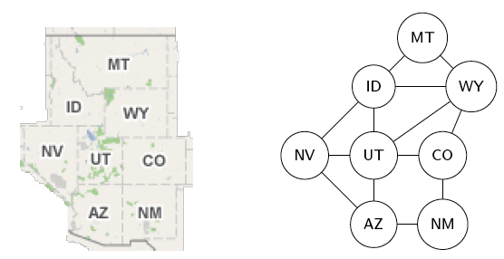
Figure 50: Intermountain West Adjoining States
Path
In a graph with at least two nodes, a path from node s to node t is a sequence of connected links, l1, l2, l3, …, ln, where n ≥ 1, and s is the first node of l1, t is the second node of ln, and for 1 ≤ i < n, the second node of li is the same as the first node of li+1. A path can also be represented as a sequence of nodes, v1, v2, v3, …, vn, where n ≥ 2, which are the links’ nodes listed without duplicates, so li = [vi, vi+1].
Path Length
The length of a path is the number of links (or nodes) in it. Among several paths, the shortest path is the one with the smallest number of links (or nodes) in it, and the longest path is likewise the one with the largest number.
Defined in the introductory paragraph above, but to reiterate:
Cycle
In a graph with at least two nodes, a cycle is a path from a node back to itself. In other words, the designated node is both the first node of l1 and the second node of ln.
Simple Path
In a graph with at least two nodes, a simple path is a cycle-free path, that is, a path with no cycles in it.
For example, in the Intermountain West Adjoining States graph, here are five
paths from ID to AZ:
[[ID MT] [MT WY] [WY UT] [UT AZ]] [[ID NV] [NV AZ]] [[ID WY] [WY UT] [UT AZ]] [[ID UT] [UT CO] [CO NM] [NM AZ]] [[ID UT] [UT CO] [CO WY] [WY UT] [UT AZ]]
Note that in the fourth path the symmetry (or unorderedness) of the link [AZ
NM] was exploited to make the equivalent [NM AZ] the last link in the path.
Note too that the fifth path has a cycle in it, so whereas the first four are
simple paths, the fifth is not a simple path.
Here are the alternate representations of these five paths:
[ID MT WY UT AZ] [ID NV AZ] [ID WY UT AZ] [ID UT CO NM AZ] [ID UT CO WY UT AZ]
In this alternate representation, the existence of a cycle in the fifth path
is easily seen by UT’s duplicate appearance. Here are both representations
of a cycle starting and ending with UT (again exploiting symmetry, this time
of [AZ UT] and [UT AZ]):
[[UT CO] [CO NM] [NM AZ] [AZ UT]] [UT CO NM AZ UT]
HST
How does allowing cycles imply the existence of more than one path from one graph node to another?
KDB
List in lisp form all the simple paths (in both representations) from MT to
NM, identifying the shortest path(s) and the longest path(s).
VWD
Multigraphs
- Are like simple graphs, but there may be more than one link connecting two given nodes.
- Have N, a set of Nodes.
- Have L, a set of Links (as primitive objects).
- Have a function \(f : L \rightarrow \{(u,v) \mid u,v \in N \land u \ne v\}\)
- Are compactly described as a triple: G = (N, L, f)
For example, a transportation network whose nodes are cities, and whose links are segments of major highways is a multigraph.
VWE
Pseudographs
- Are like multigraphs, but links connecting a node to itself are allowed.
- The function \(f : L \rightarrow \{(u,v) \mid u,v \in N\}\)
- Link \(l \in L\) is a loop if \(f(l) = (u, u) = \{u\}\)
For example:
Figure 51: Pseudograph
This could be the graph of a campground with three campsites (nodes) linked by trails between them, and also having loops from each campsite back to itself.
VWF
Directed Graphs
- Correspond to arbitrary binary relations R, which need not be symmetric.
- Have N, L, and a binary relation R on N.
For example, N = people, R = \(\{(x, y) \mid x\ \mbox{loves}\ y\}\). For another example N = players, R = \(\{(x, y) \mid x\ \mbox{beats}\ y\}\) (in words, a tournament graph).
HTC
Which node in the directed graph below represents Abu in the ping-pong tournament he was in?
Figure 52: Directed Graph
VWG
Directed Multigraphs
- Are like directed graphs, but there may be more than one link from one node to another.
- Have N, L, and \(f : L \rightarrow N \times N\).
Can you think of an everyday example of a directed multigraph? Before looking at the endnote?
VWH
To study graphs in any meaningful way, you must learn the extensive vocabulary that has grown up around them. The following terminology is only a starting point:
Adjacency
Let G be an undirected graph with link set L.
Let \(k \in L\) be (or map to) the node-pair [u v].
uandvare adjacent.uandvare neighbors.uandvare connected.- Link k is incident with nodes
uandv. - Link k connects
uandv. - Nodes
uandvare the endpoints of link k.
VWI
Degree
Let G be an undirected graph, \(n \in N\) a node of G.
- The degree of n, denoted deg(n), is the number of incident links to it, allowing that any self-loops are counted twice.
- A node with degree 0 is called isolated.
- A node with degree 1 is called pendant.
VWJ
Degree Sequence
A sequence of the degrees of every node in a graph, listed in nonincreasing order (highest to lowest), is the graph’s degree sequence.
For example, the degree sequence of the knobs-and-lines graph is:
[5 5 4 4 4 4 4 3 3 2]
KWD
What is the degree sequence of a full, complete, level-3 binary tree?
HRR
In another multigraph example, what is the connection between this graph and the “birth of graph theory”?
Figure 53: Four Nodes and Seven Links
What do its nodes and links represent? What is its degree sequence?
Explore the graph property “Eulerian”. Does this graph have it? Describe necessary and sufficient conditions for a graph to be Eulerian.
KEO
Explore the question: Does a graph’s degree sequence alone contain enough information to reconstruct the graph?
VWK
Handshaking Theorem
Let G be an undirected (simple, multi-, or pseudo-) graph with node set N and link set L. Then the sum of the degrees of the nodes in N is twice the size of L:
\[\sum_{n \in N} deg(n) = 2|L|.\]
HIJ
Why is that? Give a succinct argument justifying that the degrees of all the nodes add up to twice the number of links. (Hint: what does handshaking signify?)
KLE
Investigate this corollary (immediately inferable follow-on theorem) to the handshaking theorem:
Any undirected graph has an even number of nodes of odd degree.
HAB
Is there (can there exist) a simple graph with degree sequence [3 2 1 0]?
Justify your answer.
VWL
Directed Adjacency
Let G be a directed (possibly multi-) graph and let k be a link of G
that is (or maps to) [u v].
uis adjacent tov.vis adjacent fromu.- k comes from
u. - k goes to
v. - k connects
utov. - k goes from
utov. uis the initial node of k.vis the terminal node of k.
KOV
Choose a link in the directed (tournament) graph above. Use all of the vocabulary just above to describe it.
Directed Path/Cycle
In a directed graph, a directed path respects the direction of the arrows, or in other words, it follows the one-way-ness of the links. So if v1, v2, v3, …, vn is the sequence of nodes, links always go from vi to vi+1 — where 1 ≤ i < n — unless it is a directed cycle, in which case there is also a link that goes from vn to v1.
HBT
List in lisp form (using the shorter representation) all the directed paths in
the tournament graph from node A to node F. How many of these paths
include node G?
VWM
Directed Degree
Let G be a directed graph, n a node of G.
- The in-degree of n, deg-(n), is the number of links going to n.
- The out-degree of n, deg+(n), is the number of links coming from n.
- The degree of n is just the sum of n’s in-degree and out-degree, deg(n) = deg-(n) + deg+(n).
VWN
Directed Handshaking Theorem
Let G be a directed (possibly multi-) graph with node set N and link set L. Then the sum of the in-degrees is equal to the sum of the out-degrees, each of which is equal to half the sum of the degrees, or the size of L:
\[\sum_{n \in N} deg^-(n) = \sum_{n \in N} deg^+(n) = \frac{1}{2} \sum_{n \in N} deg(n) = |L|.\]
Note that the degree of a node is unchanged whether its links are directed or undirected.
VWO
Special Graph Structures
The following special types of simple undirected graphs are study-worthy:
- Complete graphs Kn
- Cycles Cn
- Wheels Wn
- n-Cubes Qn
- Bipartite graphs
- Complete bipartite graphs Km,n
VWP
Complete Graph
For any n ∈ N, a complete graph on n nodes (Kn) is a simple graph with n nodes in which every node is adjacent to every other node.
- \(\forall u, v \in N : u \ne v \rightarrow (u, v) \in L\).
K1, K2 and K3 go first, followed by K4 and an alternate K4 with no line crossings, and K5 — described as a pentagram inscribed in a pentagon — is last but not least:
Figure 54: K1, K2 and K3
Figure 55: K4
Figure 56: Alternate K4
Figure 57: K5
Note that \(K_n\) graphs have n nodes, and a combinatorial number for how many links: \[\sum_{i = 0}^{n - 1}i = \frac{n(n - 1)}{2} = {n \choose 2}.\]
VWQ
Cycle
For any n ≥ 3, a cycle on n nodes (Cn) is a simple graph where
- \(N = \{v_1, v_2, \ldots, v_n\}\) and
- \(L = \{(v_1, v_2), (v_2, v_3), \ldots, (v_{n - 1}, v_n), (v_n, v_1)\}\).
Note that C3 is the same as K3. Here are C4, C5, C6, C7 and C8:
Figure 58: C4

Figure 59: C5
Figure 60: C6
Figure 61: C7
Figure 62: C8
Cn graphs have n nodes and n links.
VWR
Wheel
For any n ≥ 3, a wheel (Wn) is a simple graph obtained by taking the cycle Cn and adding one extra node \(v_{hub}\) and n extra links:
- \(\{(v_{hub}, v_1), (v_{hub}, v_2), \ldots, (v_{hub}, v_n)\}\).
Here are the first six wheel graphs:
Figure 63: W3
Figure 64: W4
Figure 65: W5
Figure 66: W6
Figure 67: W7
Figure 68: W8
Wn graphs have n+1 nodes and 2n links.
KNF
What is the degree sequence of the wheel graph W5? What is it in general for a Wn?
VWS
n-cube
For any n ∈ N, the n-cube (or hypercube) Qn is a simple graph consisting of two copies of Qn-1 connected together at corresponding nodes.
Here are Q0, Q1 and Q2, followed by Q3 and Q4. Qn for n ≥ 5 are exceedingly messy to draw:
Figure 69: Q0, Q1 and Q2
Figure 70: Q3
Figure 71: Q4
HJS
Qn graphs have 2n nodes. How many links do Qn graphs have? (The answer is a non-trivial function of n.)
VWT
Bipartite Graph
For any m, n ∈ Z+, a bipartite graph is a simple undirected graph whose nodes can be divided (partitioned) into two (bi-) sets (parts), the first of size m, the second of size n, such that its links only go between (inter-) nodes in either set, never among (intra-) the nodes in one or the other set.
For example, the following are bipartite graphs:
Figure 72: A Bipartite Graph
Figure 73: Another Bipartite Graph
By contrast, the following two graphs are not bipartite:
Figure 74: Not a Bipartite Graph
Figure 75: Also Not a Bipartite Graph
KBB
What would a tri-partite graph look like? An n-partite graph?
Complete Bipartite Graph
For any m, n ∈ Z+, a complete bipartite graph Km,n is a bipartite graph having all allowed links.
Here are three examples:
Figure 76: A Complete Bipartite Graph
Figure 77: Another Complete Bipartite Graph
Figure 78: Yet Another Complete Bipartite Graph
HAX
What are m and n for the three Km,n graphs above?
KHQ
In what sense is a K3,3 like a K5? (Hint: the latter was said to come last but not least above — but it is least in this sense.)
HKE
Investigate bipartite graphs and complete bipartite graphs. What kinds of applications fit these types of graphs?
TODO VWU give examples of each representation, including elisp
Graph Representation
Other than as drawings, graphs can be represented abstractly as various data structures:
- Adjacency list — a table with one row per node, listing each node’s adjacent nodes.
- Directed Adjacency list — a table with one row per node, listing the terminal nodes of each link incident from that node.
- Adjacency matrix — a matrix \(A = [a_{ij}]\), where \(a_{ij} = 1\) if \((n_i, n_j)\) is a link, \(a_{ij} = 0\) otherwise.
- Incidence matrix — a matrix \(M = [m_{ij}]\), where \(m_{ij} = 1\) if link \(l_j\) is incident with node \(n_i\), \(m_{ij} = 0\) otherwise.
TODO VWV make an animated gif of the three graph complement images
Subgraph
A subgraph of a graph G = (N, L) is any graph H = (O, P) where \(O \subseteq N\) and \(P \subseteq L\).
For example, if G is the 10-node-19-link “knobs-and-lines” graph shown above, then H shown below is one of its subgraphs:
Figure 79: A Subgraph
KHO
Describe H in terms of subsets of G if G = [[a b c d e f g h i]
[[a b] [a c] [a g] [b d] [b f] [b e] [c d] [c f] [c g] [c h]
[d e] [d g] [d h] [e i] [e j] [f i] [g h] [h i] [i j]]].
Graph Union
The union \(G_1 \cup G_2\) of two simple graphs \(G_1 = (N_1, L_1)\) and \(G_2 = (N_2, L_2)\) is the simple graph \((N_1 \cup N_2, L_1 \cup L_2)\).
For example, if \(N_1 =\) [A B C D E F G H I J], \(L_1 =\) [AB AC AF BH CD CI DE
EF EG FJ GI HJ IJ];
Figure 80: G1 for Graph Union
\(N_2 =\) [B D E G H], \(L_2 =\) [BG BH DE DH EG];
Figure 81: G2 for Graph Union
then \(G_1 \cup G_2\) can be drawn as a pentagram inside a pentagon connected by five spokes:
Figure 82: Graph Union G1 ∪ G2
Graph Complement
The complement of simple graph G, denoted \(\overline{G}\), is the graph with the same node set (N) as G, but with none of the same links. Instead, the links of \(\overline{G}\) are all the links of the complete graph Kn, where n = |N|, except for those that are also links of G.
To form the complement of a graph G, take all its nodes, and take the complement of the link set of G with respect to the universe, which is the set of all links in a complete graph formed from G’s nodes. As in the following, where the middle graph shows in red the complementary links, and the third graph is the end result of complementing the first graph:
Figure 83: Graph to Complement
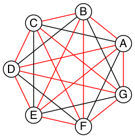
Graph Intersection
The intersection of two sets can be defined in terms of the complement of the union of the complements of the two sets, by DeMorgan’s law.
HLX
Since graphs are defined in terms of sets, define graph intersection accordingly. Give an example.
KSI
Not to be confused with graph intersection, the intersection graph of a collection of sets A1, A2, …, An is the graph that has a node for each of these sets and has an edge connecting the nodes representing two sets if these sets have a nonempty intersection.
Construct the intersection graph of this collection of five sets:
| Set Name | Set Elements |
|---|---|
| A1 | [-4 -3 -2 -1 0] |
| A2 | [-2 -1 0 1 2] |
| A3 | [-6 -4 -2 0 2 4 6] |
| A4 | [-5 -3 -1 1 3 5] |
| A5 | [-6 -3 0 3 6] |
Draw this graph. What is its degree sequence?
HTR
What does it mean to say that \({\sf VWX}\) has
([2 1 1] [2 2 2 1 1] [4 1 1 1 1])
as its list of degree sequences?
KSQ
Construct a graph using the following list of eight words as node labels:
dine done gone tine tone wind wine wins
Link two nodes if they differ in only one letter in the same position (e.g.,
wind and wins differ in the fourth letter only, so that defines an edge.
But dine and tone differ in the first and second letters, so no edge
there).
Randomly select two nodes of this graph. What is the probability that there is an edge between those two nodes?
HBE
A planar graph is a graph that can be embedded in the plane, i.e., it can be drawn on the plane in such a way that its edges intersect only at their endpoints. In other words, it can be drawn in such a way that no edges cross each other.
True or false, the RSA graph is a planar graph.
VWW
“What are your top two favorite colors, Ila?” asked Abu. Ila said, “Green and purple, why?” “Ah,” said Abu, “your eye color, and the color of royalty, that makes sense!” “Whatever,” said Ila, “I just like them.” Abu said, “Are you okay, then, if we say green means friends, purple strangers?” Ila nodded. “I see where you’re going with this now — you want to review the Ramsey theory argument Til wanted us to look at.” “Yep,” said Abu. “I liked how you begged him for an alternative to the supertree modeling assignment — even after he said we could reduce its size by a factor of ten!” Ila protested, “I didn’t ‘beg him’. I merely suggested it wouldn’t be as beneficial as exploring Ramsey theory.” “You begged off, in other words.” Abu was enjoying needling Ila. “Oh whatever!” she huffed.
“Anyway,” Abu said, “remember he first mentioned this argument when we were talking about complete graphs?” “I do remember that,” said Ila. “We took a complete graph Kn to be modeling n people connected by a friendship — or acquaintanceship — relation, and its opposite — non-acquaintanceship.” “Or for simplicity, say any two people are either friends or strangers,” Abu said. Ila said, “It’s like it’s a heterogeneous graph, but almost not.” “Right,” said Abu. “There are two different types of links, but the second type is really just the absence of the first type. At any rate, there’s no third option, like semi-acquainted.” Ila said, “That’s why two colors are all we need.”
“Right!” Abu said, “So let’s get concrete, and say we have five people —
call them A, B, C, D and E, to make short node names.”
“I’ve got my graph-drawing code ready to roll,” Ila said, “so here are two
random K5 graphs, with their links colored with my colors — and we’ll go
with what you said they mean.” “Let’s see,” said Abu, “in this first graph, we
have AB, AC, BC, CD, CE, and DE colored green, and AD, AE,
BD, and BE colored purple.”
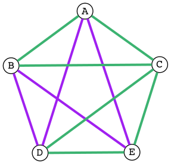
Figure 86: Randomly Colored K5
“Yes,” said Ila, “and it means that A, B and C are mutual friends, and
C, D and E are mutual friends, but there is no set of three people who
are mutual strangers.”
“Interesting — ” said Abu, “in this second graph, A, B and C are still
mutual friends, but now [A D E], [B D E], and [C D E] are three sets of
mutual strangers. Green: [AB AC BC]. Purple: [AD AE BD BE CD CE DE]. Ten
total:”
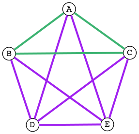
Figure 87: Another Randomly Colored K5
Ila said, “I see something interesting in both graphs. If you have any same-colored triangles — what did Til call them?” Abu said, “It was a mouthful.” “I recorded it,” Ila said, searching through her notes. “Ah, here it is: Embedded monochromatic K3 subgraphs!” “I like triangles better,” said Abu. “So,” said Ila, “if you have any of these triangles at least one side has to be an outer link — outer meaning around the periphery of the pentagon.” “Yes, I see it too,” said Abu. Ila said, “So what if we colored all the outer links green and all the inner ones purple?”

Figure 88: Outer Green Inner Purple K5
Ila blinked a couple of times and said, “Now we have many pairs of friends and many pairs of strangers, but no triples — triangles — of either.”
“So how did the Ramsey question go?” said Abu, looking at his notes. “If you want to guarantee that at least three mutual friends or three mutual strangers exist in a group of people, what is the minimum number of people you need? It has to be more than five, as we just saw with only five people there is a way to avoid this scenario.” Ila said, “So we know it’s at least six.” “Right,” said Abu, “so can we argue, from logical necessity, that six it is — no more, no less? That there must exist in a K6 graph, whose links are colored either green or purple, at least one green or one purple triangle? Meaning that it can’t be avoided, no matter how you color the graph?” Ila said, “Yes, well, according to Ramsey, it must be absolutely unavoidable. Avoiding it would have to be logically impossible.”
Abu mused, “So how do we make that argument? Tell you what. Let’s not do it by looking at and eliminating every possible coloring, since a K6 has 15 links, that would make 215 = 32,768 different colorings!” Ila queried, “Remind me how you got that?” Abu replied, “You have two color choices to make for each link, green or purple.” “Oh yeah,” said Ila, “that 2n thing again: 2 × 2 × 2 × 2 × 2 × 2 × 2 × 2 × 2 × 2 × 2 × 2 × 2 × 2 × 2 = 215, 15 links, 2 choices for each, 32,768 total colorings, got it!”
Abu said, “So we have to reason without using this silly, brute-force kind of
thinking.” Both Abu and Ila went silent for several seconds. Abu broke the
silence with a sudden clearing of his throat. “I have an idea,” he said.
“Suppose we use one node (say C) as representative of all of them. C has
five links, and with just two colors at our disposal, at least three of the
links must be the same color!” “Wait,” said Ila, “you can color green any of
the five links — 0, 1, 2, 3, 4, or all 5 of them — so how can you say
that?”
“Look,” said Abu, “if 0, 1 or 2 (less than 3) are green, then 5, 4, or 3 (at least 3) will have to be purple, right?” “Oh right,” said Ila, “I wasn’t thinking generally.” “I know,” said Abu, “it’s like we need to pick one color to focus on, but the problem doesn’t say at least three friends, it doesn’t say at least three strangers, it says at least three mutual friends or three mutual strangers. It’s got this yin-yang feel to it!” “So generally speaking,” said Ila, “we could take our green-primary, purple-secondary scenario – yin, swap green and purple and have the same yang argument!” “That cuts our work in half — not bad,” Abu said, clapping his hands. “So now draw yin, and just for grins make the middle three links grin — er, I mean green!” ☺
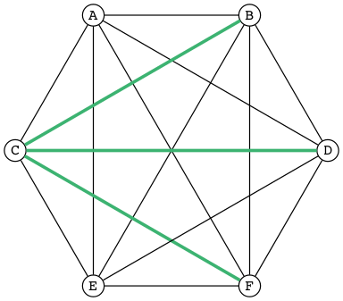
Figure 89: Three Green Links
“Now look at links BD, BF, and DF. Coloring any of them green would give us a green triangle — BCD, BCF or CDF.”
BCD
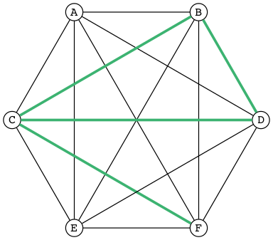
Figure 90: Green Triangle BCD
BCF

Figure 91: Green Triangle BCF
CDF
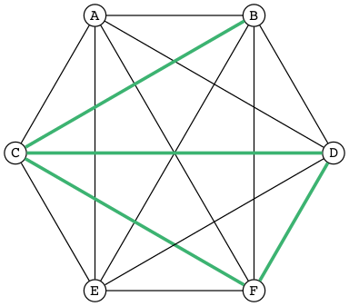
Figure 92: Green Triangle CDF
“Oh wow!” squealed Ila, “so if we can’t color any of them green, they must all be purple!”
Abu fairly whooped, “Which forces BDF to be a purple triangle — ’tis
Un. Avoid. Able!”
BDF
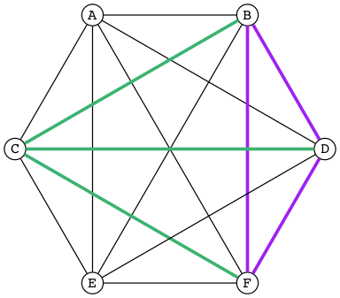
Figure 93: Purple Triangle BDF
Wide-eyed, Ila said, “So there must be three mutual friends, or three mutual strangers — having no three be mutual friends and simultaneously no three be mutual strangers is impossible.”
Grinning from ear to ear, Abu said, “That, my friend, is an air-tight argument — congratulations!” Ila nodded, her smile broadening too. “Kudos to both of us. Til will be proud!”
KSC
Generalizing, the Ramsey function R with two parameters, R(i, j), returns the minimum n for which in a Kn graph where the links are colored with two colors, there must exist either an embedded Ki subgraph whose links are all of the first color, or an embedded Kj subgraph whose links are all of the second color. As is fairly easily shown, R(3, 3) = 6. Many others of these so-called Ramsey numbers are known and are provable, e.g., R(4, 4) = 18 and R(4, 5) = 25, but most are not. For example, it is known that R(5, 5) is at least 43 and at most 48, but which number between 43 and 48 is the exact value is unknown. Why is that? Research and describe why we are currently unable to nail this value down.
YZ@
Yon Zoo @waits the Intrepid Explorer.
“Isn’t it interesting how languages either facilitate or impede communication?” asked Til, just as Ila and Abu entered his den. Ila replied, without missing a beat, “I know programming languages facilitate communication with computers, but I don’t see the impediment”. “I do,” said Abu. “Not knowing any programming languages, except a little lisp, I suppose, impedes my communication with you when you’re talking programming.” “Yes”, said Ila, “but ignorance on your part is not the fault of the languages. So, Til, did you mean ignorance of languages is the impediment?”
“No, not necessarily. Sometimes a perfectly natural and known language like English is used, or I should say misused, to obfuscate rather than communicate — to hide rather than reveal meaning. I’ll come back to this point later.”
“So the question, what is a language, with its obvious answer, a language is something used to communicate, is too general in one sense, and too specific in another.”
“As you’ll see, languages can be generalized to a set of strings, but made more specific by how that set is defined. What are called Phrase-Structure Grammars — PSGs — are the tools (rules) used to define which strings are valid members of the language associated with that PSG. Now let me be clear what that association is. It is that PSGs generate languages, and so of course, languages are generated (built) by PSGs.”
“In English (or any natural, human language) you follow the rules when you adhere to the grammar. A main component of a formally defined grammar is the set of productions — the rules that produce valid strings in the language. In essence, applying these rules is how different strings of words (phrases, sentences) are generated. Deliberately, or even ignorantly violating these rules leads to confusion and failed communication. Because the grammatical rules of English are so complex, ambiguity and misunderstanding frequently lurk beneath the surface.”
“Take what you said earlier, Ila. ‘I know programming languages facilitate X.’ (I’m abbreviating.) One sentence, or two?”
I know programming. Languages facilitate X.
Abu said, “It seems pretty clear from the context that it’s one sentence.” Ila said, “I agree. I don’t see the problem.”
“It’s not a problem — for you. Missing the context, and minus the fluidity and rapidity with which you uttered that one sentence, however, it could be misconstrued — legally but erroneously parsed — into two.”
Til cleared his throat and went on. “Take this imperative statement: Love One Another. A Christian maxim, if I’m not mistaken.”
Ila and Abu glanced at each other in surprise. Til, ‘til now, had never brought up religion in any of their discussions, whereas they had certainly broached the subject, on more than one occasion, when it was just the two of them, meeting to work on homework assignments, or just waiting for Til. Ila thought Abu, a Mormon, hopelessly deluded. Abu thought Ila, an evangelical Christian, a prospective Mormon, if she could only get past her myopia! Now to hear Til bring this up was a tantalizing turn, and mildly amusing to all three of them when Ila and Abu said in unison, “John 13:34!”
“Yes, well, very good,” said Til, with raised eyebrows. “I see you both know your Bible.” If they think, thought Til, that this is leading into a religious discussion, they will be disappointed. Not that he was opposed to hearing their religious opinions, just not right now. (When, then? asked a nagging voice in his head. He ignored it. But God was still to be the subject of a sentence.)
“This is not the simplest English grammatical construction. Simpler would be ‘God Loves You,’ which is in Subject-Verb-Object order, very common in English. You could make sense of each of the other five permutations, but only by giving a lot of context:”
- Love Another One.
- One Love Another.
- One Another Love.
- Another Love One.
- Another One Love.
“So,” said Ila, “are you saying word order causes communication problems?”
YZA
“Here’s a thought,” said Abu. “Have you ever tried to make sense of some kinds of poetry? Poets are always scrambling word order to fit some rhyme or meter scheme. Like in a poem by Wordsworth that I just read:”
Bliss was it in that dawn to be alive.
But to be young was very Heaven!
Said Til, “Or from a more familiar poem: ‘Quoth the raven’ instead of ‘The raven said.’ Still perfectly correct. In fact, saying ‘The raven quoth’ is not grammatical, by the very special rule attached to that very archaic word.”
“So, not so much word order as word choice. Remember I started talking about the misuse of English to obfuscate? Jargon is the apposite word here. This misuse of language erects barriers in the guise of facilitators. We justify ourselves in this activity because of the benefits — and there are benefits — but do we ever weigh them against the costs?”
“Benefit-wise, jargon saves time and space by compressing information that needs sharing, but somewhat-intangible-cost-wise that very efficiency impedes understanding by outsiders of what insiders are saying. Hiding meaning from the uninitiated is such a powerful urge, and human vanity is an imp that eggs us on.”
“For example, what does partial template specialization mean? And what is the cardinality of the power set?”
Said Ila, “I can tell you the answer to your second question, but I have no clue about the first.”
Said Abu, “I agree, but regarding your second question, do you think it’s better to put it more simply, like, how many subsets does a set of size n have?”
“I do,” said Til. “Math is a language that desperately needs less jargon, more clarity. And not to keep you in suspense, well, not to keep you from the adventure of discovery, either, so for a little hint, partial template specialization is a very obscure quote-unquote feature of the C++ language.”
Ila said, “I’ll check it out, but just from the sound of it I’m glad C++ is not the language my company uses!” Abu added, “Me too!” Ila said, “You run a nursery, what are you talking about?” “Hey!” said Abu, “we just hired a programmer to help us manage our inventory and production.” Til interrupted, “Let’s talk about the programming language choice issue later.”
“But speaking of business, you’ve no doubt heard the stories about when a business consultant, tongue firmly in cheek — or not — randomly chooses three words from three different lists to create for client consideration impressive-sounding, meaningless phrases, like
customer value trajectory, or stratified business intelligence, or hypercubic mission criticality.”
“Wow, did you just make those up?” wondered Abu, silently. Ila said, “I hear that stuff all the time from the consultants my company hires. It’s worse than nonsense, if you ask me.”
“But not all of it is so obviously bad,” said Til. “Let me put it this way. Proclivities — what a nice word! Many people have proclivities, inclinations, predispositions to use more words, or bigger words, or shinier words than necessary to get what they want, or what they think they want. Flattery is replete with this abuse of language.”
Abu rose to the challenge: “Your mellifluous speech shows a penchant for pulchritudinous word marshalling.”
Ila snorted. “You mean marshmallowing — sicky sweet, with no nutritional value!”
“So you agree it’s a problem!” winked Til. Both Abu and Ila nodded and chuckled.
“Well, it’s not one we’re going to solve today,” he said. “So let’s go back to talking about problems in mathematics. Mathematical language, unlike natural language, is precise and unambiguous. Equations — tautologies — always true. Never a doubt. Pure syntax without the clouding confusion of semantics.”
YZB
“That’s the official story. Now let me qualify that a bit. Kurt Gödel, one of the, if not the most brilliant mathematical logicians of all time, once said:
The more I think about language,
the more it amazes me that people
ever understand each other.
“What amazes me about mathematicians, who are people too, is that they are such poor writers — when writing mathematics, at least. I alluded to this a little bit ago. Math writing is notorious for its lack of clarity, despite its claim of delivering unadulterated truth.”
His excitement bubbling, Abu said, “I like this quote from one of the books you recommended that I just started reading. The authors say …”
What we present may not resemble math, because we avoid the cryptic equations, formulas, and graphs that many people have come to know and fear as mathematics. Indeed, those symbols are the memorable icons of an often-forbidding foreign language of mathematical jargon, but it’s not the only language of mathematics and it does not reside at the center of the subject. The deepest and richest realms of mathematics are often devoid of the cryptic symbols that have baffled students through the generations. Ideas — intriguing, surprising, fascinating, and beautiful — are truly at the heart of mathematics.
YZC
Ila said, “I have a quote, too, along these lines. May I share it?” Til nodded, and Abu winced — was Ila jabbing him for plunging ahead without asking?
“It’s also from one of your recommended books. The author is a Nobel laureate physicist:”
To many people who are not physicists, modern physics seems to have left the solid world of understandable here-and-now to enter a weird realm of uncertainties and strange, ephemeral particles that have whimsical names and dubious existence. What has actually happened is that physics has gone far beyond the point where ordinary, everyday experiences can provide a kind of human analogy to the things that the physicists are studying. It is a problem of language.
The vocabulary and syntax of human language evolved to describe the workings of the everyday world, the world we can see, hear, touch, taste and smell. Words were simply not intended to describe things unimaginably great or incredibly small, far beyond the range of our unaided senses, where the rules of the game are changed. The true language of physics is mathematics.
YZD
Said Til: “Excellent! But more on these ideas later. Think about what you know about the language of logic. It had something of a learning curve when you first encountered it, right? Formal logic is a formidable but foundational system of thought, a way to give precision to thought and reasoning, that can nonetheless trip up the uninitiated. Since I just mentioned Kurt Gödel, let me give you a description of formal systems, or at least, the rules of formal systems, from a book written about him.
“This passage pauses while expressing the point of view that ‘mathematics is merely syntactic;’”
its truth derives from the rules of formal systems, which are of three basic sorts: the rules that specify what the symbols of the system are (its “alphabet”); the rules that specify how the symbols can be put together into what are called well-formed formulas, standardly abbreviated “wff,” and pronounced “woof”; and the rules of inference that specify which wffs can be derived from which.
Said Abu, “I recall some of the rules we learned for the wffs of propositional logic, like ‘p → (q ∨ r)’ is one but ‘→ p (∨ q r)’ is not.”
Said Ila, “Unless you put parentheses around the whole thing and call it lisp!”
Said Til, “Right! You would have to scramble the symbols even more, like ‘p q ) ∨ (r →’ to really unwffify it!”
Said Abu, “So like the shuffling you did with John 13:34, would you say you unwffified that phrase five different ways?”
Said Til, “The rules of English grammar are many and varied, and sometimes downright mysterious, so I will leave that question for you to answer! However, a wff like ‘he went to the store’ is quite obviously not well formed as ‘to he store the went’.”
Said Ila, “So the rules we learned for composing propositions — there were only four of them, right?”
YZE
Said Til, “Yes. But that simple grammar did not take into account parentheses for grouping, so it was incomplete. But we will fix that later. There’s one more thing I want to mention about human communication before shifting our focus a bit. We don’t stop to consider this very often, but another problem (bug? feature?) of language is the problem of linearity — or sequentiality — the sentences as ‘beads on a string’ analogy used by Steven Pinker and others — words must be written out or spoken and then read or heard in sequence, over time, instead of just apprehended ‘all at once’ — in toto. What would our communication be like if we could do that?”
Abu and Ila looked deep in thought, grappling with that idea, which pleased Til, but he also knew that they didn’t have time to discuss it — not today. Rather reluctantly, he interrupted their reverie and said, “Hold those thoughts, and we’ll dissect them later. For now, other problems await our attention. While obviously mathematical in nature, indeed, discrete mathematical, problems in computer science are the ones we will focus on.”
YZF
“Computer scientists, especially those into theoretical computer science, like to cast problems in the common mold of languages. They do this for technical reasons, more thoroughly delved into in a course on computational theory. But here is a simple, favorite example: Is 23 prime? This is a decision problem whose answer is yes, easily verified by simply trying to divide 23 by 2 and 3, and failing on both counts, of course. This decision could also be made by sequentially searching for and finding the string
"23"
in the set
["2" "3" "5" "7" "11" "13" "17" "19 "23" ...]
of strings.”
(format "%S" (number-to-string 23))
"23"
(format "%S" (member (number-to-string 23) (mapcar 'number-to-string [2 3 5 7 11 13 17 19 23])))
("23")
YZG
Til went on. “This set of strings is a language, and if you allow that the ‘…’ stands for an infinity of bigger and bigger strings of this rather well-known kind, it is the language of PRIMES. It is given the name PRIMES, at any rate. So, does PRIMES contain the string “23232323232323232323”? is another way to ask, is 23232323232323232323 prime? The answer is no — it’s a composite number with seven prime factors — including 23 — but the computational solution to that set membership determination problem is significantly harder than the one for 23. It’s not done by simply searching in a static list. While many lists of primes exist, no one creates lists with every prime in it up to some huge limit. True, programs exist that can do that, using some variation of the classic Sieve of Eratosthenes, which goes way back, showing how old this problem is. But the point is, to solve a language membership problem you need computational strategies and tactics and resources. Simply put, we can model computation most generally in terms of machinery that can input a string, and output a ‘yes’ or a ‘no’ — ‘in the language’, or ‘not’.”
Ila said, “But not every problem has a yes-or-no answer!” and Abu agreed, offering “Like sorting, which I understand to be a typical problem for computers.”
“Ah, my young friends,” Til chuckled. “It so happens you are right, but computer scientists are clever people, and they have figured out a way to model a very large number of problems as decision problems, or as a series of decision problems. Your very example of sorting, Abu, is one of the easiest.”
“How so?” said Abu, exchanging a puzzled look with Ila.
“Look at a simple example,” Til said. “Sorting (13 2 26) (or some other
permutation) in ascending order is a matter of answering three (to five)
yes-or-no questions: is 13 less than 2 (no, so swap them), is 2 less than 26
(yes, so don’t swap them), and, is 13 less than 26 (yes, so leave them where
they are as well). The result: (2 13 26).”
(let* ((unsorted '(13 2 26)) (a (nth 0 unsorted)) (b (nth 1 unsorted)) (c (nth 2 unsorted))) (if (< a b) (if (< a c) (if (< b c) (list a b c) (list a c b)) (list c a b)) (if (< b c) (if (< a c) (list b a c) (list b c a)) (list c b a))))
(2 13 26)
Ila was still puzzled. “How does that relate to a set membership decision problem?” Abu grinned his big, I-think-I-know grin, and said: “Let me try to answer that.” Til said, “Go ahead!” as Ila clenched her teeth. She thought she knew how now too.
“Suppose I take the language of numbers
["1" "2" "3" "4" "5" "6" ...]
and slice it into overlapping subsets like so:
Less-than-2: ["1"] Less-than-3: ["1" "2"] Less-than-4: ["1" "2" "3"]
and so on, as many as I like. Then to answer the question, is a less than
b, I just ask is a in the subset Less-than-b?”
Ila frowned. “But isn’t that a way, way inefficient way to compare two numbers?” Til said, “Yes, it is, but if we’re not concerned with efficiency, that approach certainly works.”
“But consider a big advantage of treating numbers as strings of digits. As you
know, when the numbers get big we need special procedures if we want to do
arithmetic with them. Let’s lump the relational operations with the arithmetic
ones, and ask, how would one answer a simple a < b question, given:”
(setq a-as-string "361070123498760381765950923497698325576139879587987251757151" b-as-string "36107058266725245759262937693558834387849309867353286761847615132" is-a-less-than-b (if (< (length a-as-string) (length b-as-string)) "Yes, a < b." "No, a is not < b."))
Yes, a < b.
“That’s easy! b is bigger, because it has more digits,” said Ila. “Right,”
said Abu. “At least, as long as the first five digits of b are not zeros!”
Ila nodded agreement, “And even if the strings were the same length, a
digit-by-digit comparison would soon reveal the answer.” Abu quickly added,
“So, banning leading zeros in these strings of digits, lexicographical
ordering comes to mind as a convenient way to sort them, one that can answer
all relative size questions. Am I right?”
Til nodded, almost imperceptibly, while Ila thought Of course you are, smarty pants, and then said, “But why the jargony lexicographical? Isn’t there a better word than that? ‘Lexicon’ is just another word for ‘dictionary’, so why not just say sort in dictionary or even alphabetical order?”
Abu said, “You mean use a shorter word? I don’t remember where I saw lexicographical, and no, I don’t know if there’s another, less jargony way to say what it means. Technically speaking, what does it mean, Til?”
“You’re about to find out!” Til said, as he flashed them his mischievous smile.
YZH
In normal usage, a language is something we use to communicate, in speaking or writing. In theoretical computer science, a language is no more and no less than some subset of a set of all strings over some alphabet. Related formal definitions follow:
An alphabet is any non-empty, finite set (typically abbreviated Σ).
Not letters, symbols are what the members or elements of a generic alphabet are called.
A string is a finite sequence of symbols from a given alphabet.
The length of a string is the number of symbols contained in the string. |w| denotes the length of w, in another overloading of vertical bars. The empty string (abbreviated λ or ε) is a string that has a length of zero.
The process of appending the symbols of one string to the end of another string, in the same order, is called concatenation.
When the symbols in an alphabet all have length one, strings are usually
written as symbols placed side-by-side without adornments of brackets or
braces, commas or spaces — so abab rather than {a, b, a, b} or [a b a
b].
Also, in almost all programming languages strings are surrounded by single- or double-quotes, and these languages have at least one operation to perform string concatenation, e.g.:
(print (concat "ABC" "XYZ"))
"ABCXYZ"
A method of listing strings called lexicographic ordering differs from so-called dictionary ordering in one essential way. The former method sorts strings first by increasing length (so shorter strings come before longer ones) and then by the predefined (dictionary) order of the symbols as given in association with the strings’ alphabet.
For instance, in lexicographical ordering the string baa would come
before abab because it is shorter by one symbol. In plain old dictionary
ordering lengths are ignored, so the string abab would come before baa,
because a comes before b in the alphabet.
Why this length-considering ordering is preferred will become clear when the * (star) operation is discussed below.
To reiterate, a language is a subset of a set of strings. But which ones? That’s where grammars come into play.
A Phrase-Structure Grammar (PSG) is a four-tuple:
[N T S P] where
Nis a set of Nonterminals (also called Variables)Tis a set of Terminals (N∩T= ∅)Sis the Start Nonterminal (S∈N)Pis a set of Productions (AKA Rules), each one mapping Nonterminals to sequences of Nonterminals and Terminals.
To start with something familiar, here is a sample PSG’s [N T S P] for a
(super small) subset of the English language:
N = [SENTENCE NOUN-PHRASE VERB-PHRASE ARTICLE ADJECTIVE NOUN VERB ADVERB] S = SENTENCE T = [the hungry sleepy cat dog chases runs quickly slowly]
The rules for this PSG are in the table below, in which note that the
vertical bar (|) means OR, e.g., the NOUN rule produces either cat or dog
(exclusive-OR):
Note too that the terminals are just concrete words, the Nonterminals more abstract word types (e.g. NOUN) normally used to talk about and classify words. For the English language (as for any natural language) these terminal words form the set of symbols comprising the alphabet in the sense defined above.
| P = [ | |||
| SENTENCE | → | NOUN-PHRASE VERB-PHRASE NOUN-PHRASE | |
| SENTENCE | → | NOUN-PHRASE VERB-PHRASE | |
| NOUN-PHRASE | → | ARTICLE ADJECTIVE NOUN | |
| NOUN-PHRASE | → | ARTICLE NOUN | |
| VERB-PHRASE | → | VERB ADVERB | |
| VERB-PHRASE | → | VERB | |
| ARTICLE | → | the | λ | |
| ADJECTIVE | → | hungry | sleepy | |
| NOUN | → | cat | dog | |
| VERB | → | chases | runs | |
| ADVERB | → | slowly | quickly | |
| ] |
The process of producing a sequence of terminals from the Start Nonterminal by
replacing Nonterminals one at a time by applying some rule is called
derivation. We apply a single rule and derive one string R from another
string L if the rule has L on the left of its arrow and R on the right
thereof.
Derivation is thus an iterative process, illustrated with two random
components in the following sample PSG-implementing code. Here, productions
are represented as an alist of symbols. For each alist choice-list, the car
is the symbol to the left of the arrow of a production, and the cdr captures
the symbols to the right of the arrow, abbreviated LHS for left-hand-side, and
RHS for right-hand-side. The productions alist is reversed and stored as
well. Which alist (forward or reverse) to use at any step is the first choice
that is randomly decided. Nonterminals are unbound symbols. Terminals are
bound symbols whose values are either t or a string that differs from the
symbol’s string name (e.g., es abbreviating “empty string”). Which terminal
to use when only terminals are options (e.g., in the ARTICLE, ADJECTIVE,
NOUN, VERB and ADVERB rules) is the second choice that is randomly
decided.
(setq the t es "" hungry t sleepy t cat t dog t chases t runs t slowly t quickly t productions '((SENTENCE NOUN-PHRASE VERB-PHRASE NOUN-PHRASE) (SENTENCE NOUN-PHRASE VERB-PHRASE) (NOUN-PHRASE ARTICLE ADJECTIVE NOUN) (NOUN-PHRASE ARTICLE NOUN) (VERB-PHRASE VERB ADVERB) (VERB-PHRASE VERB) (ARTICLE the es) (ADJECTIVE hungry sleepy) (NOUN cat dog) (VERB chases runs) (ADVERB slowly quickly)) reverse-productions (reverse productions)) (defun is-terminal (sym) (and (symbolp sym) (boundp sym))) (defun nonterminals-remain (derivation) (notevery 'is-terminal derivation)) (defun derive (LHS) (let* ((rules (if (zerop (random 2)) productions reverse-productions)) (RHS (cdr (assoc LHS rules)))) (if (null RHS) (list LHS) (if (nonterminals-remain RHS) RHS (list (nth (random (length RHS)) RHS)))))) (defun transform-terminal (terminal) (or (and (boundp terminal) (stringp (symbol-value terminal)) (symbol-value terminal)) (symbol-name terminal))) (defun find-derivation (start-symbol) (let ((derivation (list start-symbol))) (while (nonterminals-remain derivation) (setq derivation (apply 'append (mapcar 'derive derivation)))) (mapconcat 'transform-terminal derivation " ")))
The following derivation would result if the sequence of values returned from
calls to random were [1 1 0 0 0 1 1 1 1 1 1]:
| SENTENCE | → | NOUN-PHRASE VERB-PHRASE |
| → | ARTICLE NOUN VERB-PHRASE | |
| → | ARTICLE NOUN VERB ADVERB | |
| → | the NOUN VERB ADVERB | |
| → | the dog VERB ADVERB | |
| → | the dog runs ADVERB | |
| → | the dog runs quickly |
(find-derivation 'SENTENCE)
the dog runs quickly
Using the above example as a guide, exercise your knowledge to produce
derivations for several sentences, and verify each by giving the
sequence of values returned from calls to random and using that to
override the random function:
TODO Finish showing how to override the random function
(add-function :override (symbol-function 'random) (lambda (&rest args) (string-to-number (read-from-minibuffer (format "Enter random value less than %d: " (car args))))) '((name . interactive-random)))
Execute the following to undo the override:
(remove-function (symbol-function 'random) 'interactive-random)
BAO
Abbreviate the above-described exercise derive-verify. Click on the links so named (or otherwise named) below for answers.
BCD
Derive-verify the sleepy cat runs slowly.
NCO
Derive-verify the hungry dog runs quickly.
PDQ
Derive-verify the hungry dog chases the sleepy cat.
NTC
Combinatorially speaking, how many different sentences can be derived by
repeated evaluations of (find-derivation 'SENTENCE)?
Questions and Answers
With this simple grammar is there a derivation for the following sentence?
the hungry sleepy dog runs
Moving towards more sophistication, what rules would we need to change or add to generate this sentence?
the quick brown fox jumps over the lazy dog
Give these questions some thought before looking at the answers in the endnote.
YZI
The derivation of a syntactically valid structured phrase from the top down can be visualized as the reverse of the process of building, from the bottom up, i.e., from leaves to root, a syntax tree (AKA a parse tree).
For example, a valid sentence forms the leaves of a parse tree:
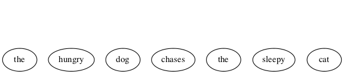
Each terminal is given a parent, and as an alternate representation, each parent-child is rendered in tree form as a two-element list. Abbreviating ADJECTIVE as ADJ, ADVERB as ADV, ARTICLE as ART, NOUN as N, and VERB as V:

((ART the) (ADJ hungry) (N dog) (V chases) (ART the) (ADJ sleepy) (N cat))
Continuing on up the tree, we are also building a nested alist (albeit with repeated keys). Abbreviating NOUN-PHRASE as NP, and VERB-PHRASE as VP:

((NP (ART the) (ADJ hungry) (N dog)) (VP (V chases)) (NP (ART the) (ADJ sleepy) (N cat)))
Finishing with SENTENCE (abbrev. S) being the root of the tree, with the list form consing S on the front:

(S (NP (ART the) (ADJ hungry) (N dog)) (VP (V chases)) (NP (ART the) (ADJ sleepy) (N cat)))
See http://www.ironcreek.net/phpsyntaxtree/ for help with this process. To use this tool, you must change the list-tree representation into nested vectors, rendering the phrase into what they call labelled bracket notation, as follows:
(setq parsed [S [NP [ART the] [ADJ hungry] [N dog]] [VP [V chases]] [NP [ART the] [ADJ sleepy] [N cat]]]) (kill-new (format "%s" parsed))
Click on this link to visualize the hungry dog chasing the sleepy cat as generated by this tool.
{kind=link}
PTW
Using the syntax-tree tool, build a parse tree for the quick brown fox jumps
over the lazy dog.
NTM
Build a parse tree for the cat runs.
BMI
Build a parse tree for the cat chases the hungry dog.
NES
Build a parse tree for the dog runs quickly.
NRC
Build a parse tree for the sleepy dog chases quickly the hungry cat.
YZJ
We next examine a simple grammar in the programming languages direction, to produce, say, well-formed S-expressions. The basis for this grammar is a skeleton for matching opening and closing parentheses, which has a recursive rule for enclosing in parentheses, and one for expanding the length of the string (plus a third for terminating the recursion):
- SKEL → OP SKEL CP
- SKEL → SKEL SKEL
- SKEL → λ
- OP → (
- CP → )
| Start | → | Next Derivation Step | By Applying Rule |
|---|---|---|---|
| SKEL | → | SKEL SKEL | 2 |
| → | OP SKEL CP SKEL | 1 | |
| → | OP OP SKEL CP CP SKEL | 1 | |
| → | OP OP λ CP CP SKEL | 3 | |
| → | OP OP λ CP CP λ | 3 | |
| → | ( OP λ CP CP λ | 4 | |
| → | ( ( λ CP CP λ | 4 | |
| → | ( ( λ ) CP λ | 5 | |
| → | ( ( λ ) ) λ | 5 | |
| → | ( ( ) ) | Remove Invisible λs |
But now a simple binary choice between forward and reverse productions fails, because of the three possible derivations for SKEL.
(setq es "" open "(" close ")" productions '((SKEL OP SKEL CP) (SKEL es) (OP open) (CP close)) reverse-productions (reverse productions))
(find-derivation 'SKEL)
( ( ) )
The grammar for English was long thought to be context free. The simple subset-of-English grammar we have been exploring is certainly not constrained by context.
A grammar is context free if every production has exactly one Nonterminal to the left of its arrow. By way of contrast, here’s an example of two productions in a NON-context-free grammar:
aAc → aabc
aAd → abad
Note that A’s expansion is different when it’s surrounded by a and c than when it’s surrounded by a and d. That means A’s expansion has context “sensitivity”. A grammar/language with this feature is called context sensitive.
Moving down to the simplest type, a language is regular if it can be generated from its alphabet using the three regular operations:
- ∪ (union)
- \(\circ\) (concatenation)
- * (star)
How these work can be crudely illustrated using a type of graph (or pseudograph, as loops are allowed) that could be taken for a “weighted” (actually just link-labeled) directed graph.
- Union
- 0 ∪ 1 — we make a node with a link to another node for each disjunct (0 or 1) — so either path may be taken from the leftmost node.

Figure 98: Three Nodes and Two Links
- Concatenation
- 0 \(\circ{}\) 1 (or just 01) — we make a starting node and two other nodes (one for each symbol) and a link for each conjunct (0 and 1) in sequence:
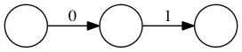
Figure 99: Three Nodes and Two Links In a Row
- Star
- 0* — we make a node with a loop-link labeled with the symbol preceding the star.
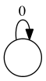
Figure 100: One Node and a Loop-Link
As how these separate operations compose into one graph can get somewhat complicated, we will forgo a complete description of the procedures and rules, but for the record, the most important rule for these graph compositions is:
Every node must have one outgoing link for each symbol in the alphabet.
YZK
A complicating feature of these operators is that they can be applied to more
than just one symbol, e.g., (0 ∪ 1)*, the star (AKA Kleene star) operator
yielding any number of repetitions (including zero) of a 0 or a 1, mixed and
matched arbitrarily, which — take this on faith if necessary — eventually
yields all possible strings over the alphabet [0 1] (AKA bitstrings).
Mitigating some of the complexity, nodes can be split or merged (shared) and thus yield a simpler graph modeling the same language. For example, this graph models the language of all bitstrings that end in 1; equivalently, the regular language (0 ∪ 1)*1:

Figure 101: Ending in One
The node corresponding to the * has been split in two, one loop labeled 0 and
the other labeled 1, while the link for the 0 in the ∪ is shared with the
loop-link for the *. Tracing different paths starting from the leftmost node
and ending at the rightmost node, traversing links more than once being
allowed, it is possible to generate the entire language — every bitstring
that ends in 1. The method is to concatenate onto a growing string (initially
empty) a 0 as a link labeled 0 is traversed, and a 1 as a link labeled 1 is
traversed. So, labeling the two nodes L and R, the path L-R yields 1,
the path L-R-L-R yields 101, the path L-R-L-L-R-R yields 10011, and so
forth.
YZL
Regular grammars generate regular languages, and so are amenable to this kind of graph modeling. In this representation of grammar as graph, nodes correspond to the Nonterminals, and links between nodes are the terminals, similar to how links and nodes worked in the above examples. But now let’s shift our focus and change the way we traverse these graphs. Instead of tracing paths to see what strings can be generated, we present some string to the graph and ask it to try to thread the string through it.
In so doing, we turn our graphs into machines, called state machines. The static picture of the graph is called a state diagram, the nodes are called states and the links are called transitions. So let’s revisit string processing from our new point of view, as we take on the persona of the machine.
By convention, the start node or state (corresponding to the grammar’s Start
symbol) is the node named S or with some symbol followed by one or more
trailing 0s (e.g., s0, s00, etc.).
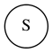
Figure 102: Start State
When we (the machine) are “turned on” we come up “in” our start state. We then start reading symbols, one by one, from our “input” — the string being presented for processing — and we move to other states according as the current symbol directs us to make one transition or another (the one labeled with that symbol). We do two things when making a transition:
- Update our current state to be the one at the other end of the transition link.
- “Consume” our currently read symbol and turn our attention to the next symbol in the input.
Sample state transition on a 0:

Figure 103: Single State-to-State Transition
Sample state transition on both 0 and 1 inputs. This is shorthand notation for two transitions, one for 0 and the other for 1:

Figure 104: Double State-to-State Transition
A double circle identifies an “accept” state. There can be more than one of these:

Figure 105: Accept State
Shedding our machine persona, we look at it once again as an actor, or an agent making decisions.
Accept states serve as language membership detectors. If a candidate input string is exhausted (entirely consumed by the transitions from state to state) at the exact transition an accept state is reached, the string is accepted as part of the language. A string exhausted in a non-accepting state is rejected — it is not part of the language. If a machine accepts all strings that belong to a specific language, and rejects all those that do not belong to the language, then the machine is said to recognize the language.
YZM
For example, the machine below recognizes the language entirely consisting of
the three strings [01 011 0111]:
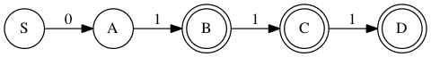
Figure 106: Three String Machine
More correctly (remembering our important rule above), there should be transitions for each input symbol out of each state, thus:
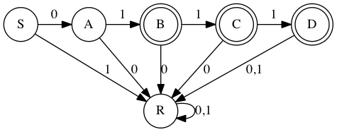
Figure 107: Complete Machine
The 6-state machine above realizes the 7-rule PSG below (only the rules are given, the other three components are inferable):
- S → 0A
- A → 1B
- B → 1C
- B → λ
- C → 1D
- C → λ
- D → λ
Recursive rules create loops, just like the * operation. For example, the rule:
A → 0A
yields
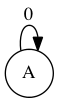
Figure 108: A Yields 0A
At node A, leave on a 0 and go back to A, as if the 0 in the rule were pulled to the left to label the arrow, and the A on the right were moved over and merged with the A on the left, in the process bending the arrow around into a loop.
For another example, the grammar:
- S → 1A
- A → 0A
- A → 1A
- A → λ
is represented thus:

Figure 109: Starting With One
This is similar to the (0 ∪ 1)*1 machine, except it recognizes all bitstrings that start with a one: 1(0 ∪ 1)*
BRE
Add a state and the necessary transitions to make this a valid state machine.
PQR
Compare/contrast the 1(0 ∪ 1)* machine with the (0 ∪ 1)*1 machine.
YZN
This next machine recognizes the language of all bitstrings whose second-to-last bit is a 0:

Figure 110: Second-to-Last is 0
NGP
The three-production grammar
- S → A1
- A → A0
- A → λ
generates the simple language consisting of any number of 0’s (including zero 0’s) followed by a single 1.
Build a simple two-state machine to model it.
PIQ
The following machine recognizes which language?
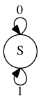
Figure 111: Single State with Transitions on 0 and 1
YZO
The language recognizers we have been examining are not the only interpretation we can give these kinds of state machines. You may have seen others in a course on digital logic and circuits. Here follows one of the simplest possible examples.
Consider a 1-bit computer controlling some lights in a room equipped with motion sensors. The lights are either off or on. The state of the lights can thus be remembered with just 1 bit of memory — 0 for off and 1 for on. The lights are controlled — toggled on and off — based on motion (or lack thereof) detected by the motion sensors, which are also connected to a timer.
The lights are initially off, so the computer starts in the OFF state. In this state, only the MOTION input causes it to move to the ON state, which causes the lights to go on. In the ON state, a MOTION input causes it to remain in the ON state (the lights stay on), and also resets the timer. After a configured time duration passes with no intervening MOTION inputs, the timer elapses, triggering the TIMER-ELAPSED input. This input causes it to move to the OFF state, which turns the lights off.
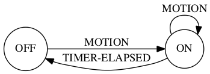
Figure 112: One-Bit Computer
YZP
We next exercise our knowledge to answer two related questions:
- What grammar generates a given language?
- What language is generated by a given grammar?
Try the second question first. Let N = [S A B] and T = [0 1].
Find the language generated by each grammar [N T S P]
when the set P of productions
PRK
NIO
PFA
BGT
NGI
NLR
What language is generated by the grammar described by this code?
(setq es "" a "0" b "1" productions '((S A B) (A a A b) (B b B a) (A es) (B es)) reverse-productions (reverse productions))
(find-derivation 'S)
0 0 1 1 1 1 0 0
BSP
Construct a PSG to generate {02n 1 | n ≥ 0}.
NBO
Construct a PSG to generate {0n 12n | n ≥ 0}.
PBI
Construct a PSG to generate {0n 1m 0n | m ≥ 0 and n ≥ 0}.
YZQ
Noam Chomsky is a linguist who first proposed the hierarchical language classification scheme that now bears his name. In the following figure, the nested sets are embedded in a Universal Set of All Languages (the superset of Types 0-3):

Figure 113: Chomsky Hierarchy
- A Tabular Taxonomy
- The following table maps the notions of language classes with the types of grammars that can generate those languages. The restrictions on productions distinguish what’s what (where N = Nonterminal, tl = terminal, and once again, LHS = Left-Hand Side and RHS = Right-Hand Side).
| Language Class | Type | Restrictions on Grammar Productions |
|---|---|---|
| Recursively Enumerable | 0 | No restrictions |
| (length of LHS may exceed length of RHS). | ||
| Context Sensitive | 1 | LHS may have more than one Nonterminal, |
| but the length of the LHS must be | ||
| at most the length of the RHS | ||
| (except for S → λ productions). | ||
| Context Free | 2 | Each LHS must have only one Nonterminal. |
| Regular | 3 | Left-linear or Right-linear |
| (each RHS must be either a tl or λ, | ||
| or have a single Nonterminal and be | ||
| all like Ntl, or all like tlN). |
TODO Develop Ideas For an Epilogue, or Other Episodic Installments
Solving a math problem to get clues to Til’s unknown whereabouts would be a fitting conclusion, while also foreshadowing further interaction and learning adventures of Til, Ila and Abu.
Til has gone missing for two weeks. He knows where he is, but has no way to communicate his location in the desert where he went to seek solitude. Something he feels compelled to do from time to time, much to his wife’s dismay. This time he is in some kind of trouble, trapped without means to get out on his own.
The problem is that his tracer signal is encrypted, in a very eccentric way. This way may have something to do with the final puzzle he gave Abu and Ila, namely, to find the connection between Edgar Allan Poe and the phrase “Notice cousin Felipe”.
)
Where the Book Ends is a starting point for Further Learning Adventures (FLAs).
- This book is not about that kind of word play
- According to http://www.urbandictionary.com/define.php?term=metaphors be with you, the phrase I’m using for this book’s title has been around awhile. I honestly do not know whether I heard or read it online first, or if I thought it up independently. No matter. Come day number four of month number five, all things Star Wars come to mind. ☺
The debate rages on whether the adjective in the subtitle should be tireless or timeless. Perhaps in a future printing the cover will have a hologram showing it both ways, depending on the angle of view.
Perhaps not. Ascribing the timelessness quality to one’s own work is the height of hubris. The pinnacle of presumption. The acme of arrogance. The depth of debauchery. The very idea. (Wait, that breaks the pattern. ☺)
So it is tireless — leaving the r-to-m transformation to its own devices. Perhaps in that iffy future holographic printing the transformation (transfiguration?) can be an animation that looks like a natural process, like wax melting under a flame, or gravity dictating the bounce of a ball. In the meantime, it is what it is — an obvious ploy for humor’s sake? Or perhaps just a PWCT?
Parallel Word-Chain Transformations chain a sequence of word transformations in lock-step. So maybe the ‘a’-less subtitle could move from “tireless work on play on words” to “tineless fork in clay of woods” to “tuneless dork is claw if goods” and from thence (some would say already) into madness and nonsense.
Just say no. See word/phrase/sentence transformations for what they are — discrete mathematical operations on strings and sequences of strings. No deeper meaning to them need be linked.
- rounds out the dyad
- Something consisting of two elements or parts is called a dyad. End of freebies. Upon encountering an unfamiliar word, from now on the reader is encouraged to apply a principle introduced in http://emp.byui.edu/neffr/mymanifesto.html. So what is a monad? A triad? Tetrad? Pentad? What comes next in this progression?
- Isaiah 28:10
- Read this verse at https://www.lds.org/scriptures/ot/isa/28?lang=eng#10 and then map the acronym-expand function to [LUL PUP HAL TAL].
- A quick review and preview
- Thanks to the last responder at https://www.quora.com/How-should-I-go-about-switching-from-an-object-orientated-way-of-thinking-to-a-more-functional-way-of-thinking
- any conceptual (as opposed to botanical) tree
- The reader is presumably familiar with hierarchical organization charts, family trees, tournament trees, perhaps even decision trees, to name a few.
- PSG ISA TLA TBE l8r
- To elabor8, TBA and TBD and TBE and TBR and the like are just TLAs interpreted by concatenating Arranged and Determined and Examined and Revealed and et cetera to To Be.
- diphthongs
- How laaaa-eekly is it that a random reader knows what these are?
- Not every language’s alphabet is so easy
- But the Hawaiian alphabet is even easier (smaller at least) — half less one, letters number but twelve: (A, E, H, I, K, L, M, N, O, P, U, and W). Aloha. Mahalo.
- alphabet
- What can happen when an Internet company uses a new Internet TLD (Top-Level Domain) name with three letters to accompany a three-letter host name: https://abc.xyz/
- PENTY, a carefully chosen way to code-say Christmas
PLENTYminus theL— better asABCDEFGHIJKMNOPQRSTUVWXYZas the ultimate in NoelsilLliness. ☺
- IYI
- If You’re Interested. I picked up this particular TLA by reading David Foster Wallace’s Everything and More: A Compact History of Infinity. https://en.wikipedia.org/wiki/Everything_and_More_(book)
- is my high hope
- My maybe-not-quite-so-high hope is that you will enjoy reading this book as much as I have enjoyed writing it. I’ve done my best to conquer my bad habit of overcomplificationaryizing everything. ☺
- He awoke with a start
- This character is my surrogate. Pedagogically speaking, my using his voice is a choice of a nice device. A sleek technique. A slick trick. A cool tool. A … … (Here we go again.)
- EDGE
- Elphaba Defying Gravity Emphatically, for example. (Note the FLA. Four-Letter Acronym. Which ISN’T. Ambiguous, too. Could mean Five-Letter Acronym.)
- he had acquired years ago
- If you take the time to enjoy it, http://www.amazon.com/Falling-Up-Shel-Silverstein/dp/0060248025 is a sweet treat. And wouldn’t you know it, on page 42 is a poem that uses lisp.
- DINK
- Dual Income No Kids
- SINKNEM
- Single Income No Kids Not Even Married
- STEM
- Science Technology Engineering Mathematics
- appreciate the flowers more or less?
- http://www.goodreads.com/quotes/184384-i-have-a-friend-who-s-an-artist-and-has-sometimes
- AKA
- Also Known As — but you already knew that, NEH?
- the mathematical idea of a set
- A mathematician/computer scientist wrote the following intriguing words:
It is impossible to improve upon [Georg] Cantor’s succinct 1883 definition: A set is a Many which allows itself to be thought of as a One. One of the most basic human faculties is the perception of sets. […] When you think about your associates and acquaintances you tend to organize your thought by sorting these people into overlapping sets: friends, women, scientists, drinkers, gardeners, sports fans, parents, etc. Or the books that you own, the recipes that you know, the clothes you have — all of these bewildering data sets are organized, at the most primitive level, by the simple and automatic process of set formation, of picking out certain multiplicities that allow themselves to be thought of as unities. Do sets exist even if no one thinks of them? The numbers 2, 47, 48, 333, 400, and 1981 have no obvious property in common, yet it is clearly possible to think of these numbers all at once, as I am now doing. But must someone actually think of a set for it to exist? […] The basic simplifying assumption of Cantorian set theory is that sets are there already, regardless of whether anyone does or could notice them. A set is not so much a “/Many/ which allows itself to be thought of as a One” as it is a “Many which allows itself to be thought of as a One, if someone with a large enough mind cared to try.” For the set theorist, the bust of Venus is already present in every block of marble. And a set M consisting of ten billion random natural numbers exists even though no human can ever see M all at once. A set is the form of a possible thought, where “possible” is taken in the broadest possible sense. — Rudy Rucker in Infinity and The Mind: The Science and Philosophy of the Infinite
Give page reference
https://en.wikipedia.org/wiki/Infinity_and_the_Mind
- dispensing with commas
- IMO, commas are the ugly ducklings in the world of programming language syntax.
- we truncated the set N
- The set N of natural numbers (including zero) is AKA the nonnegative numbers. Clarification: in this context numbers mean integers, numbers with no fractional parts, not even decimal points followed by nothing (or nothing but zeros). The set P is not the set of positive integers, that’s called Z+. P names the prime numbers (but not always). Z- is the negative integers, but there’s no abbreviation for the nonpositive integers, which is Z- together with 0. All together, Z is the short name for all integers, positive, negative, and zero. Z is short for Zahlen, which is the German word for numbers. Now you know.
- our rule also prefers
- The vectors-over-lists preference has a special reason, revealed IYI. But it’s not just its indexability. A lisp list can also be indexed, but the operation is more expensive than a vector index (a quick add offset and pointer dereference), as it must walk the list, counting as it goes. Before we delve here into a bit of algorithm analysis, what is an algorithm? The recipe analogy is often used, but recipes for cooking are not the only kind. For another, far more weighty example, see https://www.lds.org/general-conference/2008/04/the-gospel-of-jesus-christ?lang=eng — but it’s interesting that Elder Perry ties the gospel recipe back to the cooking kind. This kind features an implicit “Step 0” that could be made explicit as: “Acquire all required ingredients in the proper quantities.” The “List of Ingredients” is usually the first component of a recipe, with “Directions” second.
- further processing step
- Discovering how the emacs elisp
Read-Evaluate-Print Loop (
REPL) works is a GPAO.
- Boolean values
- George Boole is who this data type is named for, mostly because of his seminal book shortnamed the The Laws of Thought. (What is its longer name?)
- just use true and false
- These global variables must be defined before you
try to use them. Putting, e.g.,
(require 'ment)at the top of your.elsource code file will work provided you have supplied a package namedmentto your emacs lisp environMENT. A package in lisp is a module (library, body of code) that is defined in a global namespace. The package name is a symbol (making it unique) and the named package is found and loaded on two conditions: one, it is in a file named <package-name>.el[c] that has the form(provide '<package-name>)in it (typically as the last line of the file), and two, the file is somewhere in the load path (in emacs,load-pathis an elisp global variable, but other lisps have something equivalent). When does a package get loaded? The(require '<package-name>)special form sees to it. (The single quote preceding <package-name> suppresses evaluation of the <package-name> symbol.)
- kind of wishy-washiness
- I used to think I was indecisive, but now I’m not so sure. ☺
- the ‘exclusive’ or
- Contrasted with the ‘inclusive’ or — “p or q” is true if either p is true or q is true, OR BOTH. For ‘exclusive’ or, replace ‘OR BOTH’ with ‘BUT NOT BOTH’.
- simpler versions of itself
- There’s a different kind of recursive flavor
to this never-ending ‘dialogue’ that leads to less and less simple
versions of itself:
- Sue: I’m happy.
- Tom: I’m happy you’re happy.
- Sue: I’m happy you’re happy I’m happy.
- Tom: I’m happy you’re happy I’m happy you’re happy.
- …
- eight possibilities
- This is because eight equals two to the
third power. Just like two choices (21) expand to four (22)
when for each of two choices we must make another binary
choice. Thence to 8, 16, 32, … or 2n where
nis the number of true-or-false yes-or-no in-or-out on-or-off … choices made.
- it enables certain useful encodings
- The arithmetization of
logic is used to operationalize logic, and make it more like
doing arithmetic. For example,
not(as innot 1 = 0, not 0 = 1) becomes the subtraction-from-one operation. Compound propositional formulas can be encoded in useful ways as well. One useful encoding turns a Boolean formula φ into a polynomial equation E in many variables. This clever encoding is such that φ is satisfied if and only if E has integral roots.
- Make it so.
- Captain Picard really started something here: https://www.youtube.com/watch?v=RrG4JnrN5GA
- much more than that
- A nice metaphor for a symbol is found here: https://www.gnu.org/software/emacs/manual/html_node/eintr/Symbols-as-Chest.html#index-Chest-of-Drawers_002c-metaphor-for-a-symbol (which is not a bad introduction to programming in elisp: https://www.gnu.org/software/emacs/manual/html_node/eintr/index.html#SEC_Contents).
- If you try it, an error results
When the elisp debugger’s ∗Backtrace∗ buffer pops up with the following information:
Debugger entered–Lisp error: <a lispy description of the error>
<a stack trace showing the error’s code path>
you should probably just quit, and not worry just yet about learning the intricate ins and outs of elisp debugging. The
qkey is your friend.
- symbolic expression
- Lispers shorten this to s-expression, or sexp for shorter.
- numbers self-evaluate
- Kind of like TLA self-describes. What other data types do you think self-evaluate in lisp?
- xkcd comic that compares lisp
- http://www.explainxkcd.com/wiki/index.php/297:_Lisp_Cycles. The really deep dive into lisp lore is found at http://www.buildyourownlisp.com/ — but it’s not for the faint of heart.
- any restrictions on what objects
- Not in lisp. This powerful language allows even functions themselves to be inputs and outputs to/from other functions.
- non-trivial task
- Made more so by lisp’s dynamic (as opposed to static) typing, which means variables don’t have declared types, they can store any type during their lifetime.
- they have a special name
- When talking about logic, the noun predicate
— to quote from the dictionary — “is that part of a proposition that
is affirmed or denied about the subject.” For example, in the proposition
“We are mortal,” “mortal” (or “is-mortal” or “are-mortal”) is the
predicate. Any statement about something could “predicate” (the verb
form) some general term of that thing; however, confusion may result.
For example, “The main purpose of the Doctrine and Covenants […] is to
implement the law of consecration.” It’s not easy to pull out a term
which, predicated of “the Doctrine and Covenants”, has the same meaning.
So if we’re saying
P(x), wherexstands for “the Doctrine and Covenants”, what doesPstand for? How about this?Pstands for “to-implement-the-law-of-consecration-main-purpose-of”. Just sayingP(x)(or lisp-style,(P x)) is easier. Let it stand for any desired sentence with anxin it. It’s not necessary (nor even desirable in most cases) to say whatPstands for by itself.
- with me here
- In real space, yes, but in thought space?
- someone’s take
- I found this summary on some printed slides left behind in a math classroom — author unknown.
- how mathematicians think
- See the fascinating book by William Byers at http://www.amazon.com/How-Mathematicians-Think-Contradiction-Mathematics/dp/0691145997
- seven steps
- Adapted from an exposition in the book Gödel’s Proof, by Ernest Nagel and James R. Newman. https://www.amazon.com/Gödels-Proof-Ernest-Nagel/dp/0814758371
- “mathmagic land”
- I believe it was in fifth grade that I first saw this tribute to the beauty and power of math: https://en.wikipedia.org/wiki/Donald_in_Mathmagic_Land.
- multiplicative building blocks
- It is interesting to compare these building blocks with the additive building blocks, the powers of 2. Sums of 1, 2, 4, 8, etc., in all their combinations, suffice to generate all the nonnegative integers. (Zero, of course, is the combination that takes none of these powers of 2.)
- 1 is neither prime nor composite
- See http://numberphile.com/videos/1notprime.html (at 1:08 of a 5:21 video) if you need convincing that 1 is indeed the loneliest number.
- 2 is the only even prime
- Which makes it the oddest prime of all, according to an old math joke. ☺
- can be perused and pursued
- From the book Prime Numbers, The Most Mysterious Figures in Math by David Wells: http://www.amazon.com/Prime-Numbers-Most-Mysterious-Figures/dp/1620458241.
- GIMPS
- See (and participate) at https://www.mersenne.org/.
- this cryptic string
- — perhaps it is a message giving the location of some event!
- easier counting task
- How many different 3-scoop cups of ice cream are there with just 3 flavors to choose from? How many with 31 choices? These are counting questions you should immediately know how to answer. Exercises, not problems!
- have collaborated somehow
- Two famous such collaboration graphs revolve around Paul Erdös and Kevin Bacon, even though those two never collaborated.
- Seven bridges
- of Königsberg, described as a historically notable problem in mathematics.
- visually pleasing
- as produced by this graph visualization software suite.
- everyday example of a directed multigraph
- How about this famous one? And in that regard, what is notable about this resource?
- Ramsey theory
- according to the linked article, “is named after the British mathematician and philosopher Frank P. Ramsey, [and] is a branch of mathematics that studies the conditions under which order must appear. Problems in Ramsey theory typically ask a question of the form: ‘how many elements of some structure must there be to guarantee that a particular property will hold?’”
- R(5, 5) is at least 43
- as Geoff Exoo found that there is a K42 that is link-2-colorable but has no same-colored triangles.
- think about language
- As reported in the book Incompleteness: The Proof and Paradox of Kurt Gödel, by Rebecca Goldstein, page 110. See also page 112, at the top. See link to book below.
- Math writing is notorious
Adapted from a document on Mathematical Writing by Donald E. Knuth, Tracy Larrabee, and Paul M. Roberts, based on a course given at Stanford University, here’s an example of bad math writing:
If L+(P, N0) is the set of functions f : P → N0 with the property that
∃n0 ∈ N0 ∀p ∈ P p ≥ n0 ⇒ f(p) = 0
then there exists a bijection N1 → L+(P, N0) such that if n → f then
n = ∏p ∈ P pf(p).
Here P is the prime numbers, and N1 = N0 ∖ {0}.
Here is Donald Knuth, writing with clarity what the above is trying to say:
According to the Fundamental Theorem of Arithmetic, each positive integer u can be expressed in the form
u = 2a 3b 5c 7d 11e …
where all primes in increasing order are in the product, where the exponents a, b, c, d, e, … are uniquely determined nonnegative integers, and where all but a finite number of the exponents are zero.
- foreign language of mathematical jargon
- From the book Coincidences, Chaos, and All That Math Jazz — Making Light of Weighty Ideas by Edward B. Burger and Michael Starbird, page viii: https://www.amazon.com/Coincidences-Chaos-That-Math-Jazz/dp/0393329313
- vocabulary and syntax of human language
- From the book Interactions: A Journey Through the Mind of a Particle Physicist and the Matter of This World, by Sheldon L. Glashow, page 47: https://www.amazon.com/Interactions-Journey-Through-Particle-Physicist/dp/0446513156
- a description of formal systems
- From the book Incompleteness: The Proof and Paradox of Kurt Gödel, by Rebecca Goldstein, page 86: https://www.amazon.com/Incompleteness-Proof-Paradox-Gödel-Discoveries/dp/0393327604
- beads on a string
Found in the book The Stuff of Thought: Language as a Window into Human Nature by Steven Pinker: https://www.amazon.com/Stuff-Thought-Language-Window-Nature/dp/0143114247
This analogy is also used (less successfully) to describe chromosomes as being made up of genes (the beads).
- simply trying to divide 23 by 2 and 3
- Why do we not need to also do trial division of 23 by 5, 7, 11, etc., to clinch its primeness?
- Sieve of Eratosthenes
- Using some elisp code to augment paper-and-pencil investigation:
(loop for n from 2 to 97 by 7 collect (loop for i from 0 below 7 collect (+ i n)))
| 2 | 3 | 4 | 5 | 6 | 7 | 8 |
| 9 | 10 | 11 | 12 | 13 | 14 | 15 |
| 16 | 17 | 18 | 19 | 20 | 21 | 22 |
| 23 | 24 | 25 | 26 | 27 | 28 | 29 |
| 30 | 31 | 32 | 33 | 34 | 35 | 36 |
| 37 | 38 | 39 | 40 | 41 | 42 | 43 |
| 44 | 45 | 46 | 47 | 48 | 49 | 50 |
| 51 | 52 | 53 | 54 | 55 | 56 | 57 |
| 58 | 59 | 60 | 61 | 62 | 63 | 64 |
| 65 | 66 | 67 | 68 | 69 | 70 | 71 |
| 72 | 73 | 74 | 75 | 76 | 77 | 78 |
| 79 | 80 | 81 | 82 | 83 | 84 | 85 |
| 86 | 87 | 88 | 89 | 90 | 91 | 92 |
| 93 | 94 | 95 | 96 | 97 | 98 | 99 |
We take these integers and manually sieve them — filtering out all nonprimes — by crossing out every other number (after 2 — so 4, 6, 8, etc. are crossed out), which excludes the multiples of 2, every third number (after 3), which drops the multiples of 3, every fifth number (after 5) to filter out the multiples of 5, etc. Note that some numbers (e.g., the multiples of 6) get crossed out twice — once for the multiples-of-2 sieving, once for the multiples-of-3 sieving — and this is an acceptable redundancy, as it avoids the continual use of a conditional that says only cross a number out if it is not already crossed out!
| 2 | 3 | 5 | 7 | |||
| 9 | 11 | 13 | 15 | |||
| 17 | 19 | 21 | ||||
| 23 | 25 | 27 | 29 | |||
| 31 | 33 | 35 | ||||
| 37 | 39 | 41 | 43 | |||
| 45 | 47 | 49 | ||||
| 51 | 53 | 55 | 57 | |||
| 59 | 61 | 63 | ||||
| 65 | 67 | 69 | 71 | |||
| 73 | 75 | 77 | ||||
| 79 | 81 | 83 | 85 | |||
| 87 | 89 | 91 | ||||
| 93 | 95 | 97 | 99 |
Now cross out the multiples of 3:
| 2 | 3 | 5 | 7 | |||
| 11 | 13 | |||||
| 17 | 19 | |||||
| 23 | 25 | 29 | ||||
| 31 | 35 | |||||
| 37 | 41 | 43 | ||||
| 47 | 49 | |||||
| 53 | 55 | |||||
| 59 | 61 | |||||
| 65 | 67 | 71 | ||||
| 73 | 77 | |||||
| 79 | 83 | 85 | ||||
| 89 | 91 | |||||
| 95 | 97 |
Now cross out the multiples of 5:
| 2 | 3 | 5 | 7 | |||
| 11 | 13 | |||||
| 17 | 19 | |||||
| 23 | 29 | |||||
| 31 | ||||||
| 37 | 41 | 43 | ||||
| 47 | 49 | |||||
| 53 | ||||||
| 59 | 61 | |||||
| 67 | 71 | |||||
| 73 | 77 | |||||
| 79 | 83 | |||||
| 89 | 91 | |||||
| 97 |
Now cross out the three remaining multiples of 7:
| 2 | 3 | 5 | 7 | |||
| 11 | 13 | |||||
| 17 | 19 | |||||
| 23 | 29 | |||||
| 31 | ||||||
| 37 | 41 | 43 | ||||
| 47 | ||||||
| 53 | ||||||
| 59 | 61 | |||||
| 67 | 71 | |||||
| 73 | ||||||
| 79 | 83 | |||||
| 89 | ||||||
| 97 |
Now to do with code what we just did manually (but only up to 25). We cross out a number by negating it (making it negative) and must use a conditional to avoid undoing that negation once done.
(require 'calc-misc) ;; for math-posp (defun negate-multiple (n m) (if (and (/= n m) (zerop (mod n m))) (if (< n 0) n (- n)) n)) (let* ((all (number-sequence 2 25)) (all-minus-multiples-of-2 (mapcar (lambda (n) (negate-multiple n 2)) all)) (all-minus-multiples-of-2-and-3 (mapcar (lambda (n) (negate-multiple n 3)) all-minus-multiples-of-2)) (all-minus-multiples-of-2-and-3-and-5 (mapcar (lambda (n) (negate-multiple n 5)) all-minus-multiples-of-2-and-3))) (list all-minus-multiples-of-2 all-minus-multiples-of-2-and-3 all-minus-multiples-of-2-and-3-and-5 (remove-if-not 'math-posp all-minus-multiples-of-2-and-3-and-5)))
| 2 | 3 | -4 | 5 | -6 | 7 | -8 | 9 | -10 | 11 | -12 | 13 | -14 | 15 | -16 | 17 | -18 | 19 | -20 | 21 | -22 | 23 | -24 | 25 |
| 2 | 3 | -4 | 5 | -6 | 7 | -8 | -9 | -10 | 11 | -12 | 13 | -14 | -15 | -16 | 17 | -18 | 19 | -20 | -21 | -22 | 23 | -24 | 25 |
| 2 | 3 | -4 | 5 | -6 | 7 | -8 | -9 | -10 | 11 | -12 | 13 | -14 | -15 | -16 | 17 | -18 | 19 | -20 | -21 | -22 | 23 | -24 | -25 |
| 2 | 3 | 5 | 7 | 11 | 13 | 17 | 19 | 23 |
This final sieve operates stage by stage (recording a copy of each stage for later inspection) using a recursive deletion of nonprimes, starting with a complete number sequence from 2 to some limit. Not the most efficient sieve, but passable.
(require 'cl) (setq stages nil) (defun delete-nonprimes (a) (push (copy-sequence a) stages) (if (> (length a) 1) (delete-if (lambda (n) (zerop (mod n (car a)))) (cdr a))) (if (> (length a) 1) (delete-nonprimes (cdr a))) a) (defun sieve-of-Eratosthenes (limit) (delete-nonprimes (number-sequence 2 limit)))
(sieve-of-Eratosthenes 99)
| 2 | 3 | 5 | 7 | 11 | 13 | 17 | 19 | 23 | 29 | 31 | 37 | 41 | 43 | 47 | 53 | 59 | 61 | 67 | 71 | 73 | 79 | 83 | 89 | 97 |
stages
| 97 | |||||||||||||||||||||||||||||||||||||||||||||||||||||||||||||||||||||||||||||||||||||||||||||||||
| 89 | 97 | ||||||||||||||||||||||||||||||||||||||||||||||||||||||||||||||||||||||||||||||||||||||||||||||||
| 83 | 89 | 97 | |||||||||||||||||||||||||||||||||||||||||||||||||||||||||||||||||||||||||||||||||||||||||||||||
| 79 | 83 | 89 | 97 | ||||||||||||||||||||||||||||||||||||||||||||||||||||||||||||||||||||||||||||||||||||||||||||||
| 73 | 79 | 83 | 89 | 97 | |||||||||||||||||||||||||||||||||||||||||||||||||||||||||||||||||||||||||||||||||||||||||||||
| 71 | 73 | 79 | 83 | 89 | 97 | ||||||||||||||||||||||||||||||||||||||||||||||||||||||||||||||||||||||||||||||||||||||||||||
| 67 | 71 | 73 | 79 | 83 | 89 | 97 | |||||||||||||||||||||||||||||||||||||||||||||||||||||||||||||||||||||||||||||||||||||||||||
| 61 | 67 | 71 | 73 | 79 | 83 | 89 | 97 | ||||||||||||||||||||||||||||||||||||||||||||||||||||||||||||||||||||||||||||||||||||||||||
| 59 | 61 | 67 | 71 | 73 | 79 | 83 | 89 | 97 | |||||||||||||||||||||||||||||||||||||||||||||||||||||||||||||||||||||||||||||||||||||||||
| 53 | 59 | 61 | 67 | 71 | 73 | 79 | 83 | 89 | 97 | ||||||||||||||||||||||||||||||||||||||||||||||||||||||||||||||||||||||||||||||||||||||||
| 47 | 53 | 59 | 61 | 67 | 71 | 73 | 79 | 83 | 89 | 97 | |||||||||||||||||||||||||||||||||||||||||||||||||||||||||||||||||||||||||||||||||||||||
| 43 | 47 | 53 | 59 | 61 | 67 | 71 | 73 | 79 | 83 | 89 | 97 | ||||||||||||||||||||||||||||||||||||||||||||||||||||||||||||||||||||||||||||||||||||||
| 41 | 43 | 47 | 53 | 59 | 61 | 67 | 71 | 73 | 79 | 83 | 89 | 97 | |||||||||||||||||||||||||||||||||||||||||||||||||||||||||||||||||||||||||||||||||||||
| 37 | 41 | 43 | 47 | 53 | 59 | 61 | 67 | 71 | 73 | 79 | 83 | 89 | 97 | ||||||||||||||||||||||||||||||||||||||||||||||||||||||||||||||||||||||||||||||||||||
| 31 | 37 | 41 | 43 | 47 | 53 | 59 | 61 | 67 | 71 | 73 | 79 | 83 | 89 | 97 | |||||||||||||||||||||||||||||||||||||||||||||||||||||||||||||||||||||||||||||||||||
| 29 | 31 | 37 | 41 | 43 | 47 | 53 | 59 | 61 | 67 | 71 | 73 | 79 | 83 | 89 | 97 | ||||||||||||||||||||||||||||||||||||||||||||||||||||||||||||||||||||||||||||||||||
| 23 | 29 | 31 | 37 | 41 | 43 | 47 | 53 | 59 | 61 | 67 | 71 | 73 | 79 | 83 | 89 | 97 | |||||||||||||||||||||||||||||||||||||||||||||||||||||||||||||||||||||||||||||||||
| 19 | 23 | 29 | 31 | 37 | 41 | 43 | 47 | 53 | 59 | 61 | 67 | 71 | 73 | 79 | 83 | 89 | 97 | ||||||||||||||||||||||||||||||||||||||||||||||||||||||||||||||||||||||||||||||||
| 17 | 19 | 23 | 29 | 31 | 37 | 41 | 43 | 47 | 53 | 59 | 61 | 67 | 71 | 73 | 79 | 83 | 89 | 97 | |||||||||||||||||||||||||||||||||||||||||||||||||||||||||||||||||||||||||||||||
| 13 | 17 | 19 | 23 | 29 | 31 | 37 | 41 | 43 | 47 | 53 | 59 | 61 | 67 | 71 | 73 | 79 | 83 | 89 | 97 | ||||||||||||||||||||||||||||||||||||||||||||||||||||||||||||||||||||||||||||||
| 11 | 13 | 17 | 19 | 23 | 29 | 31 | 37 | 41 | 43 | 47 | 53 | 59 | 61 | 67 | 71 | 73 | 79 | 83 | 89 | 97 | |||||||||||||||||||||||||||||||||||||||||||||||||||||||||||||||||||||||||||||
| 7 | 11 | 13 | 17 | 19 | 23 | 29 | 31 | 37 | 41 | 43 | 47 | 49 | 53 | 59 | 61 | 67 | 71 | 73 | 77 | 79 | 83 | 89 | 91 | 97 | |||||||||||||||||||||||||||||||||||||||||||||||||||||||||||||||||||||||||
| 5 | 7 | 11 | 13 | 17 | 19 | 23 | 25 | 29 | 31 | 35 | 37 | 41 | 43 | 47 | 49 | 53 | 55 | 59 | 61 | 65 | 67 | 71 | 73 | 77 | 79 | 83 | 85 | 89 | 91 | 95 | 97 | ||||||||||||||||||||||||||||||||||||||||||||||||||||||||||||||||||
| 3 | 5 | 7 | 9 | 11 | 13 | 15 | 17 | 19 | 21 | 23 | 25 | 27 | 29 | 31 | 33 | 35 | 37 | 39 | 41 | 43 | 45 | 47 | 49 | 51 | 53 | 55 | 57 | 59 | 61 | 63 | 65 | 67 | 69 | 71 | 73 | 75 | 77 | 79 | 81 | 83 | 85 | 87 | 89 | 91 | 93 | 95 | 97 | 99 | |||||||||||||||||||||||||||||||||||||||||||||||||
| 2 | 3 | 4 | 5 | 6 | 7 | 8 | 9 | 10 | 11 | 12 | 13 | 14 | 15 | 16 | 17 | 18 | 19 | 20 | 21 | 22 | 23 | 24 | 25 | 26 | 27 | 28 | 29 | 30 | 31 | 32 | 33 | 34 | 35 | 36 | 37 | 38 | 39 | 40 | 41 | 42 | 43 | 44 | 45 | 46 | 47 | 48 | 49 | 50 | 51 | 52 | 53 | 54 | 55 | 56 | 57 | 58 | 59 | 60 | 61 | 62 | 63 | 64 | 65 | 66 | 67 | 68 | 69 | 70 | 71 | 72 | 73 | 74 | 75 | 76 | 77 | 78 | 79 | 80 | 81 | 82 | 83 | 84 | 85 | 86 | 87 | 88 | 89 | 90 | 91 | 92 | 93 | 94 | 95 | 96 | 97 | 98 | 99 |
The results if the recording is simply (push a stages) shows how the
destructive delete culls out nonprimes from the same a list on every stage:
| 97 | ||||||||||||||||||||||||
| 89 | 97 | |||||||||||||||||||||||
| 83 | 89 | 97 | ||||||||||||||||||||||
| 79 | 83 | 89 | 97 | |||||||||||||||||||||
| 73 | 79 | 83 | 89 | 97 | ||||||||||||||||||||
| 71 | 73 | 79 | 83 | 89 | 97 | |||||||||||||||||||
| 67 | 71 | 73 | 79 | 83 | 89 | 97 | ||||||||||||||||||
| 61 | 67 | 71 | 73 | 79 | 83 | 89 | 97 | |||||||||||||||||
| 59 | 61 | 67 | 71 | 73 | 79 | 83 | 89 | 97 | ||||||||||||||||
| 53 | 59 | 61 | 67 | 71 | 73 | 79 | 83 | 89 | 97 | |||||||||||||||
| 47 | 53 | 59 | 61 | 67 | 71 | 73 | 79 | 83 | 89 | 97 | ||||||||||||||
| 43 | 47 | 53 | 59 | 61 | 67 | 71 | 73 | 79 | 83 | 89 | 97 | |||||||||||||
| 41 | 43 | 47 | 53 | 59 | 61 | 67 | 71 | 73 | 79 | 83 | 89 | 97 | ||||||||||||
| 37 | 41 | 43 | 47 | 53 | 59 | 61 | 67 | 71 | 73 | 79 | 83 | 89 | 97 | |||||||||||
| 31 | 37 | 41 | 43 | 47 | 53 | 59 | 61 | 67 | 71 | 73 | 79 | 83 | 89 | 97 | ||||||||||
| 29 | 31 | 37 | 41 | 43 | 47 | 53 | 59 | 61 | 67 | 71 | 73 | 79 | 83 | 89 | 97 | |||||||||
| 23 | 29 | 31 | 37 | 41 | 43 | 47 | 53 | 59 | 61 | 67 | 71 | 73 | 79 | 83 | 89 | 97 | ||||||||
| 19 | 23 | 29 | 31 | 37 | 41 | 43 | 47 | 53 | 59 | 61 | 67 | 71 | 73 | 79 | 83 | 89 | 97 | |||||||
| 17 | 19 | 23 | 29 | 31 | 37 | 41 | 43 | 47 | 53 | 59 | 61 | 67 | 71 | 73 | 79 | 83 | 89 | 97 | ||||||
| 13 | 17 | 19 | 23 | 29 | 31 | 37 | 41 | 43 | 47 | 53 | 59 | 61 | 67 | 71 | 73 | 79 | 83 | 89 | 97 | |||||
| 11 | 13 | 17 | 19 | 23 | 29 | 31 | 37 | 41 | 43 | 47 | 53 | 59 | 61 | 67 | 71 | 73 | 79 | 83 | 89 | 97 | ||||
| 7 | 11 | 13 | 17 | 19 | 23 | 29 | 31 | 37 | 41 | 43 | 47 | 53 | 59 | 61 | 67 | 71 | 73 | 79 | 83 | 89 | 97 | |||
| 5 | 7 | 11 | 13 | 17 | 19 | 23 | 29 | 31 | 37 | 41 | 43 | 47 | 53 | 59 | 61 | 67 | 71 | 73 | 79 | 83 | 89 | 97 | ||
| 3 | 5 | 7 | 11 | 13 | 17 | 19 | 23 | 29 | 31 | 37 | 41 | 43 | 47 | 53 | 59 | 61 | 67 | 71 | 73 | 79 | 83 | 89 | 97 | |
| 2 | 3 | 5 | 7 | 11 | 13 | 17 | 19 | 23 | 29 | 31 | 37 | 41 | 43 | 47 | 53 | 59 | 61 | 67 | 71 | 73 | 79 | 83 | 89 | 97 |
- side-by-side without adornments
- Strings are thus like lisp symbols, whose
names are lisp strings, which are sequences of characters, which are
represented as integers. They differ from lisp symbols by accommodating
more alphabets. For example,
123is a string over the alphabet[0 1 2 3 4 5 6 7 8 9]— in lisp it would be a number.
- the answers in the endnote
The answer to the first question is no. Adjectives do not follow other adjectives with the simple rule that ADJECTIVE produces either one terminal adjective (hungry) or the other (sleepy). English allows multiple adjectives, but it needs a more sophisticated rule, a “loopy” rule, i.e., a recursive rule:
ADJECTIVE → ADJECTIVE ADJECTIVE | λ
The answer to the second question is to add all of the following except the first — use it to replace the non-recursive ADJECTIVE rule:
ADJECTIVE → hungry | sleepy | quick | brown | lazy
PREPOSITION → of | from | by | on | in | over | …
PREPOSITIONAL-PHRASE → PREPOSITION NOUN-PHRASE
VERB-PHRASE → VERB PREPOSITIONAL-PHRASE
- long thought to be context free
- But a clever argument shows that it is not. See English Is Not a Context-Free Language, James Higginbotham, Linguistic Inquiry Vol. 15, No. 2 (Spring, 1984), pages 225-234.
- Kleene star
- Named after Stephen Cole Kleene, the mathematician who defined this powerful operation to work on either a set of symbols or a set of strings. The article referenced defines V* “as the set of finite-length strings that can be generated by concatenating arbitrary elements of V, allowing the use of the same element multiple times.”
- take this on faith if necessary
- For illustration’s sake, and analogous to the set of all bitstrings, take
the alphabet
[a b], where the Kleene star produces the following set:
["" "a" "b" "aa" "ab" "ba" "bb" "aaa" "aab" "aba" "abb" "baa" "bab" "bba" "bbb" "aaaa" ...]
Note that if we used standard dictionary order to list this set, it would
start like ["" "a" "aa" "aaa" "aaaa" ...] and never get to "b", etc.
That is why the length-considering lexicographic way is preferred.
- state machines
- Or finite-state machines or finite-state automata (automaton singular)). (We will avoid infinite-state automata like the plague!)
- state diagram
- Or state-transition diagram.
- start node or state
- More conventionally, the start state is identified by an incoming arrow pointing to it (but coming from nowhere). Or, in another form of annotation, a triangle pointing to it is sometimes used to mark the start state.
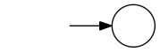
Figure 114: Start State with Incoming Arrow
- important rule
- This rule must be adhered to for the machine to be a valid deterministic finite automaton (DFA). The rule can be relaxed when we are ready to explore the related nondeterministic finite automata (NFA).